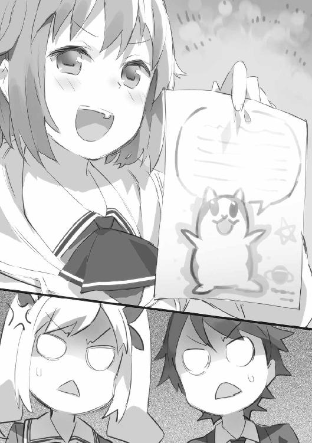

| エンド・リ・エンド１ 退屈で無価値な現実から、ゲエム世界へようこそ。 (角川スニーカー文庫) | |
| 耳目口 司 | |
| (2014) | |

エンド・リ・エンド１
退屈で無価値な現実から、ゲエム世界へようこそ。
耳目口 司

角川スニーカー文庫
本作品の全部または一部を無断で複製、転載、配信、送信したり、ホームページ上に転載することを禁止します。また、本作品の内容を無断で改変、改ざん等を行うことも禁止します。
本作品購入時にご承諾いただいた規約により、有償・無償にかかわらず本作品を第三者に譲渡することはできません。
本作品を示すサムネイルなどのイメージ画像は、再ダウンロード時に予告なく変更される場合があります。
本作品は縦書きでレイアウトされています。
また、ご覧になるリーディングシステムにより、表示の差が認められることがあります。
ベッドの脇には携帯ゲーム機が置いてあり、画面の向こう側から、美少女が俺のことを見ていた。
『私、ずっと昔から、君のことが好きだったんだよ』
そんな甘酸っぱい台詞が画面下に表示され、トロけるような甘いボイスが一緒に流れ、美少女は目を閉じ、唇を前に突き出す。
少し前まで、俺の鼓動は高鳴っていた。しかし、今はこれっぽっちも心動かされない。
現実に気付いてしまったのだ。
俺はその美少女と一緒に高校生活を送り、思い出を育んできた。そうしてクリスマスの夜に、彼女から告白を受けた。
だが、正確にはその美少女は、画面の向こうにいる『主人公』に告白をしていて。
よく考えたら彼女と思い出を育んできたのは、画面の向こうにいる『主人公』であり。
よく考えたら高校生活を送っていたのは、画面の向こうにいる『主人公』である、世間一般で言う『ギャルゲー』を、俺はプレイしているだけなのだという現実に気付いた。
俺は、とある一人の恵まれた『主人公』くんの恋愛模様を見ていただけの観客なのだ。
そしたら一気に冷めた。
プレイ時間にして、およそ七時間の恋も冷めた。
だから俺は、ベッド脇にゲーム機を放り投げ、次の点滴の時間まで、白いベッドの中にただ潜り込んだ。
訪れる人の多くは「白い部屋だ」と言ったが、俺には自分のいる個室が、くすんだ灰色の部屋だとしか思えない。
手の届く棚に置いてあるのは、漫画のような表紙のライトノベルと、女の子と付き合うことを主目的としたギャルゲーばかり。その多くが、高校生を主人公としたものだ。
彼らは面白おかしく学生生活を満喫し、時に世界の存亡を賭けて戦い、ほぼ必然的に恋をしていた。そんな『主人公』たちに共感し、時には共に涙したものだけど、今となってはそれすら出来るか怪しい。
これはフィクションです。現実のものではない、架空の物語です。
そう考えたら、それらに感情移入をしていた自分の読書経験全てに冷めてしまった。
普通が欲しくて、普通を空想して。そんな特別に、俺は憧れていただけなのに──
「『主人公』になって、人生をやり直してみたくないデスか？」
声をかけられて気付く。
俺は、何もないただ真っ白の空間で、膝を抱えて震えていた。いつ、こんな場所に連れて来られたのだろう。時間の感覚が曖昧だ。
昨日の境界が分からない。
今日はいつ、始まったのだろう。
「『主人公』になって、人生をやり直してみたくないデスか？」
「人生......？」
もう一度、まったく同じことを言われたような気がして、俺の意識は少しずつ覚醒していく。
そこにいたのは、青い動物だった。
青色をした動物、という時点で既に何なのか分からない。拳ほどの大きさの、ずんぐりと太った何かだ。おそらく、ネズミ系の何かだという予想はつけられた。
「何この──ナニ？」
「ハムスターにしか見えないでしょう？」
「ハムスター......？」
俺だってジャンガリアンとか、ゴールデンだとか、ハムスターにも色々な種類があることくらいは知っている。それでも、青色はさすがに聞いたことがない。
「可愛いでしょう？ 可愛いデスよね☆」
「いや、全然」
「ヒャハハッ！ それは残念デース☆」
鮮やかすぎる真っ青なハムスターは、単純に生物として不気味だった。俺の返答に、自称ハムスターだそうである生き物はケラケラと笑い声をあげる。
底抜けに明るく、テンションの高い話し声が、この小さなハムスターから発せられていることに、俺はとてつもない不気味さを感じた。
不安定に思った、と言い換えてもいい。
俺を取り巻くこの環境が、世界が、全て歪で、おかしく、気持ち悪く感じられた。
「どうせ暇人さんなんでしょう？ ここは一つ、ワタシとゲームをしましょうよ」
「ゲーム......？」
「何も報われない、退屈で、無価値で、面白みもない、クソで、反吐が出るようなキミの灰色の人生を、やり直すゲームに参加してみませんかという提案デス☆」
言いたい放題だな、と他人事のように思う。そして、他人事のように俺は同意する。
「......そうかもな、『灰色』だった」
「デスよねー☆」
青いハムスターは、俺に何の遠慮もなくケラケラと笑う。そこには温かみであるとか、人間らしい情緒の一切が読み取れなかった。
無機質で、無感動で、無関心な他人事──
俺の人生なんて、本当は興味がないのかもしれない。そんな風にすら聞こえる心ない言葉を、怪しげな動物から一方的に受ける俺の姿は、やはり滑稽に違いない。
「そんな人生ハードモードのキミでも大丈夫デス！ やり直す舞台は、花の高校二年生。しかも今回は、プレイヤー特典として『主人公補正』が与えられマス」
「主人公補正？」
何となく分かりそうで、よく分からない単語が出てきて、思わず聞き返す。ゲームやライトノベルで聞いたような、冗談みたいな響きだった。
「生まれ変わったキミは、物語の語り部であり、主人公としての補正を受けマス。勉強をすれば、たちまち成功者としての人生を歩めるでしょう。努力と根性と熱血で、困難に打ち勝てるかもしれません。カワイイ女の子たちが、キミに恋するのは必然的デス。それが主人公！ キミのような哀れな一般人とは、まったく違う次元の存在なのデース！」
そいつは、まくし立てるように語り始める。言っていることが無茶苦茶だった。
いきなり現れたと思ったら、そんなものを与えると謎の動物に平然と言われるなんて、もはや現実の話であるとはとても思えない。
「お前、一体何者なんだ？」
「悪魔デスよー」
軽いノリで、冗談みたいなことをそいつは返してくる。アクマ？ 悪魔って、あの天使と悪魔のアクマ？
「あ、もしかしてワタシの名前を聞いているんデスか？ うーん、そうデスねぇ。では、『ルーニー』とでも気軽にお呼びください☆」
そう言って、ルーニーと名乗るハムスターは謎の空間を飛び跳ねる。よくゲームの冒頭で登場する女神の化身なのかもしれないと一瞬思ったけど、どうやら違うらしい。
でも、悪魔か。一見フレンドリーに見えて毒舌的な話し方をする様は、言われてみると確かに悪魔らしかった。
──なるほど、これは夢だ。
夢なら別に何もおかしくはない。少しスッキリした気分になった。
「良い話だとは思いませんか？ エキサイトでしょう？ エキサイトですよね☆」
「本当に人生がやり直せるならな」
「フッフッフ。ワタシを信じられないのも、無理はありません」
ルーニーは口元を歪め、俺を見下ろす。
「でもワタシは、キミが参加することなんて知っているんデスよ」
まったくもって、その通りだった。夢の中とはいえ、そんなことを言われて、そんな可能性を提示されて、手を伸ばさない方がどうかしている。
薄れゆく意識の中で、俺はかろうじて言葉を紡ぐ。
「......どうせ夢だ、付き合うよ」
やり直したかった、この灰色の人生を。
終わらせたかった、無味乾燥な日常を。
だから、夢の世界と知りつつ、俺は気楽に手を伸ばした。
「では、盟約に合意してもらった、ということでよろしいデスねー☆」
すると、ルーニーは短い両足で立ち上がり、俺に短い手を差し出してくる。
「死する神よ、隠した世界を開放せよ。この世界の全てを、よりインテグラルな現実へ。悪魔ルーニー・バグマンチをゲームマスターとし、これより儀式を開始する」
意地が悪そうにニヤリと嗤い、ルーニーが宣言する。
「一緒に楽しいギャルゲーをプレイしましょう」
その瞬間、世界が爆ぜて、俺の意識は途切れた。
ピピピ、という耳慣れない電子音が頭上で響き、俺はそいつを黙らせようと、目を瞑ったままそれをペシペシ叩く。何度か叩くと、不快な電子音が止んだ。
上半身だけ起こし、寝ぼけ眼を擦る。
見慣れない、少し広めの部屋だ。
壁には大きめの本棚と、システムシェルフが備えてあり、見覚えのある漫画やライトノベル、模型や乱雑に散らかした雑誌の類いがあった。
机の上にはノートＰＣと、コンパクトなステレオスピーカーが置いてあるのが見える。
ベッドから降りて、部屋をゆったり見回す。
どういうことだ？ やはり知らない部屋だ。
昨晩──かどうか分からないけど、俺は悪魔という存在と夢の中で会話をしたことを覚えている。
「『主人公』になって、人生をやり直してみたくないデスか？」
そんな軽い調子で提案された、荒唐無稽な話。
夢の中の話だと、気楽に返答をしてしまったが、まさか本当の話だったのか？ そんな馬鹿な、ありえない。
......いや、これは夢の続きなんだろうか。まったくワケが分からないぞ。
俺はシステムシェルフに置いてあった鏡を発見する。恐る恐る、それを覗きこんだ。
「......はぁ!? 誰だ、このイケメン!?」
知らない顔の青年がいた。
人の美的感覚はそれぞれだと思うが、年中死んだような顔をしていた俺に言わせれば、端整な顔つきをしていると思う。自分の顔をペタペタと触ると、鏡の中の青年も顔をペタペタと触っていた。
「あはは......。マジ、かよ......」
自分の顔を何度も見て、様々な角度から見てみる。傍から見るとナルシストのように見えそうな行為だろうけど、とにかく変わりすぎた自分の身体に惚れ惚れした。
ああ、もうこれだけでいいや！ 神様ありがとう!!
......待て待て、落ち着け、冷静に考えろ。よく分からないけど、どうやら俺は神ではなく、悪魔と契約して、本当にこのイケメン姿で人生をやり直すことになったらしい。
部屋だけなら拉致監禁の可能性も考えたけど、この容姿と健康的な肉体は、流石に漫画チックすぎる。いっそ、存在ごと転生したと言われた方がマシだ。
それにしたって、こんなに軽いノリで人生のやり直しが始まるなんて、展開に厚みも何もなさすぎるだろ。目が覚めた瞬間から始まるなんて、ノベルゲームの始まりのようなものじゃないか。
俺のようなラノベマイスターに言わせれば、王道を過ぎてもはや古典だ。こういうものは、まず主人公の独白から始まって、人生を達観したような地の文を滔々と語るところから始めるのがセオリーだというのに。......いや、その展開も、もう割と見飽きてるけど。
ギャルゲーをプレイしましょう、そういえばルーニーはそう言った。
ということは、この人生のやり直しは、昔から存在し続ける「女の子を口説いていき、彼女を作るゲーム」の原則に則って進行していくのだろうか。
いや、まさかそんな安直でウマい話があるわけがない。いや、しかし──
......俺は大きく息を吸い、一気に吐き出す。とにかく、これでは頭が混乱する一方だ。
転生の話が真実かなど、状況がまるで摑めない。情報が少なすぎる。
とりあえず俺は、これはもうこういうものなのだと、事の詳細を深く考えることを一度やめた。そして、改めて「自分の」部屋を物色する。
カレンダーを確認すると、４月21日の月曜日となっている。月曜日ということは、今日はこれから学校に行くのだろうか。
机に置いてあった学生鞄を調べてみると、自分の学生証を発見した。
《御代田侑 11月11日生まれ 鳳仙花高校二年Ｂ組》
そんなことが書いてあった。御代田侑、これが俺の名前らしい。聞き覚えのまったくない名前だ。しかし、学生証の写真に写っていたイケメンは、俺の今の姿だった。
分からないけど、俺は御代田、侑。ミヨタ、ユウくん。ユウちゃん。ユウ、様......？
──よし、イメージトレーニング完......了？
俺は震える手を押さえ、部屋の扉を開ける。
「......お兄ちゃん、おはよう」
「あ、これギャルゲーだわ」と思ったのは、扉を出てすぐだった。
部屋の扉を出てすぐの廊下に、目を見張るような美少女が立っていた。
腰まで伸びたロングヘアが綺麗で、身体の凹凸の少ない線の細い女の子だ。まさに俺の部屋に入ろうとしていたところだったのだろう、俺と目が合って若干硬直している。
天に誓って言っておくが、俺には美少女の妹なんていない。一人っ子だ。
だから唐突に見知らぬ女の子に「お兄ちゃん」呼ばわりされて、硬直したのは、むしろ俺の方だった。
イメージトレーニング大失敗。さすがにお兄ちゃんは想定外。
「......起きてるなら、早く下に来てよ。お父さんたち、もう準備しちゃってるよ」
その瞬間、信じられない光景が目に浮かぶ。美少女の横に、急に文字が下からスクロールしてきたのだ。
《口数の少ない内弁慶な妹 御代田美篶》
啞然としている俺の目の前を、キャラ紹介タグが通り過ぎて消えていく。その不思議な光景に対し、美少女──俺の妹らしい──御代田美篶は、何の反応も示さない。
このメタ情報は、彼女には見えていないのだろう。きっと、そういうシステムなのだ。
それだけ言うと、俺の返事も聞かずに、美篶は下の階へと降りていく。俺は何も言えず硬直したまま、階段を降りていくその背中を目で追った。
俺の部屋は、二階で一番階段側にある部屋のようである。奥にはまだ扉が二つ見えた。
「......何ぼーっとしてるの？ 早く」
階段から顔だけ覗かせて、美篶は胡乱げな視線を送って俺を急かす。
......可愛い。本当に、この子が俺の妹なのだろうか。これだけで転生した甲斐があるというものである。
俺はわざと寝ぼけている風を装い、あくびをして頭を搔きながら階段を降りる。
玄関には、巨大な旅行鞄を携えている、見たこともない大人の男女が二人立っていた。
「なぁに、やっと起きたの？ 今日くらい早く起きなさいって言ったでしょ」
女性の方が、俺の顔を見るなり怒り出した。身に覚えのない話を突然振られても困る。
このままでは本当に状況が読めないので、とりあえず俺の方から切り出してみた。
「......今日って何の日だっけ？」
無難で間抜けな質問だった。言いながら、自分でも空気が読めてないなと思う。
実際、間抜けを見たような表情で女性がキョトンとした後、深くため息を吐いた。
「あんた、いつまで寝ぼけてるの？ 父さんと母さん、今日から仕事で海外赴任だって、先週あれほど説明したじゃない」
「海外赴任!? えっ、なんで!?」
「そうよ。母さんも父さんの手伝いで忙しいから、一年は向こうにいるって......。まさか、本当に忘れてないわよね」
「あー、そ、そういえば、そんなこと言ってたような......」
言われた覚えなんてないッス。
しかし、いきなり両親が海外赴任で家を空けるなんて、どういう超展開だろう。
いやいや、そういう「両親のいない生活」にいきなり投げ出されるのも、ギャルゲーのお約束的展開なんだけどね。
というか、この大人二人は俺の両親だったのか。なぜ、先ほどのように名前タグが出なかったのだろう。それほど重要なキャラではないということだろうか。
「ハッハッハ！ 家のことは、侑に全部任せたぞ。美篶のことも好きにしていいからな。なにせ義理の妹なんだし！」
「義理......だと......!?」
「ハッハッハ！ 美篶、お兄ちゃんと幸せにな！」
アウト混じりなジョークを言いながら、父親は美篶の頭をワシワシと撫でる。中々豪快にして、性格マッチョな父親だった。海外赴任する設定なだけある。
美篶の方はと言うと、少しうつむいて父親にされるがままだった。やはり大人しい性格なのだろう。頰が少し赤くなっていたのは、さすがに気のせいだと思う。
「で、でも、二人ともいないのに、生活の方はどうしたらいいんだ？ 家事なんてやったことないけど......」
「それなんだけど、昨日たまたま蓬田さんのご家族に久しぶりに会ってね。ダメ元で頼んでみたら、茅野ちゃんが世話をしに来てくれるって言ってくれたのよー。あんた、本当に運が良いわね」
母親が発する知らない単語の連発に思考が追いつかず、俺は思わず聞き返す。
「茅野......？」
「ほら、小学生の頃はずっと仲良く遊んでた、幼なじみの茅野ちゃんじゃない。一応高校も一緒なんでしょ？ 聞いてないの？」
「いや、別に......」
そもそも、俺にはその蓬田さんの家の、茅野ちゃんのことが初耳だ。同級生というか、幼なじみのようである。幼なじみが世話をしに来てくれるとか、これなんてギャルゲー？
......忘れるところだった、これギャルゲーだったわ。
「それじゃ、飛行機の時間もあるから、私たちはもう出るわ。あんまり茅野ちゃんに迷惑かけるんじゃないわよ！」
「別に一線を越えても俺は構わんぞ、ハッハッハ！」
「馬鹿言ってるんじゃないの。それじゃ、行ってきます」
賑やかなやり取りをして、大荷物を担ぐと、両親は足早に家を出てしまった。
おそらく、彼らの出番はもうこれっきりないのだろう。うーむ、なんというモブ。特に父親のキャラがマッチョを通り越して適当すぎる。
「......早く着替えて、朝ご飯食べなよ」
「お、おう」
美篶に急かされて、俺は部屋に戻る。学校指定のブレザーに着替え、一階に降り、ダイニングで用意されていたトーストを頰張る。美篶も向かいの席に座った。
さりげなく周囲に目をやる。他人の家で、勝手にくつろいでいる気分だ。まだまだ違和感があるが、転生してここで暮らすことになった以上、慣れるしかない。
「これはとんでもないことになったな......」
「......いきなり海外赴任だしね」
「そ、そう、海外赴任だしな！」
ご、誤魔化せた......。『気が付いたらギャルゲー世界の主人公に転生してました』なんて、ラノベの長いタイトルのようなことを言って、誰かに信じてもらえると思う方がどうかしているじゃないか。仮に、俺が聞かされたら鼻で笑うね。
そんな風に考えていたら、今さらながら、ある事実に俺は気付いてしまった。
......あれ？ 目の前に美少女がいる。
二人きりだ。しかも画面越しじゃない！
そう思うと、相手が妹という設定だろうと、頭が真っ白になってしまった。
「しばらく朝はパンでいいよね。私、部活あるし」
「......だな」
「掃除とか、家事の分担は適当でいいよね」
「お、おう。その、そうだな」
ごめんなさいコミュ障なんです。これでもすげぇ頑張ってます。
で、でも、女の子と話すのなんて、いつ以来だろう。もう過去の記憶に掠りもしない。いや、そもそも俺は過去に、女の子と話したことなんてあったのだろうか。
いや、話してる相手は妹らしいんだけどね！ うひょー、もう色々どうでもいいッス！
「......こうしてお兄ちゃんと二人だけで食べるのって、久しぶり、だよね」
特に何も考えずに会話を進めていると、美篶が唐突にモジモジしながら切り出す。
「そ、そうか？」
「う、うん......」
やめろよ、そろそろ慣れてきた感じなのに意識しちゃうじゃん。義理の妹相手に意識しちゃう、ギャルゲーの主人公みたいじゃん。
──そうだ、俺が主人公だった!!
「さ、さて、さっさと支度するか！」
自分の口が喋りだして気付く。トーストを食べ終わってしまっていた。あああ、義理の妹との貴重な朝食タイムが！ でもごめんなさい、もう無理です空気が限界です！
すると案の定、少し不機嫌そうに美篶は頰を膨らませた。
「──そうだね」
この状況をどうしたものかと考えていると、突然家のインターフォンが鳴る。
「......来たみたい」
美篶が残っていたトーストを頰張って、玄関に向かう。俺も一緒に玄関に向かった。
「お邪魔します、かな......。なんだか懐かしいね」
美篶が扉を開けると、そこに立っていたのは、またしても美少女だった。
いや、この場合、またしてもという言葉は少し意味が違うかもしれない。それぐらいに今回訪れた少女は可憐で、華があり、他人とは違うオーラのようなものを纏っていた。
サラサラのロングヘアに、優しげな瞳。
俺の審美眼が間違っていなければ、彼女はこの世界の中でも特に「美人」と評される類いの人間に間違いない。美篶も相当の美少女だが、この女の子はそういうのとはまったく違う次元で、この世界で絶対的に「可愛い」のだと悟った。
（そして、おっぱいはそれなりに大きかった。それなり、というのが重要だ）
我を忘れて呆然とする俺を、美篶が小突く。
「お兄ちゃん、鼻の下伸びてる」
「そそ、そんなことねぇよ！ 久しぶり過ぎて、顔を思い出せなかっただけだって！」
絶対にそれだけはない。この顔を忘れられる奴がいたら、そいつは記憶障害持ちだ。
「あー、そういうこと言っちゃうんだ。私は忘れたことなんてないのに」
俺の慌てぶりを見ながら、彼女はクスクスと笑う。
「侑とは久しぶり。ご両親、海外赴任なんだって？ なんだか大変そうだね」
そこで再び、彼女の横をメタ情報が流れていく。
《学校のアイドルで幼なじみ 蓬田茅野》
やはり、母親の言っていた「幼なじみ」というのは、彼女で間違いないらしい。
しかもメタ情報が流れたということは、この美少女も「彼女候補」ということになるのだろうか。なにこの最高のボーナスステージ、俺ここで死んじゃうの？
「まあな。その、なんだ。久しぶりだな、蓬田さん......」
俺が適当にそう呼ぶと、蓬田は少し悲しそうな笑みを浮かべる。
「昔みたいに、茅野でいいのに......」
「名前呼び捨て!?」
俺が大げさに驚くのを見て、蓬田は不満そうに口を曲げる。
「そ、そうだけど......。そんなに他人行儀にならなくても良いでしょ！」
「いやあ......。でもさすがに、それは......」
「むぅ......。そうやって囃されるの、嫌いなんだけどなぁ」
頰を膨らませる蓬田がむちゃくちゃ可愛い。もっと膨らませてプニプニしたい。
そこへ、遅れて美篶が会話に参入する。
「茅野ちゃんは一年生でミス鳳仙花に選ばれた、学校のアイドルだし。お兄ちゃんなんかと変な噂になったら、茅野ちゃんの方が困るでしょ」
「だからって、幼なじみってことまで隠す必要はないと思うんだけど......」
蓬田は困ったように笑うが、対する美篶は、ポーカーフェイスから殺気のような対抗心をむき出しにしていた。蓬田は気付いていないのか、完全にそれをスルーしている。
しかし、今の補足会話でほんの少し、この幼なじみとの距離感というか、現状が見えてきた気がする。
蓬田とは、幼少の頃はかなり親しかったのだろう。しかし、年齢を重ねていって、少しずつ男女の距離が生まれて、今では高校が一緒だというのに、互いが幼なじみであることも隠している。彼女は学校でもモテモテのアイドルで、主人公の俺にとっては、もう昔とは違い、高嶺の花となってしまった......。
と、こんな感じか。設定も実に俺好みだ、これは攻略し甲斐がある。
......言ってて自信がなくなってきた。こんな子、本当に俺が攻略できるのか？ 世界が俺に都合良すぎて、そろそろ吐きそうなんですけど。
「ほら、早く学校に行こう。外で待ってるから」
そう言って、蓬田は心なしか上機嫌に外へ出た。
俺は急いで部屋に戻り、予備知識のない世界で忘れ物の確認も何もしないまま、学生鞄を持って足早に家の外に出る。
４月も中旬を過ぎ、桜がほとんど葉桜となって散っているのだろう。そんな並木道の坂を、俺と蓬田と美篶は並んで歩く。
綺麗な家々が建ち並ぶ住宅街だ。見た目にはそれなりに美しく、整っているようにも見える。だが、なぜだろう。俺にはなんだか作り物めいて感じられた。
「......茅野ちゃんは、兄貴と一緒のクラスじゃないんだっけ」
美篶が蓬田に尋ねる。......この子、家の外だと、お兄ちゃんって呼ばないんだな。メタ情報に出ていた内弁慶というのは、この辺りからきているのか。
「そうだよ。一年の時も、二年の時も違うクラス。一緒だったら良かったのにね」
「えっ、違うクラスなのか？」
「そ、それはさすがにふざけて言ってるよね......」
ごめんなさい、マジです。
「いつも一緒だったからなぁ！ もうずっと一緒なんだと思い込んでたわ！ あはは！」
かなり適当に誤魔化したつもりだけど、蓬田はクスクス笑ってくれた。
「もう......。とりあえず、用事がなければ、夕食は毎日作りに行くから」
「マジで!?」
「わざわざ頼まれちゃったしね。侑に任せると、毎日ピザでも頼んでそうだもん」
「......コンビニ弁当の方が、まだ馴染みあるなぁ」
「そういうのが健康に悪いって言ってるの！」
そうだろうか、最近のコンビニフードは汎用性が高いらしいんだけど。まあいいや、頰を膨らませる蓬田がむちゃくちゃ可愛い。
「まぁ、作りに来てくれるっていうなら、ありがたく作っていただこう、かな」
「そうでしょ？ 任せて、料理はけっこう上達したんだ」
そう言って、蓬田は優しく笑う。
この胸の奥が温まるような気持ちはなんだろう。現実の俺に向かって、この優しい微笑みが向けられているという事実が、単純に嬉しい。
そして、このコミュ障の俺が適当に話をしても、一緒に会話を楽しんでくれるという、蓬田本人のコミュニケーションスキルに俺は癒やされていた。
なるほど、これならミスコンで優勝するような学校のアイドルだという、けっこう無茶な設定にも納得できる。女の子と話していて、こんなに楽しい気持ちになったのは、生まれて初めてかもしれない。
......あ、大事なことを聞き忘れていた。鼻歌混じりに数歩先を歩く蓬田の陰に隠れて、俺は美篶に尋ねる。
「なあ、蓬田って料理上手かったっけ？」
「......知らない」
プイと顔を背けられてしまった。そういえば、先ほどから美篶はあまり口を開いていない。口数の多い性格ではなさそうだし、美篶にも意見を求めるべきだったのだろうか。
ヤバい、蓬田がメシマズだったらどうしよう。
最近読んだラノベには、そういう女の子が絶対にいた。というか、そういう奴に限って家事を率先してやっていた気がした。確認ついでに、俺は蓬田への情報収集を試みる。
「でもいいのか？ 蓬田だって、家で食べたい日もあるだろ」
「忘れちゃったかな。ウチって、両親とも帰るのが遅いから、夕飯はほとんど一人で食べてるんだよ」
「そう、だったっけ......？」
「うん。だから、私の方こそ嬉しいんだ。人と一緒に食べる方が楽しいでしょ？」
「お、おう」
思ったより寂しい家庭環境に蓬田はいるらしい。そういうことなら、この話を受けてくれるのも自然なのか。
......もしかすると、主人公である俺を想ってくれているとか──は、流石に早いか。
とにかく、これからは蓬田が料理を作りに来てくれるらしい。メシマズかどうかは一度忘れることにして、幼なじみが家に来てくれる毎日を妄想しかけていた、その時だった。
「ちょ、どいてええええ!!」
目の奥に火花が散った、とはまさにこれだ。顎の辺りに一瞬重みを感じたと思ったら、そのまま体全体に衝撃を感じ、俺は思いきり突き飛ばされた。受け身もとれずに、気付いたら俺は仰向けに倒れていた。
何かを顔に押しつけられていて、息をするのが苦しい。
「イタタ......。何だよ、一体......」
目を開けると、空が縞々だった。
パステルカラーの水色と白のラインが、俺の視界を覆っていた。......マズい、この空の縞模様は見ちゃいけなかったやつだ。
「きゃ、きゃああああああ!!」
その瞬間、少女の黄色い絶叫があがる。そして俺は、縞模様の空から解放され、本物の晴天を拝んだ。空気がおいしく、一瞬甘い香りがしたような気がしないでもない。
俺が顔を上げると、そこには顔を耳まで真っ赤にした金髪の美少女がいた。
美少女、という単語ばかり言っているような気がするが、他に表現する言葉を思いつくことができない語彙力の無さが恥ずかしくなる。
それぐらいに、単純に可愛かった。
少し強気な感じの吊り目で、瞳は透き通るような水色だ。外国人なのだろう。
金髪も染めた感じではなく、金糸のような輝きを本当に放っていて、それをツインテールに結っているのが可愛らしかった。
（しかし、おっぱいはそれほど大きくなかった。真っ平らとまでは言わないけど）
「み、見たわよね！」
金髪は俺に対し、涙目で敵意むき出しに尋ねる。必死にスカートの裾を押さえていて、近くには食べかけのトーストが落ちていた。
これは......、あれだ！ 転校生と出会うお約束のパターンだ！
見たとはやはりアレか、アレは少女のパンティなのか！ すごい、初めて見た！
本当にパンティを見てしまったなら、パンティを見たと正直に言えば、パンティを見られたこの娘に、俺は殺されてしまうかもしれない。一瞬、それはダメだと脳裏に浮かぶ。
「水色の縞模様のことか!?」
それでも、俺は言った。正直に言った。あえて大声で叫んだ。
心の底に眠る被虐心のようなものが、この金髪少女に殴られろと俺の魂に囁きかけた。ギャルゲーの約束を守れという、鋼の意志が俺にそうさせたのだ。
世界のルールの確認だ。つまり俺のせいではない。悪いのは全てこの世とパンティだ。
「......っ！」
金髪の少女の顔が更に赤くなっていく。この可愛い女の子に殴られるんだなと、悟りにも近い気分で歯を食いしばった。しかし、いつまで経っても攻撃される気配はない。
「......？ あの......」
「い、いやあああああああ!!」
そう叫んで、金髪少女は顔を手で覆いながら走り去ってしまった。
あれ、なんで殴られなかったんだろう？
これではまるで、俺が悪いことをしてしまったみたいじゃないか。予想していた反応と全然違う。いや、これはこれで非常に可愛い逃げっぷりだけど。
ここはテンプレート的に「変態！」と叫ばれて殴られる場面のはず......。そういえば、メタ情報も出てこなかったし、まさかあんなに可愛いのにあの子はモブなんじゃ──
などと腕を組んで考えこんでいたら、蓬田に頭をポカッと殴られた。
そして、自分の気がどうしようもなく動転していたことに、今さら気がついた。
「......なんで蓬田に殴られないといけねぇんだ？」
「あんなこと叫んで、なんで誰にも殴られないと思ったの？」
蓬田は深くため息を吐く。
「......あの子、ウチの制服着てたし、後で会ったら謝ってあげないとダメだからね」
「へいへい......」
とりあえず、ギャルゲーのお約束は守られた。俺は一安心して立ち上がる。
その後も俺は、蓬田や美篶とくだらない話をしながら、学校に向かった。
可愛い幼なじみと、無口な妹と一緒に登校し、その上金髪ツインテールの女の子の縞々パンティを拝めた。
だというのに、誰にも通報されることもなく、誰からも白い目で見られることもなく、無視されることもなく、俺は普通に日常を楽しんでいる。
それだけで、俺にとっては非日常的で、これ以上なくゲームの世界だった。
私立鳳仙花高校は、市街地の中に建てられていた。
敷地面積も現実離れして広い。校門から入って、野球の出来るグラウンドにサッカーコート、専用の陸上競技場に、さらにテニスコートまである。体育館は何棟かあり、運動部に力を入れている高校なのだろうと推測できた。
昇降口から察するに、生徒数は三学年でざっと千人以上というところか。駅も近くにあったし、俺たちのような市街地からの徒歩組もいるくらいだから、交通の便が良いのかもしれない。きっと、この辺りでは人気校なのだろう。
と、今更だが、そんな情報も本当に一切持たずに転生したのだなと、少し心配になる。
勉強にはついていけるのだろうか。ルーニーはどうにかなる、みたいなことを言っていたような気もするけど......。
「それじゃ、私はこっちだから」
そう言って、蓬田は二年Ａ組の方へと向かう。そういえば、違うクラスだと言っていたことに気がついた。
「って、あれ？ 美篶は？」
「侑がボーッとしてたから、もう先に行っちゃったよ」
なんと、本当に口数が少ないな。クール系はこれだから困る。
「じゃ、後でね」
「おう、今日からよろしくな」
蓬田の後ろ姿を見送り、俺はＢ組の教室へと向かう。なんだか周囲の注目を浴びているようだけど、これは何だ。やっぱり蓬田との登校は目立つという設定なのだろうか。
「そういえば、最初からずっと、女子としか話してない気がするな......」
主人公補正とやらの仕業なのかもしれないけど、ゲーム世界であるとはいえ、いくらなんでも男女の比率が偏りすぎではないだろうか。
そろそろバランスを取るために、同性の友人が出るかもしれないなと、ふと思った。
テンプレに添うなら、女の子の情報を教えてくれるモテない友人でもクラスにいそうだけど、フレンドリーな奴なら誰でもいいか。そもそも、今までだって同性の友達なんて、ほとんどいなかったし。
Ｂ組の扉を開けた俺を出迎えたのは、筋肉だった。
それ以外の表現があるのだとしたら教えてほしい。教室の後ろの方の席で、冬服のブレザーを腰に巻き、白いワイシャツのボタンを上から四つほど開放して、鍛え上げられた細マッチョを見せびらかして、ポーズをとっている変態がそこにいた。
「遅かったな。待ちわびたぞ、御代田」
やばい、話しかけられた。周りに知り合いだと思われちゃう。
「なぜそこで目を逸らす。俺とお前の仲ではないか。さあ、共に思う存分、いつものように朝から美について談じよう」
「いや、そんな設定だけは断じてねぇよ」
俺がツッコミを入れると、変態が笑って白い歯を見せる。美形なのが余計にムカつく。
「ははは、御代田は相変わらず恥ずかしがり屋さんだな」
「お前は生きてて恥ずかしくないの？」
「恥ずかしい身体などしていない。むしろ俺はいつだって美しい！」
そこで、例のように変態の横にメタ情報が流れてくる。
《いつも一肌脱ぐ、男子の友人 御厨孝介》
「噓だろ、こんな友人キャラは嫌だぁ！」
誰でもいいとか言って本当にすみません許してください。
「おいおい、今更だな親友。出席番号が近かったという運命を否定するのか」
そうか、俺の名字は御代田、こいつは御厨......。確かに近いかもしれない!!
驚愕し硬直している俺のことは一切構わずに、俺の肩に腕を回して、御厨は優しく俺の耳元に語りかける。
「さて......。お前が良かろうと悪かろうと、聞かなければいけないことがある」
「お、俺はホモじゃねぇ！」
「そんな些細なことはどうでもいい。あのミス鳳仙花と、いつ知り合ったのだ？」
些細なことではないんだけど......。いや、それより──
「ミス鳳仙花って、蓬田のこと知ってるんだな」
「知らない奴の方が少ないだろう。この学校随一のアイドルにして、俺の宿命の敵だ」
「えっ、お前ら仲悪いの？」
「俺より美しいなど断じて認めん」
「お、おう......」
ずいぶん一方的な敵視だった。
「実はだな。御代田がミス鳳仙花ともう一人、愛くるしい女子を連れて登校していたと、朝から噂になっているのだ」
そうか、ここで蓬田との関係を聞かれるのか。学校のアイドルと一緒に登校していたんだから、やはり噂になって当然なのかもしれない。
「それは、その、蓬田とは幼なじみだったからさ......」
「幼なじみ、だと......!?」
こうなったら、話がややこしくなる前に、俺はさっさと御厨に事実を晒してしまうことにした。瞬間、クラスがザワつく。
「いや、小学校が一緒だったってだけで、大して付き合いはなかったんだけどな！ 今日はたまたま玄関先で会っちゃって、久しぶりに話したってだけだよ！」
変に焦って、言い訳がましく力説する俺を、御厨が白い目で見る。
「では、一緒にいたもう一人の女子は？」
「あれは妹だって」
妹という単語に、またしても教室がザワつく。
「おのれ、妹とは......。何ということだ、今度のライバルも強力すぎる......っ！」
「お前はさっきから、一体ナニを張り合ってるの!?」
さっきから御厨の発言がイチイチ気持ち悪くてヤバい。こいつのキャラは一体何なのだろう。ギャグ系なのか、マジなのかが見極めきれない。
「もはや一寸の猶予もありはしない！ 人間の持つ本当の美を競うため、今こそ美しき者の祭典を開催する時が──ふんすっ!!」
俺にぶん殴られて、御厨は机に顔面から叩きつけられる。初めて人を殴ってしまったが、悪く思う以上に晴れやかな気分になったのは、相手が相手だからだろう。
「ふ、ふふふっ。朝から熱いじゃないか、御代田。俺も血が滾ってきたぞ......っ！」
そう言いながら、御厨は申し訳程度に留めてあるシャツの最後のボタンに手をかける。
「だから何で脱ぐの!?」
「男同士の美しいコミュニケーションは筋肉から始まる......っ！」
「やめろ気持ち悪い！ やめてください！」
「はーい、皆さん席についてくださーい！ 出席をとりますよ」
そう言って俺たちの口論に割って入ってきたのは、若い美人の先生だった。御厨が大人しく引き下がるので、俺も自分の席を探す。その途中、俺は彼女の横に流れてきたメタ情報を確認した。
《ほんわかした新任教師 日下野日和》
担任の先生か......。やや特殊なシチュエーションだとは思うけど、これがギャルゲーなら、彼女は攻略対象に入るのだろうか。......と、いけないいけない。出会う女性の全てを攻略対象かどうかで判断するなんて、どうかしているな。少し落ち着こう。
俺の席は、一番後ろの窓際から二列目の席だった。うーむ、主人公らしい席だ。そしてお約束のように、隣の席である一番後ろの窓際の席は空いていた。
「と、その前に、今日は転校生を紹介しますね」
そしてお約束のように、日下野先生が唐突にそんな言葉を口に出す。ザワつく教室を、俺は「そうだろうねぇ」と無感動に眺めていた。
日下野先生に呼ばれて、教室に転校生が入ってくる。
その少女は、金糸のような輝きを放っている金髪で、それをツインテールに結っているのが可愛らしい、外国人のように透き通った青い目をした美少女だった。
「父の急な仕事の都合で、イギリスから転校してきました、常磐木紗良と申します。よく聞かれますけど、父が日本人のハーフです。日本語にはあまり慣れてないので、ご迷惑をかけることもあるかもしれませんが、よろしくお願いします」
少女が一礼すると、主に男性陣から拍手喝采がわき起こる。
「それじゃ、常磐木さんの席は......。一番後ろの窓際でいいかしら」
「はい。......あ」
そしてお約束のように、そこでようやく、彼女は俺と目が合った。
「ああああああああああ!! あんたは今朝のＨＥＮＴＡＩ!!」
彼女こそ、今朝俺にぶつかってパンティを見せた外国人美少女で──
《帰国子女の転校生 常磐木紗良》
うん、この展開は読めてた。
意外なことに、その後は特に何もなかった。
常磐木はクラスの女子の質問攻めに遭っていたし、俺のことを無視するし。
男子連中が俺の所に来ようものなら、なぜか御厨が俺の近くでシャツを脱ぎ出したし。
男子連中もそれで悲鳴を上げて退散してくれたので、タコ殴りにされるような、ギャグ漫画的な展開も避けられた。御厨は変態だけど、案外、良い奴なのかもしれない。
（御厨が脱ぎだした時に、真っ赤になって目を背けた常磐木は、けっこう可愛かった）
授業も終わり、昼休みになると、御厨が俺の前の席に座ってシャツを脱ぎ出す。
「さて、昼食にするか」
シャツの中から、なぜかバナナが出てきた。いつ仕込んだのだろう。
「......ありがとな。助かったよ」
俺が礼を言うと、御厨はフッと笑う。
「気にするな、俺が好きで勝手にやっていたことだ」
「好きで勝手に脱いでたとか、むしろめちゃくちゃ気になるんだけど」
そんな話をしていると、俺の顔に影がかかる。振り返ると、傍で常磐木が腕を組んで立っていた。
「あの、オンチューくん」
「御厨だ。人の名前を間違えるのはとても失礼だぞ、常磐木紗良」
「えっ、うそ!? ご、ごめんなさい......」
大丈夫、俺も最初はそう読んだ。振り仮名がなかったら読めなかったと思う。
常磐木はスカートのポケットからメモ帳を取り出すと、急いで何かを書き込んで、それをしまう。軽く咳払いをした。
「こほん。御厨くんと、み、み、みよだすすむ......」
「ミヨタだよ、御代田侑」
今度は俺の指摘に顔を赤くして、再びメモ帳を取り出して書き込む。
「あー......。まだ日本語に慣れてないんだろ、気にすんなって」
「じゃあ、もうユウって呼ぶから！」
それはまた極端な......。でも、確かに英語っぽくて、そっちの方が呼びやすそうだ。
「ユウと御厨くん。あたしの前でハレンチなことをしないでもらえない？」
俺と御厨は顔を見合わせる。どうやら苦情を言いに来たらしい。
「御厨はともかく、なんで俺まで文句を言われなきゃいけないんだよ」
「その通りだ。俺はともかく、御代田はまだ脱いでない」
「今後も脱がないけどな」
「脱がないのか!?」
「あーもう、オンチューは黙ってて！ そっちはそういう話じゃないの！」
常磐木は、ついに敬称まで略して、間違っている方の名前で怒りだした。かと思うと、今度は途端に力なく小声で呟く。
「──その、パンツを見るとか、やめてほしいんだけど──」
「え、何だって？」
思いっきり聞こえているのに、俺の口は勝手にそんな言葉を吐く。
一度言ってみたかったんだよねぇ、これ。
「だから急に服を脱ぎ出したり、パンツを見たりするのはセクハラなんじゃないの!?」
ついにキレて大声を張り上げる常磐木。その瞬間、教室の空気が凍る。
「セクハラだ......」「それはさすがにセクハラだわ......」と、教室中がザワめき始めた。
自分の発言に恥じらい、またシュンと萎れる常磐木。キレたり落ち込んだりと、忙しい奴だ。でも、なぜだろう。常磐木を見ていると、無性にイジりたくなってしまうのだ。
俺の肩に手を置き、御厨がやれやれと首を振る。
「まったく、セクハラは良くないな」
「お前にだけは言われたくないよ。......悪かったな、謝ろうとは思ってたんだ」
俺が誠意を持って謝ったことを意外に思ったのか、常磐木は安心したように息をつく。
「う、うん。ＨＥＮＴＡＩ行為さえやめてくれれば、別にいいのよ」
「いやまぁ、あれはそっちからぶつかって来たし、何より変態なのは御厨だけ──」
俺が言い訳を始めた、その時だった。
「御代田侑くん、いるー？ 蓬田茅野の手作りのお弁当を届けに来たよーっ！」
またしても教室中の空気が凍る。瞬間、半分は男子の殺気に変わった。
「ここは俺に任せて、先に行けぇぇっ!!」
空気を読んだ御厨が、突然俺の机の上に躍り立ち、ヌラヌラと怪しく動きながらシャツを脱ぎ始め、ズボンのベルトを外して常磐木に投げつけた。
「ありがとう、御厨！ 無事を祈る！」
「ちょっと、待ちなさいよ、ユウ！ コレどうしたらいいの──イヤあああああっ！」
教室中が恐怖と絶叫の渦へと激変する混乱の中を、俺はダッシュで逃げる。
まったく、主人公の日常は過酷すぎる。ここまでで、まだ一日目の昼休みだぞ。
俺は教室の前で待っていた蓬田に手を引かれて、がむしゃらに校内を走った。すると、部活棟らしい校舎の部室らしき部屋に蓬田が駆け込む。俺もそれに続いた。
そこに待ち構えていたのは、またも見たことのない女の子だった。
......いや、よく見ると、教室中に響き渡る声で、アイドルの手作り弁当発言をした女子だった。パーカー姿だったので、よく覚えている。
いつの間に、俺を追い抜いていたのか。全力疾走してたのに......。
「いやー、ごめんごめんっ。こんな騒ぎになるだろうなー、とは思ってたけどさ」
「思ってたんだな、確信犯なんだな！ 許せん！」
俺が拳を振りかざすと、蓬田が慌てて割って入る。
「ち、違うの！ 私が躊躇しちゃったから、若菜が暴走しちゃって......」
蓬田の良い香りがして、思わずハッとなり、俺は身を翻して拳を下ろす。
蓬田も思わず俺に摑みかかったためか、ちょっと気まずそうに身を引いて、今更気がついたようにわざとらしくポンと手を叩く。
「あっ、この子は犀南若菜。私のクラスメイトだよ」
「よろしくっ！ 幼なじみくん！」
すると、彼女のメタ情報が流れてくる。
《破天荒な研究会の会長 犀南若菜》
会長キャラか......。主人公補正もあって、やっぱり出会うのは女の子ばかりだな。
そういえば、部活動などの設定を知らないけど、俺は部活に所属しているのだろうか。
まあ、していないだろうし、何かは知らないけど、この子の部活に無理矢理参加させられるんだろうなと、俺は今のうちに今後の展開を予想しておく。
ボブカットの頭をポリポリ搔きながら、犀南はケラケラと笑う。
「いやー、茅野が一緒に来てー、なんて言うから何事かと思ったら、キミが噂の幼なじみくんか。うんうん、想像してたよりイイ感じだねっ！」
「どんな想像してたんだよ」
「うーん、もっとエッチな関係だと思ってました」
「どんな想像してたんだよ!?」
「思ったより取っつきやすそうだねー。でも、茅野みたいな子からお弁当もらえるなんて罪ですわー」
そう言って、彼女はニカッと笑う。元気系のサッパリした少女のようだ。
こういう女子は、一緒にいて楽しそうだし、理想というよりも現実的な意味でけっこう好みである。蓬田がアイドル的であるなら、犀南は気の置けない友人的な人物だ。
（あと、おっぱいがかなり大きい）
「ささっ、せっかくだしお弁当を食べよう」
そう言って、彼女は持っていたコンビニ袋から、アメリカンドッグを取り出す。蓬田もいそいそと、俺の分を含めた二人分の弁当箱を取り出した。
「じゃあ、その、お弁当ね。美篶ちゃんにも渡しておいたから」
「......おう、あ、ありがとう」
俺は弁当を受け取る。それにしても、男子連中の殺気ときたら、凄まじいものがあったな。御厨がいなかったらと思うと、背筋がゾッとする。
嫌なことは一旦忘れよう。
弁当箱の蓋を開ける。中には、見た目麗しい家庭的なお弁当が、ちょっと多すぎるくらいに敷き詰まっていた。いただきますをした後に、卵焼きを頰張る。
蓬田と犀南が、唾を飲む音が聞こえる。
「......普通に美味い!!」
その言葉に、二人が安堵したように息を吐いた。
「良かったー......。好みとかが変わってないか、心配だったんだ」
「いや、ちょうど好みの味だよ！ って、なんで俺の好みなんて知ってるんだ？」
「それはもう、幼なじみですから」
蓬田はそう言って、少しおどけて笑う。ある種の感動があった。メシマズだったらどうしよう、などと一瞬でも考えた俺を一喝したい。
俺には学校のアイドルで料理上手な幼なじみがいるぞー！
「いやー、仲睦まじい光景かな。さっきまで『久しぶりだしどうしよう！』なんて騒いでたようには見えませんなー。やっぱり罪ですわー」
「そ、その話はもうやめてよー！」
茶化す犀南を、蓬田はポカポカと殴る。いやー、美少女の戯れる仲睦まじい光景かな。
そんなこんなで、混乱ばかりだった時間が過ぎ、ようやく頭が冴えてくる。
昼まで学校で過ごしたが、何てことはない、普通の学生生活だ。
授業を聞いて、ノートをとって、隙間時間に状況把握のために考えをまとめたりと、特に変わったことは起こっていない。
強いて言うなら、授業の内容が思ったより難しかったので、予習の必要があるかもしれない。あるいは、それさえサボってもどうにかなるほどに、主人公補正が強力なのかも、少し実験してみたいなどとも考えていた。
そういえば、蓬田を始めとした美少女が続々と出てきていることは、今後どのように続いて、どのような収束を迎えるのだろうか。悪魔はそこまで言ってなかったけど──
「ねー、だから聞いてる？ 幼なじみくん」
と、その辺りで犀南に話しかけられて、ハッと我に返る。
「わ、悪い、ボーッとしてた。あと、その幼なじみくんっていうの、やめてくれ」
「じゃあ侑くんでいいや。ねえ、部活動に興味なんてないかな」
ついに来たか、この話題......。とりあえず、話を適当に合わせよう。
「興味ねぇ。なくはないけど、何と言いますか......」
「そういえば、高校では何もやってないんだね。向こうの中学校で陸上部に入ってたって聞いたけど」
──そうか、陸上部に入っていたのか。そいつは辞めてくれていて良かった。
「続ける理由も特にねぇからな。蓬田は何かやってるのか？」
「......バスケ部だよ。こう見えて、レギュラーなんだからね」
「へぇ、そいつは凄いな」
蓬田は俺がその事実を知らないことにご立腹だったようだけど、褒めたら案の定、こちらが見ていて恥ずかしいほどの照れ笑いを浮かべた。
「茅野は何でもそつなくこなすけど、背が高くていいよねぇ。私はあんまり大きくないから、バスケって不利なんだよ」
犀南は頭の上で手をヒラヒラさせる。胸に抱えてるボールはバスケ級に大きいけどな、というセクハラはさすがにやめておいた。
っていうか、バスケ級は言い過ぎたか。......ソフトボール級？ いや、それ以上か。
「そういう犀南は、何か部活でもやってるのか？」
我ながら白々しい話題を口にするものだと呆れる。その質問に対して、犀南は得意げに大きな胸を張る。
「ふふーん......。実は、先輩たちが抜けて、今年の春から会長に昇格したのですっ！」
「へー、そうなんだ。二年生で会長なんて大変だね」
返答は予想できたが、蓬田も初耳らしい。友人関係になったのは最近なんだろうか。
「そういえば、若菜がやってるのって、どんな部活なの？」
「今の世の中、情報やテクノロジーは日々発展を遂げています。その中で我々が何をすべきなのかを考えて作られた部活......。その名も──ＳＦ研でありますっ！」
思っていたより、マトモそうな部活だった。
「ふーん、意外だな。犀南って、本を読んだりするのか？」
「いや、どっちかって言うと読書は苦手だよ」
「そんなんでＳＦなんて分かるのかよ。映画鑑賞が専門なのか？」
「チッチッチ......。そこで既に騙されているよ、侑くん」
わざとらしく、大げさに犀南が指を振る。
「この部活は、サイエンスフィクションを勉強するような部活ではありません。なぜならここの正式名称は『少し不思議研究会』、略してＳＦ研だからですっ！」
思っていたより、マトモじゃなさそうな部活だった。
「......それって、何をする部活なの？」
絶句している俺の代わりに、蓬田が得意げな表情の犀南に尋ねる。
「そりゃもう、日常で起こった少し不思議なことを調べたり......」
「帰る」
「待ってぇぇぇっ!!」
俺が部室から出ようとすると、犀南が部室の扉を勢いよく閉めて制止する。
「侑くん、何も部活やってないって言ってたよね！ 言ってたよね！」
「言ったな、だが断る」
「まだ誘ってもないよー！」
せめて、ＳＦの方を研究してくれていた方がマシだった。
そんなよくあるラノベみたいな怪しい部活動に入るくらいなら、蓬田経由でバスケ部に入った方が、よほど良い青春物語になるに違いない。こんな謎部活に入ったら最後、普通の学生生活を送れなくなってしまう可能性すらあるぞ。
「だ、大丈夫！ 今はゲーム作ってるところだから！ ゲーム作りって楽しいよ！」
「......ゲーム？」
俺としたことが、犀南の言葉に、ちょっと興味が湧いてしまう。
「そう！ 巷で流行の『ＲＰＧツクルー』ってソフトで、フリーのＲＰＧを作ってるの。完成したら実況動画をネットにアップしたりして──」
「へー、面白そう。若菜が作ってるのって、どんなゲームなの？」
蓬田が興味津々といった様子で犀南に尋ねる。確かに、それはちょっと面白そうだぞ。内容次第では、本当に思ったよりもマトモそうな部活じゃないか。
「今、ラノベで異世界転生モノが流行ってるでしょ？ 他にも、ゲームの中に閉じ込められたりする話とかあるじゃん。ああいうのって良いよねっ！」
「そ、ソウデスネ......」
まさに今の俺の状態である、とは口が裂けても言えない。
「じゃあ、そんな内容のストーリーなんだ。ありがちだけど、普通に面白そうだね」
「何言ってるの、茅野。私たちが用意するのは、あくまで受け入れ先の世界......。最終目標は、作っているゲームの中に、いつか『少し不思議研究会』が入り込むことだーっ！」
「お前の頭が一番不思議だよ!?」
ダメだこいつ！ 思っていた以上に残念で電波な子だぞ！
俺は蓬田に弁当箱を丁寧に返し、無言で席を立つ。
「お願い、ＳＦ研を助けて！ ５月中に部員が五人以上集まらなかったら、廃部になっちゃうんだよー！ お願いだよー！」
俺の足に、犀南が泣きついてきた。
「おいおい、４月も半ば過ぎだぞ。あんまり時間ないじゃねぇか」
「先輩たちが卒業しちゃったから、部員はもう私一人だし......。茅野はもうバスケ部に入ってるしーっ！ お願いです、後生ですから！」
なるほど。それで誰にもアテがなくて、俺に白羽の矢が立ったわけか。
「ほらほら、無理言っちゃダメだよ、若菜」
ここでようやく、蓬田が割って入ってくれる。
「でも、侑もやっぱり部活は始めた方が良いんじゃない？ もったいないよ」
「そうかな......。今のままが気楽なんだけど」
俺がそう言うと、ほんのり赤くなって、モジモジしながら蓬田が呟く。
「例えば、その、バスケ部とか......」
「こらー、人の目の前で獲物を盗るなー！ バスケ部なんて、あんた目当ての男子でいっぱいじゃない！」
「そうなのか!?」
それは流石に怖い。御厨でバリアを張るにも限度がある。
俺は真剣に悩み、自分の中で優先順位をつけ、論理的な妥協を模索した。そして──
「あー、その、申し出は嬉しいけど、どうせやるならＳＦ研の方にしておこうかなー」
俺の選択に、犀南は目を輝かせる。
「えっ、う、うそ、本当に!?」
「......人数調整程度で良ければ、名前くらいは貸すよ」
「やったーっ！ ついに一歩前進だー！」
まだ三人も必要なのに、たった一人捕まえただけで、犀南は大げさにはしゃぐ。
丁度良い位置にあったので、俺はその頭をクシャクシャと撫でた。
「えへへー、偉いでしょー」
「はいはい、だから大人しくしようなー」
思わずやってしまった行為だが、犀南は大人しく俺に撫でられるのを受け入れている。やっぱり、ノリの良い性格なのだろう。うわぁ、ギャルゲーでもなきゃありえねぇ。
その様子を、蓬田は物欲しそうな顔で見ていた。間接的に、バスケ部の誘いを断ってしまった感じだけど、蓬田のためとはいえ、俺だって男子の魔境に入るのはさすがに嫌だ。
となると、犀南の怪しい部活動に入るのは、ほぼ確定か。予想はついていたけど、こんなものだろう。ついでに言うなら、最終的にその部活に集まってくるのも、残念な女子ばかりであろうと予知しておく。
顧問は担任の日下野先生か、新キャラ辺りだろうな。
そして昼休みが終わり、蓬田と犀南と別れて、多少浮かれ気分で教室に戻ってきた俺を待っていたのは──
「......これ、何があったの？」
教室の扉の向こうを指さす、涙目の日下野先生の姿だった。そういえば、御厨を放置したままだったことを、すっかり忘れていた。
教室の惨状については──語りたくない。
放課後になった。
御厨を迎えに行ったが、生徒指導室に軟禁されているらしく、面会は難しそうだった。
俺はその足で校内をブラブラと散歩する。体育館が目に入ったので、少し覗いてみる。
すると、ユニフォーム姿の蓬田が、コートの中でドリブルして走り回っているのと、その脇で他の部員にシュートを教えてもらっている美篶の姿が見えた。
何も聞いていなかったけど、どうやら美篶もバスケ部員らしい。
俺はそんな二人の練習風景を見た後、ブラブラと校庭の近くに足を運んだ。
広い校庭で懸命に青春の汗を流す運動部の部員たちを尻目に、沈んでゆく夕日を見て、一人思う。
本当に、人生のやり直しが始まってしまった。
もうキッカケすら思い出せない。俺はいつどこで、あの悪魔と出会ったのか。どうしてこんなことになったのか。どうして俺だったのか。なぜ。なぜ。
浮かび上がってくるのは数々の疑問だったが、今となってはそれもどうだっていい。
本当に、人生のやり直しが始まってしまった。
その事実が嬉しくて、楽しくて、俺はなぜか泣いていた。一度泣いてしまうと、しばらく止まらなかった。胸の奥が震えて、息が苦しい。
普通が嬉しくて、普通が愛おしかった。そんな特別に、俺は憧れていたのだ。
「......なに泣いてるの？」
唐突に声をかけられて振り返る。そこには転校生──常磐木の姿がなぜかあった。
「い、いや、その、ちょっとな」
「ちょっとって感じの泣き方じゃなかったけど......。もしかして、あんたもオンチューと一緒に怒られた？ それともＨＥＮＴＡＩとか言い過ぎた？」
常磐木は心底心配した様子で、俺の顔を覗き込む。俺は涙を無理矢理拭って、どう言い訳をしようか考えていた。
「そういうのじゃねぇよ、まったく関係ねぇから。それより、昼間は謝ってる途中だったのに、ごめん。めちゃくちゃになったな」
「......本当よ。それにその、悪いと思ってるなら、そんなに気にしてないから......」
常磐木は近くにあったベンチに座る。俺も少し離れて、ベンチに腰掛けた。
「あたしは部活の見学をしてただけなんだけど......。何かあったの？」
言い訳のしようもないガチ泣きだったのだろう。遠慮がちに、常磐木は俺に尋ねる。
なので、俺は少し開き直って、ちょっとぶっちゃけることにした。
「......俺、実は最近こっちに引っ越してきたんだ」
「へぇ、そうなんだ。あたしと一緒なのね」
ただし、海外からなんて近所じゃない。別世界から転生してきたんだ。
すごいだろ。外国から来たお前より、周りに知り合いなんて誰もいないんだぜ。
「前の学校で、あんまり上手くいかなくてさ。俺の人生、ずっと灰色だった」
「いじめ？」
「まぁ、そんな風に思ってくれていいよ」
そう言うと、常磐木は寂しげに頷く。
「......そうなんだ」
「だからさ、今の学校の、普通で平穏な生活に憧れてたんだ。それが普通でも何でもなくて、すごく特別で大切なことだって知っていたから。『こういう学生生活が送りたかっただけなんだ』って、俺みたいな奴は、みんなそう思うと思うんだ」
誰もが優しいこの生活は、痛々しいほどに現実的でなくて、空想的だった。
生きているだけで楽しすぎる。俺の求めていた理想の日々が、特別な日常が、この世界にだけは約束されていた。
常磐木は、そんな俺のクサい台詞を、ずっと黙って聞いてくれた。その表情に浮かんでいた感情が何であるかは、俺には読み取れない。
だけど、優しい目をしていた気がする。
「......お前の学生生活、絶対に俺が楽しいものにしてやるよ！」
俺はベンチから立ち上がり、思い切り伸びをする。
「えっ？」
「知り合いがいないとか、どうなるか分からないとか、何をしたらいいのか分からねぇと思うかもしれないけどさ。大丈夫だ、絶対に楽しいものにしてやる」
そして、俺は笑顔を作ってみせた。
「なんたって、俺は主人公なんだからな！」
こんなことを言うなんてどうかしている。でも、それが事実だった。
その言葉に、常磐木は少し硬直した後、ハッとした様子で俺から目を逸らす。
「な、なにワケの分からないこと言ってるのよ。ちゃんとした日本語で喋ってよね......」
その頰が赤く見えたのは、夕日のせいだろうか。普通だったら、こんなワケの分からない電波な台詞で、心をときめかせる女子なんているわけがない。
でも、関係なんてなかった。ここは俺に許された、人生をやり直せる世界なのだ。
「愚痴聞いてくれてありがとう！ じゃ、また明日！」
「ちょ、ちょっと！」
そう言って、常磐木の返事も聞かずに、俺は家路へと走り出す。
「いやっほおおおぉぉぉう!!」
全速力で走る。風のように、息の続く限り、どこまでも。そうする内に、俺は走ることが好きだったんだと、今更ながら思い出した。
知らない街並みを走る。誰も俺を知らない、俺すら知らない街。
家が見える。帰るべき我が家だ。見慣れないはずなのに、足が覚えていた。自然に帰ることができる、俺の家だ。これからの俺の日常だ。
鍵を開けて、俺は家の中へと入る。
俺の陰鬱な毎日は、俺の人生は変わったのだ。
「と、キミは思いましたよね！ 残念でしたー☆ そう単純な話じゃないんデスよ」
玄関にいたのは、この世に存在するとは思えない、青い体毛の齧歯類で。
「なにせ、これはワタシが作った、悪魔のギャルゲーなんデスから☆」
無機質で、無感動で、無関心な瞳をした悪魔──ルーニーだった。
ハムスターという動物は、割と高い所でも平気でよじ登れるらしい。
ルーニーは俊敏な動きで、階段を上っていった。俺もその後に続く。一人と一匹は俺の部屋に入って、扉を閉めた。
「イイ感じの話になってマスねぇ。楽しそうで何よりデス」
ルーニーは俺の勉強机の椅子に座って、俺を見上げる。
俺は目線が出来るだけ合うように、床にそのまま座った。
「......お前が出てくるまではな」
「またまた、ご冗談を。当ゲームの癒やしキャラじゃないデスか☆」
「むしろ心が一気にささくれたぞ」
「キミの心は乾燥してそうデスからねぇ、ヒャハハッ！」
なんだかんだ言いながら、俺はこの世界がけっこう現実に即していたことに安心をしていたのかもしれない。
しかし、この青いファンタジーな動物の姿を見ると、どうしても見たくない現実に引き戻されてしまう。
今一度、断言しよう。現実の一般家庭に、青いハムスターはいない。
「しかし、キミは慎重デスねぇ。無理なルール破りを試そうとせずに、現状の把握に努めようとする受け身なプレイスタイルですし。普通すぎて、導入としては退屈デース」
「俺の考えなんて、お見通しってわけかよ」
「アクマで主催者デスからね。悪魔だけにー☆」
「くっそ！ いちいちうぜぇな、お前！」
こいつ殴りたい。
「ヒャハハッ！ デスから、キミの考えていることは、手に取るように分かるんデスよ。ワタシに手を上げたら、動物愛護団体が黙ってませんからね」
「割と正論なのが更にムカつくな......」
「あと、女の子と会う度に、おっぱいについて特に詳細に観察するのはなぜデス？」
「そこまで細かく分かるの!?」
「ふふん、まぁいいでしょう。可愛い女の子を見て、可愛いと思わないのは罪デス」
こいつについて、あまり迂闊なことは考えられないな......。
「まー、ワタシは寛容な性格で有名デスので、礼儀とかぶっちゃけどうでもいいデスよ。あんまり畏まられると、ゲーム的に面白くないデス」
これすら読まれていた。もう、普通に喋るより、テレパシーで会話した方が早いのではないだろうか。
「いえいえ、手抜きと思われマスし、特殊描写は面倒デス。普通に話しましょう」
「お、おう。本当に何でもお見通しなんだな......」
「まぁ、ワタシの声はキミ以外に聞こえませんし、『ペットとマジ顔で話すイタい少年』という、特徴的な個性をキミに与えてやろうという魂胆もあるんデスけどね☆」
「やめてぇ！」
やっぱりこいつ、相当性格悪いわ。......あ、正直な感想くらいは聞き流してください、寛容なルーニーさま。
「いやー、でも本当にそれなりに上手くいっているようで良かったデスよ。ギャルゲーは初めて挑戦するジャンルなので、どうしようか迷う部分もあったんデスけど」
「そうなのか？」
少し意外だった。悪魔なんていうくらいだし、全知全能で、もっと隙のない奴だと思っていたけど、多少はそういう得意不得意もあるらしい。
もしかしたら、こいつにも何かしら弱点があるんじゃ──
「なにせ、最近のライトノベルは異世界転生ブームの真っ盛りデス。流行に乗り遅れてまで、ラブコメチックに挑戦する価値について、ワタシも色々と思うことが......」
「ただの愚痴!?」
だったら異世界で良かったじゃん！ けっこう行きたかったよ、俺！
「いや、キミが剣と魔法の世界で活躍するだけとか、ワタシが退屈なんで」
「お前マジで何がしたいの!?」
「ただの暇つぶしデスよー。異世界の設定とか、考えるのダルいデース」
こいつぶん殴りたい。
「おっと、すみません。話が脱線しました。このタイミングで、ワタシが姿を見せたのは他でもありません。そろそろ、このギャルゲーのルール説明をしようと思ったのデス」
「......おお、それは聞きたかった。けっこう分からないことだらけだったし」
ルーニーは体勢を整え、咳払いをする。
「えー、このゲームにおけるキミの目的デスけど。ぶっちゃけ、このギャルゲーにおけるメインヒロインと恋人関係になることで、ゲームクリアになりマス」
沈黙。少し拍子抜けした。
「......なんだ、普通のギャルゲーだな。悪魔のって言うくらいだし、てっきりこの空気の中で、生き残りを賭けて殺し合いでもさせるつもりなのかと思ったよ」
「そういうデスゲームとかシリアス物って、一般マニアが言うほどウケないんデスって。それに、今の説明で『普通のギャルゲー』だと思うのは、早計だと思いませんか？」
ルーニーが言葉の端でニヤリと笑みを浮かべたような気がした。言葉の意味を咀嚼し、少し考えてみる。
「......そういえば、メインヒロインって誰だ？」
そう、この世界がギャルゲーであることは既知の通りだ。だから当然なのだが、魅力的な女性キャラクターはかなり多い。
幼なじみの蓬田茅野、転校生の常磐木紗良、謎部活の会長の犀南若菜、極論を言えば、義理の妹の美篶だって、頑張れば恋愛的に『攻略』できそうな女性だ。
そうなると、この世界におけるメインヒロインという概念に疑問が生じる。
主役級のヒロイン？
「ヒャハハッ、その通り！ 実はこの世界には、キミと同じように、別世界から転生してきた『ヒロイン』がいるんデスよ」
「『主人公』だけじゃなかったのか!?」
「しかーし！ 彼女は現在、その一切の記憶を失ってＮＰＣとして生きていマス。キミは攻略可能キャラの中から、ヒロインを特定し、彼女と付き合わなければいけません☆」
「つまり......。ヒロインじゃない女の子とは、付き合っちゃいけないってことかよ！」
いや、待て、落ち着け。
だったらこのゲーム、思っていたよりも頭を使うことになるぞ。極論だけど、推理小説の犯人当てみたいなものじゃないか。
「その通りデス。では、ゲームの基本ルールを順に説明しましょう。
① ヒロインと付き合うことができれば、主人公の勝ち。
② 主人公がＮＰＣと付き合ってしまえば、主人公の負け。
③ ＮＰＣは、自分の『キャラ設定』に絶対に逆らうことができない。
④ 一年以内に勝利条件を満たさなければ、主人公とヒロインは元の人生に戻される。
──これが、大前提デス☆ ここまでで、何か質問は？」
ルーニーが設けてくれた質問タイムの間に、俺は基本ルールの意味を考察していく。
①と②辺りはシンプルなルールだけど、俺にとって死活問題なのは④だ。期限は一年以内、その間にヒロインが分からなければ最低最悪である。
俺にとって理想的な、新しい人生が、たった一年で終わってしまう。それだけは是が非でも避けたい。
ここまではただの確認でしかないが、初見で気になる要素といえば、やはり──
「③に出てきた『キャラ設定』っていうのは何だ？ 明らかに俺のためのルールだよな」
その質問に、ルーニーは満足げに頷く。
「ヒャハハッ！ その通りデス。ＮＰＣは全員が『キャラ設定』を持っていマス。ＮＰＣはそれに逆らうことができないデスけど、ヒロインだけ、それに逆らえるのデス！」
「はぁ？ キャラ設定？」
またメタ臭い話が出てきたな......。
「ここは大事な話デスよー。ちょっと携帯電話を取り出してください」
ルーニーに言われて、そういえば携帯電話の存在をすっかり忘れていたことに気付く。懐から取り出したそれは、最新式のスマートホンだった。
ロックを解除すると、いくつかの怪しいアプリの存在に気付く。
「なんだこれ......。『キャラシート』に、『好感度メーター』？」
「まずは『キャラシート』をタッチです☆」
言われて、『キャラシート』のアプリを起動する。すると、一般的なアドレス帳のようなインターフェイスで、見覚えのある名前が並んでいた。
「出会ったときに《名前タグ》が表示されたキャラがいたでしょう？ すると、そのシートに攻略可能キャラの名前が追加されマス。親密になれば、『キャラシート』にヒントとなる特徴が更新されていくはずデス。試しに、御厨くんを選択してください」
その名前は調べたくないなぁと思いつつ、御厨のページを開く。
すると、身長体重スリーサイズと知りたくない情報から、好きなもの（自分）や、嫌いなもの（自分より美しいモノ）などの、知りたくない情報まで出てきた。
そして、一番上に載っている、名前タグと並んでいるそれが、嫌でも目に入る。
《いつも一肌脱ぐ、男子の友人 御厨孝介》
《キャラ設定:モテない》
「そう、御厨くんというＮＰＣは、キャラ設定レベルでモテません。仮にこの設定を逸脱したとしたら、彼はこのゲームのヒロインと呼べる存在なのデス！」
「確かにありえないな！」
このチュートリアルは、今までで一番分かりやすかった！

「ここまで詳細な情報は、好感度が上がらないと見られないようになっていマス。キミはキャラ設定を見られるようになるまで、各キャラの好感度を上げないといけないのデス」
「その点は、確かにギャルゲーだ......」
......そういえば、御厨のキャラ設定が表示されてるということは、もしかしてあいつの好感度高いの？ それは嫌だなぁ。
「そこで必要になるのが『好感度メーター』なのか」
俺がそのアプリを起動すると、今度は少し違うインターフェイスで、知っている人物全員の好感度が波状のグラフとなっていた。
御厨の好感度が、高い方に振り切れていたのは見なかったことにした。
「今だと、蓬田と常磐木の値がやや高くて、美篶がちょっと低いな......」
「今朝、キミは美篶とあまり話さなかったでしょう。それが好感度の上昇に繫がらなかった理由デスねぇ」
なるほど、そういうことか。まだ転生したばかりで不慣れな環境だったとはいえ、美篶には少し悪いことをしたな。
「で、表示されてる基準線を超えたら、キャラ設定まで分かるわけか」
「ご明察☆ ただし、好感度の急上昇イベントには気をつけましょうね。やり過ぎると、ヒロインなのか推理する間もなく、恋人フラグが立って告白イベントに直行デス」
そ、それはさりげなく聞き捨てならないぞ。
「おいおい、待ってくれ！ もし、分からないからって、勢いで告白を断ったら......」
「ＮＰＣなら別にいいデスけど、それがヒロインだったら悲惨デスねぇ。ちなみに、二度も告白チャンスを与えるほど、ワタシは甘くないデスよ☆」
「やばいな、それ......」
となると、好感度調整は死活問題だ。無闇に上げればいいものでもない。
ここまでの説明で、俺はやっと理解する。
このギャルゲーの本質は鬼畜で、ものすごく難易度が高い。計算高く色んなキャラと恋愛し、勝つために戦略を練る必要がある。
恋愛をただのゲームと思っているようなシステム──まさに悪魔のギャルゲーだ。
「ただ、そこまで行くには時間もかかるし、ワタシも飽きますからねぇ。マンネリ防止のためのシステムも追加中デスので、少々お待ちを」
「は、はあ......。なんか、開発中のゲームみたいだな......」
「さて、説明が長くなり過ぎましたね。しばらくは引き続き、システムを理解した上で、このギャルゲーをエキサイトに盛り上げてください☆」
そう言うと、ルーニーは俺の椅子の上から降りて、トコトコと歩き出す。
「おい、待てよ！ まだ聞きたいことが──」
「......お兄ちゃん、ルーニーさまと何してるの？」
俺の部屋の扉がそっと開き、部活から帰ってきたらしい美篶が、不審者を見るような視線を俺に送る。俺は今朝のごとく、再び硬直した。
「ルーニーさまも、お兄ちゃんのお話し相手なんて大変だね。ごはん出してあげる」
そう言って、美篶はついさっき現れた青いハムスターに、何の疑問も抱かない様子で、胸に抱っこして階段を降りていく。その時、したり顔のルーニーと目が合った。
これで俺は、ルーニーの狙い通り、『ペットとマジ顔で話すイタい少年』という個性がついてしまったことを確信する。
あ、あいつ悪魔だ......っ！
リビングに降りると、香ばしい香りがするのに気付く。テーブルの上には、スーパーで買ってきたと思われる食材や、食パンなどが置いてあった。
「あ、やっぱり部屋にいたんだ。朝食用にパンとか買ってきておいたよ。美篶ちゃんにも色々と教えておいたから」
夕食の支度をしていた、エプロン姿の蓬田が、キッチンから顔を出す。バスケ部の練習が終わったばかりだろうに、ありがたいことだ。
「おお、エプロン似合うなぁ」
「そ、そう？ ありがと......」
蓬田は顔を赤くして、顔を引っ込めた。
リビングでは、美篶がテレビを見てくつろいでいる。ルーニーはというと、部屋の隅でヒマワリの種を食べていた。
そんな物騒な奴、放し飼いにするなよ。後でケージにぶち込んでやる。
......さて、試しに早速、ギャルゲー的に考えて行動してみよう。俺は蓬田の料理を手伝うべきか。それとも、好感度が上がっていない美篶と話すべきか。
メタ的に見たら、蓬田が脈ありなのは目に見えて分かる。夕食の度に顔を合わせるわけだし、相当好感度を上げやすい女の子であることは間違いない。
だが、『ヒロインであるか』を考えたら、話は別だ。
ヒロインだけあって、好感度を上げやすくしてくれていると思うほど、俺はルーニーを信用していない。俺なら、むしろその心理は逆手に取る。
だが......。個人的な話だけど、蓬田の可愛らしさに心惹かれているのは事実なのだ。
とはいえ、あのクール系の妹がヒロインであった場合、あまり蓬田と仲良くし過ぎて、機嫌を損ねるのも不利になる可能性が高い。どちらかと言えば、蓬田より美篶の方が、後で好感度を上げるのに難儀しそうだ。
まさか夕飯の準備程度で、これほど悩むことになるとは......。ギャルゲー恐るべし。
色々と悩んだが、やはり──
「よっと......」
俺は美篶の隣に座って、一緒にテレビを見ることにした。第一、俺は料理なんてまるで分からない。夕飯の手伝いなんてしようがないのだ。
美篶はチラリと俺を横目で見る。
「......お兄ちゃんは、茅野ちゃんの方に行かないの？」
「邪魔しちゃ悪い」
美篶は頷いたかと思うと、
「......ん」
「うおっ！」
突然、胡座をかいている俺の足下に寝転がってきた。
怯む俺を無視して、美篶は俺の膝を枕に、何も言わずにテレビを見続けている。
えっ、これが普通の兄妹のスキンシップというやつなの？
美篶の長い髪の毛が、組んでいる俺の足の隙間に流れるように入ってくる。
俺には少しばかり、刺激が強いんですけど......。なんだか膝が温かい。ちょっと吐息がかかる感触がむず痒い。
うわっ、これよく分からないけど、すげぇ悪いことしてる気分になる！ ヤバい！
俺が体勢を変えようとすると、美篶がキッと俺を睨んでくる。
「フシャーッ！」
なんだこいつは、寝床を取られたくないのか。猫か、猫なのか？
仕方なく、段々痺れる足を無視して、俺は美篶に世間話を振る。
「......そういえば、バスケ部の練習見たよ。すごかったな」
俺がそう言うと、美篶は膝の上でビクッとする。
「......茅野ちゃんを見に行ったの？」
「部活動、何もしないのかって話になってさ。ちょっとぶらついてたんだ」
微妙に色々と説明していないけど、あながち間違ってはいない。
その説明に納得したのか、してないのか、美篶は「ふーん」としか言わなかった。
「美篶もバスケ部だったんだな。ごめん、今まで忘れてた」
「......お兄ちゃんには話してなかったから、知らなくて当然」
「そうだっけ？」
美篶が膝の上でモゾモゾと動く。
「......だって、茅野ちゃんがいたし。言ったらお兄ちゃん、その──」
あー......、なるほど。さすがの俺も、このクール系の妹についてちょっと察してきた。基本的に、お兄ちゃんを取られたくないんだな。独占したいわけだ。そう思うと、無性にこいつも可愛く思えてきた。
俺は膝の上にある美篶の頭を撫でる。
「......シュート上手かったじゃねぇか。俺にも今度教えてくれよ」
「お兄ちゃん、バスケ部に入るつもりなの？」
「それは微妙なんだよなー。蓬田のファンみたいなのが大勢いるらしいじゃねぇか」
「うん。男子はそんなのばっかり」
「蓬田はあんな感じで俺に優しいし、幼なじみだからって、変に勘ぐる奴もいそうだろ？ そういうの、避けたいんだよな......」
ここまで言ってしまうと、バスケ部に入部する話はないも同然だけど、美篶はあまり気にした様子もない。
「じゃあ、他に何かやるの？」
少し不思議研究会、なんて言ったらどんな反応をするだろう。
「まぁ、考え中だ」
「ご飯できたよー」
そんな話をしていると、ダイニングにいる蓬田に呼ばれた。美篶はササッと立ち上がり、何事もなかったかのように席に座る。
......こんなので、美篶の好感度はちゃんと上がったのだろうか。うーむ、携帯電話を確認したい。が、蓬田が待っているので、俺も席に着いた。
今日の夕飯はブリの照り焼きに、卵焼きに、生野菜サラダとご飯に味噌汁......。ふむ、手が込んでるのか、パパッと済ませたのか分からん。
ただ、全てがジャンボサイズなのは気のせいだろうか。茶碗によそられたご飯なんて、漫画みたいに山盛りになってるし。
昼間の弁当といい、蓬田の作る料理には、どうにも重量感があり過ぎる気がする。
「なぁ、蓬田。ご飯の量、ちょっと多くないか？」
「侑も男の子なんだし、これぐらい食べるでしょ」
「いや、多すぎ......」
「そうかなぁ」
首を傾げた後、蓬田は両手を合わせて頭を下げる。
「いただきまーす」
すると、目の前にあった料理をモリモリと食い始めていった。たらふくご飯を頰張り、ご満悦の表情を浮かべている。
この漫画のようなご飯の量に慣れた印象を受ける、気持ちの良い食いっぷりであった。
「お前、見た目に反して大食いキャラかよぉ！」
「えっ、だ、ダメかなぁ」
「ダメってことはないけど...。そんなに食ってふと──」
「怒るよ？」
「......お、おう」
それだけの食事が、脂肪にならずにどこへ消えていくのだろう。あまりにも見事な食いっぷりに、俺も美篶もしばらく圧倒されていた。
そんなこんなで──今日起こった出来事──主に転校生がやって来たことや、御厨が捕まったことなどを話して団らんしつつ、俺たちはドッシリとした夕飯を済ませる。
胃が重い......。これが毎日とは、嬉しいやら苦しいやら......。
「......うーん、ブリ照りは得意だったんだけど、そろそろ美味しい季節は過ぎたね」
「そうか？ 美味かったけど」
「やっぱり冬の方が美味しいよ。なんだかんだ言いながら、春なんだなぁ」
「そんなことより、やっぱり食い過ぎじゃね......？」
「す、スポーツやってるから」
蓬田は舌を出して照れ笑いを浮かべる。「お皿片付けるねー」なんて言いながら、流しに向かった。俺はいっぱいになった腹をさすりながら、一息つく。
妹の美篶はと言えば、既にリビングでボーッとゲームを始めている。こいつ、家事をする気まったくないな。今朝は分担がどうとか言ってたくせに。
さすがに蓬田に全部任せっぱなしも何なので、俺も食器の片付けくらい手伝おうと思った、その時だ。
俺の背中に、突如悪寒にも近い電流が走った。
こういうのを、虫の知らせとでも言うのだろうか。いや、なんというか、本能が俺に危険信号を発したのだ。
世界の全てがスローモーションに見える。
俺の足下に敷いてあったキッチンマットがズルリとずれて、俺の身体は前方に投げ出される。慌てて何かを摑もうと、無我夢中で手を伸ばした。
激しい音と共に、俺はその場で盛大に転ぶ。
「あいたたた......」
まさかこんな何もない場所で転ぶとは思わなかった。コブでも出来てないかと、額を摩ろうとした時である。
「......ん？」
何やら俺の右手に、肌触りの良い布が握られている。いつの間にハンカチを取り出したのだろうか。
視線を上げると、目を丸くしている蓬田がいた。
なぜか蓬田は、スカートを穿いていなかった。エプロン姿に純白のパンティ姿なんて、裸エプロンに負けず劣らずのフェチくさい光景がそこに広がっていた。よく見ると、俺が手に持っていた布地は、学校の制服のスカートだった。
おおっ、これは俗に言う──
「ひ、ひゃああああああ!!」
蓬田に顔面を蹴られた。しかし、俺は天国を見た。
蓬田は俺の手からスカートを奪い、逃げるように自宅へ帰ってしまった。
蓬田が放置したままの食器は、とりあえず食洗機に全て突っ込み、俺は慣れない手つきで風呂掃除をし、ささっと風呂を済ませて、自室のベッドに寝転がる。
「ラノベは読まないんデスか？ 日課なんでしょう？」
「......転生したばっかりで、娯楽に飢えるわけねぇだろ」
いつの間にか部屋の隅に置いてある、先ほどまでなかったはずのケージの中でくつろいでいたルーニーにはツッコミもせず、俺はベッドの上を転がりながら携帯電話を弄る。
『好感度メーター』を確認すると、美篶の好感度が少し上昇していた。
特に何をしたでもないけど、美篶の好感度が上がっていることに安堵する。クール系なので、どの辺りがお気に召したのか分からない......。やっぱり、膝枕だろうか。
一方、攻略に関しては順調だった蓬田だが──
「あんなことやったのに、ちょっとしか下がってないのかよ......」
「主人公補正がありますし、大抵のセクハラは世界的に許されマス☆」
「そう言われると、主人公って犯罪者に向いてるよな」
ルーニーは回し車に飛び乗り「ヒャッハァァァ！」と雄叫びを上げながら走りまくる。ハムスターが本当に喋ったら、こんな風なのだろうか。ちょっとゲンナリした。
「なぁ、あの事故って、お前がわざと仕組んだんだろ」
「なぜそう思うのデスか？」
「よくわからない悪寒と、世界がスローモーションになる感覚があったんだ。まるで俺にその状況を理解させるような、冷静になれる時間を用意するみたいにさ」
思えば、常磐木のパンティを見た時も、世界がスローモーションになっているように感じた気がする。あの時は、悪寒らしいものは特になかったけど。
俺の話に、ルーニーは気味悪く笑う。
「ぬっふっふ。先ほど、他より優先して、新システムである『ラッキースケベ』を実装しました。実は、その試験運用を行ったんデスよ」
「お前マジで何やってんの!?」
どうりで食事中、やたら静かにしていたわけだ。
というか、ラッキースケベ......？
「ラッキースケベとは、主人公の特性の一つデス。キミの意思とは関係なく『おいしい』とワタシが思ったタイミングで、女の子に対して、何かしらのエッチなアクション、もしくはスケベなイベントが発生される、ドキドキハラハラな事案の総称となりマス」
「詳細な説明の要求なんてしてねぇよ！」
「今回は調整程度でしたが、次は茅野のパンツをずり落とす勢いでやりマスよ☆」
「あ、悪魔だ......っ！ ここに悪魔がいるぞ！」
「エキサイトでしょう？ エキサイトですよね☆」
ルーニーが回し車から降りて、ケージの中でゴロゴロと転がる。
「これでワタシも、ギャルゲーに介入しマス。ちなみに、ラッキースケベが全て好感度の減少に繫がるとは限りませんからね。喜ぶ女の子もたまにいるので」
「それは一種の特殊性癖なんじゃねぇの......？」
「特殊性癖の推理もせずに、ギャルゲーをするなんて退屈じゃないデスか☆」
何を言ってるんだろう、このハムスター。
なんだかもう、色々と疲れてしまって、俺はベッドで目を閉じる。
「忙しかった......。主人公って、すげぇ大変なんだな」
「なにせ主人公デスからねぇ。灰色だったキミには、派手なリハビリだったでしょう？」
暗闇の中で、まだルーニーの声が聞こえる。
「......目が覚めたら、これが全部夢でしたってことはないよな」
その可能性は十分にありえた。これは俺が見ている長い長い夢で、俺は今も、あの灰色の部屋で寝ているだけなのかもしれない。
「それは、寝る前に誰もが思うことデス。翌日になれば全てが分かりマス。現実も、空想も、過去も未来も、この世界が何のために存在したのかも」
「何のため......？」
「ギャルゲーの電源を落とすとき、キミはどんな気分になりマスか？」
「それは──」
俺の意識は、そこで途切れた。
＊＊＊＊＊＊＊＊＊＊
夢を見た。子供の頃の夢だ。
俺は病院の中庭を歩いていた。いつもの診察が終わり、母親が薬を待っている時に、暇になって待合室を抜け出したのだ。
中庭で、女の子と出会った。とても綺麗な女の子だった。
家の近所の子だったので、俺は一方的に彼女を知っていた。
彼女は足を怪我していて、松葉杖をついていた。
「歩けないの？」
彼女は俺をジッと見て、コクリと頷く。彼女は悲しそうな顔をしていた。
俺はそんな彼女を慰めてあげたかった。
「大丈夫だよ。怪我なんて、すぐに良くなるよ」
それでも、彼女は泣きそうな顔をしたままだった。どうしてだろう。俺は彼女を、いつも明るく笑う太陽のような彼女を、元気づけようとしているだけなのに。
それから彼女は、怪我の診察のために数度病院に来た。
俺たちは友達になった。
＊＊＊＊＊＊＊＊＊＊
意味深な前振りをしておいて何だが、何ということはない。目覚めても、俺は御代田侑だった。
見慣れない部屋に、見慣れない身体。そして部屋の隅には青いハムスター。
その状況をあっさりと受け入れている自分に気付いて、たった１日で感覚が摩痺しているなぁと思った。俺はさっさと着替えて、リビングに下りる。
リビングには誰もいなくて、静かだった。テーブルの上にメモが置いてある。
『火曜・水曜・金曜は朝練』
美篶の書き置きのようだ。バスケ部の日程がこうなっているということは、蓬田も今朝は家に来ないだろう。昨日あんなことがあったばかりなので、気持ち的にはラクだ。
「探索でもしてみるか......」
俺はトーストを囓って、一呼吸置いたあと、我が家を見て回る。
両親が使っていたと思われる和室があり、一階の部屋は、和室とリビングとダイニングだけだ。二階に上がる。階段に一番近いのが俺の部屋だ。その隣の部屋を、そっと開く。
「......女の子の部屋って、良い匂いがするという噂は本当なんだな」
一瞬で分かる、ここは美篶の部屋だ。可愛らしい猫のぬいぐるみや、大きな洋服簞笥、漫画とＣＤが少し入っている小さな本棚と、ベッドがある。
これ以上の詮索は必要ないだろう、俺は美篶の部屋を出た。
一番奥の部屋は、物置部屋になっていた。ちょっと荷物があるくらいで、使われている形跡はない。
この無駄なスペースは何なのだろう。後で住人が増えるのだろうか。他に何か、使われるような出来事があるのか？
俺はその部屋も出て、身支度を整えて家を出た。
一人で歩く通学路は、昨日よりも登校する学生で賑わっていた。昨日は確かめる余裕もなかったので、俺は街について観察しつつ通学する。
閑静な住宅街だ。小さな本屋や、ジャンクフードショップ、スーパー程度はあるけど、学生が遊び歩くような場所ではなさそうである。
そんなことを考えていると、駅から学生がどっと出てきて、駅があるという事実に改めて気がついた。おそらく、ここから遠出ができるだろう。バス停がいくつかあったので、バスを使うのも手かもしれない。
「さっきから、何をしているの？」
突然声をかけられて、俺は振り返る。
そこには、黒髪ロングヘアの美少女が立っていて、俺のことを不審げに見つめていた。
黒いストッキングを穿いているので、上も下も真っ黒である。しかし、その肌は陶器のように白かった。
（体形はとてもスレンダーである。極限まで凹凸のない、美しいスタイルをしていた）
「......ただの街観察だけど」
「風景でも好きなの？ 芸術家肌なのかしら」
「いや、特にそういうわけじゃ......」
「ふうん」
退屈そうな目で俺を見つめ、かったるそうにそう言うと、彼女は口元に手を当て、少し考えるような仕草をした後に、俺に向かって尋ねる。
「君はこの世界を両目で見ているのかしら」
「......え、何だって？」
聞こえなかったわけではない。ワケが分からなかったのだ。
「人間は何事も、主観視点で判断をする生き物なの。両目が前に付いているからね。客観視点というのは、結局のところ理想論でしかないのよ。所詮、人間は主観から逃れることはできないのだから」
「はあ......」
「でも、その主観を信用できなくなった時、人間は主観という構造から抜け出すことができるのかしらね。でも、それは果たして、感情移入の外まで辿り着けるのかしら。君が街を眺めている様子は、なんだかとても客観的に思えたんだけど......」
それだけ言うと、彼女はスタスタと歩き出してしまった。
なんだろう、この子は。ひょっとして、重度の中二病か何かなのだろうか。
少なくとも、人と雑談する時に「人間」という単語を使う奴は、大体が中二病であると俺は思っている。
メタ情報は出てこないけど、彼女は何の関係もない人物なのだろうか。外見が良いだけあって、お近づきになれないなら「どうして出した！」とルーニーに訴えるレベルで気になる女の子ではある。一定の距離を保って、後を尾けた。
しばらく歩くと、彼女は振り返る。
「私に何か用かしら、芸術家くん」
「いや、俺も登校中だから。あと、芸術家でも何でもないから」
「ふうん」
彼女はまたも、同じような言葉で、納得をしたように頷く。
「一応言っておくけど、私の方が先輩よ」
「......あれ、そうだったんですか？ すみません......」
俺が謝ると、彼女は顎に手を当てて微笑する。
「それすら知らないなんて、変わった人ね。私は県零。ちょっとした有名人だから、人に聞けばすぐに分かるわ。それじゃ」
そう言って、彼女は先ほどよりも早足で去ってしまった。そこでようやく、彼女の横にメタ情報が流れてくる。
《悪戯好きな天才の先輩 県零》
......やはり攻略可能キャラだったのか、おせーよ。
このメタ情報は、どうやら俺と知り合いになったと判定されてから、初めて出るもののようである。
しかし、黒髪ロングとは......。ピンポイントに良いところを押さえてくるじゃないか。
とはいえ、美篶とは違う意味で、取っつきにくそうな人だなと感じた。ちょっとした有名人、と自分で言っていたので、たぶん変わり者の類いに違いない。
というか、あの人は立派な中二病だろう。攻略するには、かなりハードルが高そうだ。
......いや、そもそもこれはどういう流れだ？ 今さらヒロイン候補が増えるというのも考えにくい。常識的に考えたら、ヒロインは初日に出会った数人の誰かだと思う。いや、しかし、それすらもルーニーの策略だとしたら──
うーむ、メタ読みにメタ読みが重なって、悪循環になっている。こんな調子で、俺は本当にこのゲームで勝てるのだろうか。
そんな風に思っていた時だった。
「ほぇー。県先輩が人と話してるのなんて初めて見たよー」
頭の悪そうな声を出して、ヒョイと俺の前に登場したのは犀南だった。
「あの人ってそんなに有名人だったのか？」
「有名も有名だよ！ 三年連続全国模試トップで、なんかすごい大学の学会に論文を送ったりしてる、鳳仙花高校始まって以来の超天才様だよっ！」
犀南が興奮した様子で、腕をブンブンと振る。
なるほど、頭が良い方の天才なのか。芸術家くん、なんて俺のことを呼ぶから、てっきりそっち系の人なのかと思ってしまった。
犀南はじっとりと俺を睨み付ける。
「......侑くん、実は頭良いとか？」
「どうだろ。授業についていけてないし、悪い気もする」
「だよねっ！ 私と同じシンパシーを感じるもん！」
その納得の仕方は心外だ。俺は電波なんて受信していない。
「うーん、だったらどうして県先輩が侑くんに話しかけたりするの？ あの先輩、人間嫌いでも有名なんだけどなぁ」
「人間嫌い？」
「前にウチのクラスの男子がフラれたらしくてさ。ただの人間には興味ないんだって」
「どこの有名なラノベヒロインだよ......」
意図せず言ってようと、意図して言ってようとイタい人じゃないか。
「そうか、侑くんはただの人間じゃないんだっ！ さては宇宙人だな！」
「なわけあるか」
惜しい、別世界人です。
もしかしてこいつ、勘が鋭いのか？ いや、いつもの電波なんだろうな。
「だってだって、そうじゃないとおかしいじゃーん！」
一方的に喋り続ける賑やかな犀南を適当にあしらいつつ、ちょっと考える。
確かに、俺は普通の人間ではない。別世界から転生してきた存在だ。あの天才様には、それが一目で分かったというのだろうか。いやいやいや、それはないか。
ただ、ある種の話すキッカケになりそうなヒントではある。覚えておこう。
「そういえば、部活の話なんだけどさ。侑くん以外にも、どうしても部員があと三人必要なんだよねー。誰か心当たりない？」
「ん、そうだな......」
なんだかんだ、俺も少し考え──
「男子の知り合いでよければ、紹介できないこともないけど......」
「オンチューは絶対にダメです」
ちっ、読まれていたか。っていうか、公式のあだ名なんだ、オンチュー。
「贅沢言うなよ、部員が足りないんだろ？ 御厨だって、一応は人間だ」
「いやいやいや！ あれは人の皮を被ったケダモノだよ！ だってすぐに脱ぐんだよ！」
「脱ぐなぁ」
「すぐに脱ぐ人は罪です」
「罪じゃ仕方ないなぁ」
とすると、心当たりはほとんどない。いや、あるにはあるけど、俺にはもう展開が既にいくらか読めているので、何も言うまい。
そうこうしている内に、学校に着いた。
犀南と別れて教室に入って、一番先に目に飛び込んできたのは、両手両足を縛られて、堂々と椅子に座っている御厨だった。
「よお。昨日は悪かったな」
「気にするな、俺が好きで勝手にやっていたことだ」
「好きで勝手にあそこまで脱いだら、ただの犯罪だよ」
あえて御厨の拘束は解かずに、俺は自分の席へと向かう。
「おはよう」
俺が話しかけると、露骨に驚いた様子で、窓の外を眺めていた常磐木が振り返る。
「お、おはよう......」
それだけ言い返し、プイと窓の方に視線を戻してしまった。
俺は鞄から教科書を取り出し、机にしまっていく。席についたところで、常磐木が突然立ち上がり、俺の机に手を叩きつけて言い放つ。
「勘違いしないでよね！」
「......はい？」
「別にあんたなんていなくても、あたしは楽しくやっていけるんだから！」
それだけ言って、常磐木はツインテールを弄りながら席に戻る。......うっかり忘れていた。俺は昨日帰り際に、こいつにけっこう恥ずかしい台詞を言って走り去ったのだ。
あの時の感動が、ルーニーの登場ですっかり冷めてしまったので、常磐木との会話なんて今の今まで頭に残っていなかった。一方の常磐木は、ずっと気にしていたらしい。
勘違いしないでよね。
この台詞、男なら一度は美少女に言われてみたいよねぇ。
「そうかそうか。なら安心した」
俺が適当に言い返すと、常磐木は自慢げに胸に手を当てて話す。
「そうよ！ 昨日の部活見学で、もう仲の良い友達作っちゃったしー」
「えっ、そうなのか？」
「今日なんて、一緒にお昼を食べる約束までしてるんだから！」
「へぇ......」
それは意外だ。てっきり、常磐木はＳＦ研に巻き込まれる部員の一人だと思っていたのに、ちょっと想定外である。行動するのが遅かっただろうか。
......まさか、それが犀南ってオチはないよな。
「な、なんであんたがここにいるのよおおお！」
常磐木の悲痛な声が、ＳＦ研の部室に響き渡る。
なんてことはない、常磐木に出来た友達というのが──
「そ、そういえば、紗良ちゃんって、侑のクラスに転校してきたんだっけ」
バスケ部の蓬田だったらしいのである。となると、一緒に昼食を食べる現場には、俺と犀南がいるのも当然だと言える。
「せっかく、このＨＥＮＴＡＩのいない所で、落ち着いて食事が出来ると思ってたのに」
「誤解させるようなこと言うな。俺に罪はない」
しかし、その単語に蓬田が反応する。
「へ、変態......。でも、ちょっと分かるかも......」
「分からないでください、お願いしますごめんなさい」
蓬田に軽蔑されたら、俺は生きていける自信がない。というか死にたい。
俺が必死に頭を下げるので、蓬田も髪の毛を弄りながら呟く。
「い、いいよ、別に。気にしてないから......」
「え、なんかあったの？ 変態？」
「犀南は知らなくていい」
このお喋りに話したら、どんな噂が広まるか分からないので黙らせる。犀南は首を傾げて唸りながら、昨日と同じようにコンビニのアメリカンドッグをモグモグと食べている。
「......好きなんだな、アメリカンドッグ」
「うん、大好きだよ！ こう見えて、草食系ならぬ肉食系と評判でねぇ」
「へぇ、初めて聞く単語だ」
「そりゃ、私が今作ったからねっ！」
「即興かよ、逆にすげぇな......」
肉食主義者って、逆にいるんだろうか。海外なら普通にいそうな気もするけど。
「そ、それより、......はい」
「あ、ああ、サンキュー」
俺と目を合わせないようにしている蓬田から弁当を預かって、中身を夢中で食べる。
今日の卵焼きも絶品......って、なんか卵焼きばっかり食べてないか、俺。
「......なに、あんたチノにお弁当作ってもらってるの？」
「親が出張中なんだよ、悪いか」
「悪いに決まってるじゃない。チノはバスケで忙しいんだから、その、あれよ。不潔！」
不潔とまで言っちゃったら、本当に良くないことみたいに聞こえて嫌だ。
「......えっと、たぶん正しい言葉なのは不憫とかじゃねぇの？」
「いや、罪ですわー」
「それね！」
「それか!?」
犀南の指摘を受けて、常磐木は意気揚々と取り出したメモに何かしら書き加えた。蓬田は照れた口調で謙遜する。
「いいんだよ、お弁当は私が好きで勝手にやってることだから」
御厨のようなことを蓬田が言い出す。好きで勝手に弁当まで作ってくれるとか天使すぎるだろう。という、いつものツッコミはさすがに言葉にしない。
「でも、本当にいいのか？ 無理しなくていいんだぞ？」
「そうよ。それに、わざわざこんな奴と一緒にお昼を食べる必要なんてないじゃない」
こんな奴呼ばわりか、常磐木も酷いことを言う。
「茅野はあんまり女子グループに入ったりしないもんねー」
「そうなの？」
犀南がそう言うので常磐木が尋ねると、蓬田は少し伏し目がちに頷く。
「私がいると、みんな気を遣っちゃうから......」
「で、一人で食べてたもんだから、私が捕まえて部室に引きずり込んだってわけ。学校のアイドルやってると大変らしいよー」
人気者へのやっかみ、というやつだろうか。だが、常磐木は首を傾げる。
「アイドル......？ チノって、実はミュージシャンなの？」
「そっか、転校してきたから知らないのかー。茅野は去年の文化祭で、一年生なのにミスコンで選ばれたくらいの美人ちゃんなんだから」
「へー、なるほど。確かにチノは可愛いもんね」
そんな話の流れになり、蓬田はブンブンと首を振る。
「そ、そんなことないよー......。紗良ちゃんの方こそ、髪の毛とかすごく綺麗だし、今年はミス鳳仙花に選ばれるんじゃない？」
蓬田がそう言うと、常磐木は露骨にゲンナリする。
「えぇー......。あたしはミスコンなんて興味ないんだけど」
「私だってそうだよ。それでも、周りに無理矢理参加させられるんだって......」
「面倒ねぇ。そんなの、チノも断ればいいのに」
「それはそうなんだけど......。紗良ちゃんって、ズバズバ言えて羨ましいなぁ」
......うーむ。女三人寄れば姦しいというけど、確かに話にまったく付いていけない。
そんな俺の様子に気づいたのか、犀南が大口を開けてアメリカンドッグを飲み込んで、話しかけてくる。
「ねえねえ、侑くんはどう思う？」
「何がだ？」
「茅野と常磐木さん、どっちがミスコンで勝つと思う？」
こ、こいつ、いきなり何てことを聞きやがるんだ......。今度は三人の視線が、一気に俺に集中する。
「そ、そいつは難しいな......。良い勝負になるんじゃないか？」
「むふふー。いやいや、ここは侑くんがジャッジしてくれないと面白くないじゃん」
「お、俺の意見なんて、参考にならないんじゃないかなぁ」
必死にはぐらかそうとすると、逆に蓬田と常磐木が真剣な表情で俺に詰めよってくる。
「ううん、参考になる」
「ねぇ、あんたはどっちだと思うの？」
なんだこれ、いきなり修羅場過ぎる......。
美少女二人に詰めよられるなんて、羨ましいと思ったら大間違いだからな。普通に恐怖しか感じないぞ。
仕方ない、ここは無難に──
「......蓬田かな。元々の人気もあるし、転校してきたばっかりの常磐木じゃ不利だろ」
俺がそう言うと、蓬田はホッとした様子で席に戻る。
「......あたしより、チノの方が美人ってわけね」
反面、なぜか常磐木の目には闘志の火が点いた。
「いや、地元票ってやつだよ。って言っても、お前もけっこういけるんじゃないか？」
「ぬぐぐ......。分かった、いいわよ。だったら、絶対にミス鳳仙花ってやつに選ばれてやるんだから！ 勝負よ、チノ！」
「ええええっ！」
矛先が自分に向こうとは思っていなかったのだろう。蓬田はあたふたと首を横に振る。
「私はもう、今年は絶対に棄権するから！ やらないから！」
「ダメー！ あたしと勝負しなさい！」
「そ、そんな無茶な......」
その様子を見ながら、犀南はケラケラと笑う。
「いやー、予想通り面白くなってきたね！ 今年の文化祭も楽しめそう！ あっ、文化祭といえば部活動なんだけどさ」
「お前は何でも部活に結びつけたいんだな」
「常磐木さんって、まだ部活に入ってないよねっ！」
俺を無視した犀南に突然話題を振られて、常磐木は首をひねる。
「うん。でも、たぶんチノと一緒にバスケ部に──」
「あー、無理無理。ミスコンって、部活対抗だから、同じバスケ部だと勝負できないよ」
「じゃあバスケ部はダメね」
あまりの即答に、蓬田が面食らった様子で騒ぐ。
「ちょ、ちょっと待ってよ！ 紗良ちゃんなら即戦力になるからって、勧誘任されちゃったのに......」
「悪いわね、チノ！ 今日からあたしとあなたはライバルよ。同じ部活に入るなんてできないわ！」
「そ、そんなぁ......」
なぜか常磐木は勝ち誇ったように笑う。直情的というか、きっと勝負事に拘る性格なんだろう。蓬田は困り切った表情をしていた。
「そこで、相談があるんだけど......。私たちのやってる、ＳＦ研に興味ないかな？」
待ってましたとばかりに、犀南が露骨な勧誘行動に出る。常磐木はというと、小首を傾げていた。
「ＳＦ......？」
「ああ、『少し不思議研究会』だな」
犀南がＳＦの発音を強めた勧誘を始めたので、俺が茶々を入れる。
「ああその、いや、でもねっ！ 怪しい勧誘とかじゃなくてその──」
「サイエンスフィクションじゃないの？ あたし、ＳＦってむしろ苦手な方なんだけど、大丈夫なのかな」
「だーったら大丈夫！ フリーのＲＰＧゲームを作ったりしてる、お喋りして遊ぶだけのゆるーい部活だよ！」
変わり身早ぇぇっ!!
「へー、そういうのも気楽でいいわね。部員はどれくらいいるの？」
「うんうん、今は募集中でね。会長の私と侑くんだけなんだ」
「やっぱりパスね」
「ええええっ!?」
変わり身早ぇぇっ!!
「イヤよ、そこのＨＥＮＴＡＩと一緒の部活なんて。だったら他の運動部に入るわ」
「だから変態変態言うな、俺は何もしてねぇ」
「えっと......。だ、だったら馬鹿よ、バーカバーカ！」
酷く幼稚な捨て台詞を残して、部室から出て行こうとする常磐木の腰に抱きつき、犀南が涙混じりに訴える。
「お願い、ＳＦ研を助けて！ 他の人にはみんな断られちゃったし、もう常磐木さんしか頼れる人がいないのぉぉ！」
潤んだ瞳で、上目遣いで常磐木を見つめる犀南。またその手かよ、懲りないな。それに騙される奴なんてそうそういないと思うぞ。
「そ、そうなの？」
「このままじゃ長きに渡るＳＦ研の伝統が、私の代で断たれることに......。およよ......」
露骨な芝居だが、常磐木の胸には熱くこみ上げて来るものがあったらしい。
「犀南さん......。分かったわ、名前だけで良かったらあたしのを使って！」
こいつ思ったよりチョロいぞ！
「......やったあああっ！ これであと二人！ この調子なら一週間くらいでどうにでも出来そうだぞ！ 最悪オンチューでもいいや、ひゃっほおおう！」
調子に乗った犀南が飛び上がった、その時だった。
突如、俺の全身に悪寒が走る。
マズい、この感覚はラッキースケベが発動する！
気付いた時には遅かった。犀南が飛び上がった瞬間に、俺の座っていた椅子の脚に引っかかったらしく、俺の身体は椅子と共に後方にひっくり返る。
その時、俺の後ろに立っていたのは、犀南に説得されていた常磐木だった。
派手な音を立てて、俺と常磐木はひっくり返る。
だが、全身に受けた衝撃の割に、俺の後頭部の感触はそれなりに柔らかかった。
なぜなら──
「......どいてくれる？」
俺が思いきり、常磐木の胸を枕にしていたからである。
怒気を孕んだ常磐木の声に、おっかなびっくりしながら俺は立ち上がった。
互いに言葉を失う二人。蓬田と犀南が、目を白黒させて俺たちの対峙を見ている。
言葉に迷った後、一つの事実に気付き、俺は優しく常磐木に諭すように語りかける。
「常磐木よ。お前に残酷なことを教えてやろう」
「何よ」
「その残念なおっぱいでは、やっぱりミス鳳仙花は難しいんじゃないかと──」
「死ねぇぇぇぇっ！」
常磐木の腰の入った右ストレートが俺に炸裂する。俺に主人公補正があるなら避けられるんじゃないかと思ったら、むしろ吸い寄せられるように顎下にクリーンヒットした。
また放課後がやってきた。俺は昼休みに常磐木に殴られた箇所を摩りつつ、昨日と同じように校庭を歩き回る。
広い学校だった。一周するだけで、相当な距離になるだろう。現実離れした敷地面積に嘆息しながら、俺は自分の通っている学校を見て回る。
校舎からは、乱れた管楽器の音が鳴り響いていた。おそらく、吹奏楽系の部活もあるのだろう。耳を澄ませば、色んな音が聞こえてくる。
生徒たちの雑談、運動部のかけ声、下手くそなギターの練習曲。
生活音に満ちていた。この世界は、音に溢れていた。
俺の元いた、あの灰色の部屋と違って。
「おーい！」
目を閉じて耳を澄ませていると、聞き覚えのある声が俺を呼ぶ。振り返ると、ユニフォーム姿の蓬田が俺の下に駆け寄ってくるのが見えた。
蓬田は俺の前まで来ると、荒い息を整えながら長い髪の毛を搔き上げる。
「はぁっ......。せっかく来てたんだったら、声くらいかけてよ」
「いや、用ってほどでもないし......。練習、抜けてきてよかったのか？」
「もう皆上がりだから」
そう言って、蓬田ははにかむ。練習上がりの彼女は汗だくになっていて、濡れたユニフォームが身体にピッチリと張り付いている。そこから薄らと下着の色が透けて見えて、俺は目のやり場に困り、運動場に目をやった。
バスケ部男子よ、気持ちは分かる。この光景を見るためなら、厳しいスポーツの練習にも耐えられるだろうよ。
「あっ、侑もバスケやる？ 外用のボールだったら持ってくるよ」
「へ？」
そう言われて気付いたのだが、俺が視線を向けた先には、外練習用のバスケットコートがあった。どれだけ広いんだよ、この学校。
俺が何かを言う前に、弾丸のように蓬田は走っていって、体育館からボールを持ってきた。
蓬田は得意満面に提案する。
「マンツーマンしよう！」
「......練習終わったんじゃなかったのか？」
「これも自主練だって」
唐突な展開に面食らってしまう。......バスケ？ どうやってやるんだ？
「でも俺、バスケとかやったことないし......」
「そうなの？ だったら教えてあげる、バスケって楽しいよ」
なんだなんだ、やけに積極的だな。蓬田って、こんなに自己主張するタイプだっけ。
「いや、だからやるとは一言も──」
「いいからいいから。ほら、まずはパスの練習ね」
そう言って、蓬田はいきなりボールを俺に投げてきた。思った以上にスピードのあるパスを、俺は反射的に受け取る。
「あ、危ねぇなぁ！」
「あははっ。でも、ちゃんと取れたじゃない」
「この野郎！」
俺が真似をしてパスすると、蓬田は慣れた感じでそれを受け取って、ドリブルをはじめる。
「そうそう、初めてにしては上手いよ。じゃ、ディフェンスやってね。三本勝負！」
「おい待て！ まだパスしか練習してねぇぞ！」
「それだけ出来れば十分！ いくよー！」
その瞬間、蓬田が俺の視界から消えた。
棒立ちしている俺の横を、蓬田は勢いよく駆け抜けていく。俺が振り返った時には、蓬田は華麗にレイアップシュートを決めていた。
その時の彼女の表情は楽しそうで、それでもシュートの瞬間は全力で、真剣で。
汗を散らしながらシュートを決める彼女に、俺は見惚れていた。
バスケをしている蓬田茅野は、しなやかで、輝いていて、とても美しかった。
軽々と俺を抜いた蓬田は、ガッツポーズを決めて俺にボールをパスする。
「よしっ。次は侑の番だよ。絶対に抜かれないからね」
俺は手元のボールを睨み付ける。
バスケのやり方なんてまったく分からない。ドリブルも、シュートも、見ただけだからルールだって知らない。上手くできるわけがない。
「......言ったな、こいつ！ じゃあ俺が勝ったらジュース奢りだぞ！」
でも、細かいことを考えるのが馬鹿らしくなった。今は蓬田と、無性にバスケがしたかった。俺はブレザーの上着を脱いで、袖を捲る。
「ふふーん。じゃあ、ジュースは私の物だね！」
蓬田は余裕の表情で、俺と対峙する。
俺は慣れない手つきでドリブルをしながら、ゴールに向かって無我夢中で駆けた。
「あははっ！ 上手い上手い、やっぱりバスケ部に入らない？」
「そう言いながら、一点も入れさせてくれねぇじゃんか！」
「始めたばっかりの侑に負けたら形無しでしょ！ ほら、そこ！」
「あっ！ くそっ、やったなぁ！」
後から教えてもらって知ったのだが、トラベリングだとか、ダブルドリブルだとか、俺は色んなルールを無視してコートを走りまくっていたらしい。
そんなド素人の俺に合わせて、蓬田はマンツーマンでプレイして、一緒に馬鹿みたいに笑いまくってくれた。
ちゃんと三本勝負になっていたか分からない。後から来た美篶に呼ばれるまで、夢中になってバスケをやっていた。
戦績は語るまでもないだろう。でも、俺にとってはどうでも良かった。
最高に青春だった。
そんな日々が数日続いた。
というのも、取り立てて語るほどのことがなかったというだけだ。
俺の毎日は、蓬田と美篶と過ごす家での暮らしと、常磐木や御厨と過ごすクラスでの授業、昼休みには犀南も加わり、美少女三人に囲まれて昼食をとるという、なんとも幸せすぎるローテーションで回っていた。
そして週末、金曜日の夜。玄関先で蓬田は俺に言った。
「じゃあ、土日は二人でどうにかしてもらえるかな。お弁当買っても、何でもいいし」
「来てもらっておいてなんだけど、土日は来ないんだな」
「今週末は、両親ともいるからね」
蓬田は申し訳なさそうに表情を曇らせる。贅沢な話だけど、たった２日とはいえ、蓬田の作る夕食が食べられないのは寂しいものだ。
「いつもありがとな、本当に助かるよ。また頼むぞ」
「任せて。来週もガンガン美味しいもの作るから！」
「いや、量はもうちょっと加減してほしい......」
「あはは......。それじゃあね」
「おう、またな。ち......」
「え......？」
「よ、蓬田」
俺がそう言うと、少し寂しそうに笑って蓬田は帰る。
......やっぱり、呼び方が変えられない。
茅野、蓬田茅野。幼なじみなんだから、名前で呼んで当たり前だった関係。
蓬田とは基本的に上手く付き合えているし、そろそろ名前で呼んでもいい気がする。というか、俺がそうしたい。しかし、キッカケがないのは確かだ。
俺は何も言えないまま蓬田の背中を見送り、自室に戻る。やることは決まっていた。
パソコンを起動し、通販で買った『ＲＰＧツクルー』を起動し、俺はインターネット上のハウツーサイトを見ながら、公式で配られているサンプルデータを弄りまくる。
そう、俺はこの一週間、ゲーム作りを徹底的に勉強していた。
部活のためという名目もあるけど、半分以上は興味によるところが大きい。犀南もＳＦ研でゲームを作ると豪語しているし、ゲーム作りの知識があって損はないだろう。
目的があれば、人は努力できる。努力を目的なしにできるのは天才くらいだ。
俺の地頭はそれほど良くないという自負があったけど、転生して以来、なぜか丸暗記だけはかなり得意になっていたことも自信に繫がった。
これもひょっとすると、主人公補正とやらの一種なのだろうか。謎は多いけど、この暗記能力はありがたく使わせてもらおう。勉強にも使えるし。
そんなことを考えながら、元ゲームクリエイターの人気ブログ『イベントさんの心得』をぼんやりと眺めていた時である。
「ゲームの中でゲームを作るって、どんな気分デスかー☆」
「うるせぇ黙ってろ」
閉めていた扉の下の隙間から、ルーニーが無理矢理、俺の部屋に侵入してきた。くそっ、やっぱり鍵も効果なしか。
「そう邪険にしなくてもいいじゃないデスかー。この世界に転生させてあげた恩人の登場デスよ？ アクマで悪魔デスけどね☆」
「邪険にされたくなかったら、そのムカつく話し方やめてくれねぇかなぁ！」
......別に俺だって、こいつに恩義をまったく感じていないわけではないのだ。
人を小馬鹿にしたような片言の話し方が気に入らないのはあるが、それだけではない。
このルーニーという存在がどうしようもなくファンタジーで、俺の日常にまったく溶け込んでいない異物で、俺にはそれが酷く不快に感じられたというのが、多分大きい。
「でも、便利な時代になったものデスよねー☆ 絵画に音楽に動画にゲーム、パソコン一つで創造主になれるんデス。先人たちが人生をかけて培った環境と技術の結晶を、人間はツールという形で共有し運用するのデスよ。現代はそれを素人まで使いこなせるような、素晴らしい時代ではないデスか☆」
「......何が言いたいんだよ」
「キミは恵まれているということを、もっと認識するべきデス」
ルーニーはニタニタと笑いながら語る。
「技術的に恵まれ、物質的にも恵まれていても、人間関係の構築というものは一向に進化をしません。そこをワタシが代行しようというのデス。それが、このゲームにおける最大のセールスポイントなんデスよ。エキサイトでしょう？ エキサイトですよね☆」
「......はいはい、分かったよ。転生させてくれたことは嬉しいし、満足してるって」
俺が適当にあしらうと、ルーニーは突然大声を上げる。
「しかーし！ これはアクマでゲームなので、キミにはキミの役割をちゃんと演じてもらわないと、ワタシはとっても困るんデスよー」
「......俺の役割？」
俺が聞き返すと、ルーニーはわざとらしく大きなため息を吐く。
「キミの学校生活の小さなローテーションぶりに、ワタシはちょっぴり失望していマス。なぜ攻略ターゲットを茅野たちに絞ったんデスかー？」
「そんなの勝手だろ、俺の日常なんだし」
だが、ルーニーはケージの中に入り、回し車を勢いよく回転させ始める。
「ワタシはヒロイン候補となる攻略可能キャラを、まだ大量に配置しているんデスよー。何てもったいないことをするんデスか。あんまり退屈なゲームループをするつもりなら、容赦の無いラッキースケベがキミを襲うことにぃぃぃっ！」
問答無用で、理不尽で、すごく嫌な脅迫の仕方だった。
とはいえ、ルーニーがここまで俺の生活に口を出すのは、これが初めてだ。俺は少し思考する。
俺としても気になることがあったので、ここで改めて聞いておいて損はないだろう。
「あー......。お前の言いたいことも、今の俺ならちょっと分かるよ」
ルーニーは回し車で走ることをやめ、不機嫌そうに俺に尋ねる。
「......と、仰いマスと？」
「実は、俺が『ヒロイン』に出会っていない可能性が、一応まだ残ってるよな」
俺の言葉に対し、ルーニーは何も答えようとしない。
「前に、駅前で県先輩に会っただろ。でも、これだけ学校で過ごしているのに、あれ以降まったく出会わないってことは、何か見落としがあるんじゃないかと思ってはいたんだ」
「当たらずとも遠からず、デスねぇ」
「その相手がヒロインだった場合、まったく出会わなかったら、お前のゲーム的に『詰み状態』になるよな？」
「仰る通りデス」
やっぱりな......。俺が見ていたブログ『イベントさんの心得』に書いてあったことを思い返しつつ、ルーニーに尋ねる。
「色々ゲーム制作について調べて知ったんだけどさ、ゲーム制作って、想定外があってはならないんだよな。もしもそんなことがあったら、それはバグになるわけだし」
「そうデスよー。しかしプレイヤーは、制作者の意図しない行動を必ず行いマス。数万人以上も人間がいれば、一人や二人のイレギュラーがいて当然デスよね☆」
ルーニーの言うことはもっともだった。
ゲーム制作者も予想しうる範囲で対策を練るものの、相手は生きた人間だ。
例えば、次の目的地に向かわせるつもりが、なぜかスタート地点に戻ろうとしたり。その時点では行けないはずの場所を目指してしまったりするのは、日常茶飯事である。
マズいのは、予定にない場所に辿り着いてしまうことや、それによってストーリーが破綻したり、極端にゲームバランスが悪くなってしまうことだ。
制作者は、これを『欠陥』と呼ぶ。
だから、進行不能になったりするようなバグは絶対に残してはいけないし、そういう構造にしなければいけないのがゲーム作りの難しさである。
と、ブログでは語られていた。俺の考えを読んでいるのだろう、ルーニーは首肯する。
「誰が何をやったとしても、重大なバグは発生しないようにする──これが基本的な設計思想、通称『ポカヨケ』デス。ぶっちゃけ自由度なんて、ただのバグの温床なんデスよ。ゲームは本来、制作者の意図通りに進まなくてはいけないものなんデス」
「もっと柔軟なものだと思ってたのに......。案外、融通が利かないのか」
「『ポカヨケ』は物作りの常識デスよ。ゲームはそれすらも『遊び』に出来るだけ、まだマシじゃないデスかー」
「まぁ、度が過ぎたバグなんて、いっそ笑えるしな。とすると──」
例えば、俺が交友関係を狭めることで、出会うことが無くなる女の子も、当然出てくるはずだ。それがもしも『ヒロイン』で、俺がその女の子と出会わなかったら──
「そう、キミの思っている通り、今回はキミがまったく動かないことによって、ワタシのエキサイトなギャルゲーが、つまらなく進行不能になっている可能性があるわけデース」
「......お前がその前提で、この世界を作ったとしたら、そうなるのか」
さて、これはどうしたものだろう。ルーニーの性格からして、俺が欠陥の道に入っていることを、丁寧に教えてくれるとは思えないけど......。
「ヒャハハッ！ というのも、ちょっとした脅しデスよ。ワタシがそんなに分かりやすいバグなんて、放置するわけないじゃないデスか☆」
「ですよねー」
こいつはそういう奴だという確信も確かにあった。何だかんだ言っても、そういう所で抜け目があるとは、相手が悪魔を名乗るだけに到底思えない。
「その辺りはご心配なく。ちなみに、明日までがこのゲームのチュートリアル期間デス。来週からは新システムを導入しマスからね☆」
唐突な告知に、俺は少し面食らう。
「ま、マジかよ......。これ以上面倒な事とか、勘弁してくれ......」
「マンネリ打破のためデスよ。キミが学校生活をエキサイトしてくれるように、ワタシは全力でサポートしマスよ☆」
すごく迷惑で、いらないユーザーサポートだった。しかし、こんな独りよがりな言い分でも、結局俺はルーニーに逆らうことは出来ないのだ。
こいつは腐っても創造主であり、腐っているから悪魔なのである。
「しょうがねぇなぁ......。そのうち盛り上げられるように頑張るよ」
俺が適当にあしらうと、ルーニーは小馬鹿にするように鼻を鳴らす。
「ま、退屈でしたけど、今週はチュートリアルらしい生活でしたね。なにせ普通でした」
ルーニーの挑発的な一言に、俺も反論せざるをえない。
「......普通な日常の、何がいけないんだ？」
俺の反論に、ルーニーは小馬鹿にしたように笑って答える。
「その小さな世界に収まって満足するのは愚かデス。キミたち若者が持つのは『未知』ではなく、それは単に『無知』なんデスよ。偉そうに語りたければ、もっと広い世界を観測するんデスねぇ。ヒャハハッ！」
それだけ言うと、ルーニーは回し車を回転させる作業に戻る。
カラカラと回し車の回転音が響く中、俺はなんだか無性に腹が立って、ベッドに勢いよくダイブした。
普通な日常を満喫して、何が悪いっていうんだ。
俺にとっては、それだけでも夢のような生活なんだぞ。
＊＊＊＊＊＊＊＊＊＊
夢を見た。子供の頃の夢だ。
病院で友達になった女の子とは、色んな遊びをした。
絵本を読んだ。それを見ながら絵を描いた。歌を歌い、四つ葉のクローバーを探した。
同年代の女の子と話す機会なんて、他に全然なかったから、俺は彼女がだんだん笑顔になってくれて、すごく嬉しかった。
彼女の足の怪我は、順調に治っていった。
彼女が病院を訪れる回数は、段々減っていった。
それでも、俺は彼女と会える日を、いつも楽しみに待っていたんだ。
＊＊＊＊＊＊＊＊＊＊
日曜日の早朝。休みだというのに、学校に行く準備をするぐらい早起きした俺は、部屋の前でパジャマ姿の美篶に会う。
「......お兄ちゃん、今日休みだよ」
「知ってるよ。お前こそ、今日は部活ないのか？」
「日曜は休みだから」
「へぇ、そういうもんか」
バスケ部は火曜・水曜・金曜が朝練で、日曜日は休みなのか。これはカレンダーに書いておこう。重要なのは、とにかくスケジュール管理である。
俺は部員ではないので、バスケ部の活動の時には蓬田や美篶とコンタクトが取れない。そう考えると、ＳＦ研に所属した後、彼女たちとあまり話す機会がなくなるのだ。
まぁ、厳密には家でけっこう話せるんだけど。彼女たちのように、学校外で会う機会の多い女の子をバスケ部にして分けたのは、ルーニーなりの配慮なのだろうか。いや、おそらくそうに違いない。
一人で納得している俺を見ながら、美篶は首を捻る。
「出かけるの？」
「おう、ちょっと遠出してくる。夕飯までには戻るから」
そう、わざわざ休日に早起きまでしたのは、ぶらりと探検するためだった。
せっかく転生したというのに、学校続きだったために、俺は家と学校の往復しかこなせていない。夕方から夜の街に繰り出しても良かったけど、せっかく蓬田が来てくれるのに出かけるというのも気乗りしなかった。
なので、今日は初めての遠征をするという計画を、ずっと前から立てていたのだ。
一体何があるのかもまったく知らないけど、アテの無い一人旅にいつでも気楽に出られるという身分は、なかなか悪くない。
「あっそ。行ってらっしゃーい......」
まだ眠たそうに、美篶は目を擦って再び部屋に戻る。あれ？ 起きたんじゃなかったのかよ。休みはグータラだな。
靴を履き、家から出ようとすると携帯電話が鳴る。知らない番号だ。
出てみると──
「ハロー！ ルーニーさんデース！」
「用件だけ言え」
こいつ、電話なんて使えるのか。思わず着信拒否してやりたくなった。
「いやいや、お出かけ中にワタシとお話しできないと、不都合もあるでしょう？」
「......まぁな」
「大丈夫デスよー、ワタシはこう見えて空気が読めることで有名なんデス。大事なシーンで邪魔したりなんてしませんよ☆」
「こっちでお前と再会した時、思わずぶん殴りたくなったけど？」
「ヒャハハッ！ それはそれは何よりデス」
やっぱり殴っておけば良かった。
「街に出るんデスよね。それなら、駅から津田原に向かうと良いデスよ☆ ぶっちゃけ、そこ以外のデートスポットはあまり意味がないんデス」
「へぇ、そうなのか。早く言ってくれよ」
俺が文句を言うと、ルーニーの笑い声が聞こえる。
「確認しないキミも悪いでしょう。だからわざわざ、電話なんてしてあげたんデスって」
「うっ......。確かに」
「いやー、ルーニーさんって優しいデース。優しいでしょう？ なにせ寛容なことで有名デスから☆ ヒャハハッ！」
ものすごく腹立たしいけど、ぐうの音も出ない。
「ちなみに探索するなら、本屋や映画館、ゲームセンターなどをお勧めしマス☆」
「......お前がちゃんとガイドするなんて珍しいな」
「マスコットらしくて可愛いでしょう？」
むしろ気持ち悪いよ。
「シーズンイベントや、シーズンデートで他の場所にも行けマスから、通常時の選択肢を絞った理由は特に気にしないでください。ではではー☆」
そう言って、ルーニーが電話を切る。
まったく、休みの日にまでうるさい奴だ。人がどんな休日を過ごそうと勝手だろう。そこまであいつに管理されてたまるか。
俺はドアを開け、家を出て週末の路地へ出る。とりあえず、目指すは駅だ。
電車に揺られて十分ほど経っただろうか、ルーニーの言っていた津田原に辿り着いた。
「......へぇ。思ってた以上には都会だな」
なるほど、おすすめスポットなだけはある。大型のショッピングモールや、カラオケ屋にゲームセンター、映画館など、娯楽スポットが、ぱっと見でズラリと並んでいた。
俺はスマートホンでマップアプリを起動し、周囲を検索する。
「あっちに大きな電気屋もあるし、ゲームも買えるな。お、本屋もけっこうあるのか」
これなら、日常使いでも特に不便はないだろう。気分転換を兼ねて、一人で散策するのも楽しそうだ。
少し悩んだ後、俺は本屋に向かうことにした。
これはもう、読書家の性とでも言うべきだろうか。最近は読んでなくても、ライトノベルの新刊のチェックがしたくて仕方ないのだ。
大型の書店『丸吉』はすぐに見つかった。
エスカレーターで階層分けされているほどの本屋だ、物色するには十分だろう。ラノベの場合、本当は専門店だとポイントが付くんだけど、ここは我慢だ。
立ち並ぶ本棚の波の中から、俺は目的地のラノベコーナーを発見した。俺はそこに並べてある大量の本をしばし眺め、そのまま無言で物色を始める。
うーむ......。最近のラノベは、表紙のイラストが露骨にエロいな。けしからん、買って中の挿絵も確認しなければいけないじゃないか。うんうん。
ラノベの新作を見ながら、俺はふと考える。
この世界にあるラノベは、現実にあるものと同じだ。しかもちゃんと新作が出ている。この辺りは、どうして元の世界とリンクしているのだろう。......俺には都合がいいから、どうでもいいけどな！
数冊手にとって、他のラノベを物色している時だった。
「......あら、芸術家くんじゃない。変わった所で会ったわね」
そこに立っていたのは、黒髪ロングのけだるげな美少女、県先輩だった。
これまでまったく遭遇できなかった人だけに、今回の登場にはけっこう驚かされた。
「ど、ども......。えっと、県先輩......」
「覚えてくれていたみたいで嬉しいわ。私のことなんて、知りもしなかったんだから」
「あー......。すみません、初対面だったもんで......」
適当にお茶を濁す。というか、やべぇ、久しぶりに話し辛い！ 慣れ親しんだメンバーならいざ知らず、相手はほとんど初対面で、しかも先輩だ。
この世界に来て久しぶりに、俺は自分のコミュ力の無さを呪った。
「そんなに緊張しないで頂戴、芸術家くん。別に取って食べようとか、皮を剝ごうとか、肝臓が美味しそうだなんて、まったく思ってないから」
「そんな物騒な言葉が自然に出てくる方が緊張しますよ！」
「よく知らないけど、芸術ってそういうものじゃないの？」
「芸術って一体何なんだ!?」
俺の知ってる一般常識と微妙に違う。
「......芸術家なんかじゃなくて、ただのラノベ好きですよ。俺、御代田侑って言います」
一応、真面目に自己紹介をしてみると、県先輩は口元に手を当ててクスクス笑う。
「知っているわ。あの後調べたから」
「調べた？」
それはなんだろう、俺に興味を持ったということなのだろうか。ただの人間には興味ないんじゃなかったっけ。
「君も有名人だったのね。何でも、所構わず服を脱ぐ露出狂──」
「違ぁう！ その悪名は別の奴です！」
「──な問題児の友人である、御代田くんって有名だったわよ」
「......その紹介の仕方には悪意を感じますね」
「少しも間違ってないでしょう？」
得意げに口の端を上げてニヤリと笑う県先輩。この人、やっぱり曲者だな......。
「その、すみませんでした。先輩はむちゃくちゃ頭が良い人って、有名だったんですね」
俺が謝ると、県先輩はキョトンとした顔で小首を傾げる。
「あら。私って、そんなことで有名だったの？」
「え？ 違うんですか？」
「てっきり、中二病のイタい先輩ということで、有名になっているものだとばかり──」
「自覚あったんですね!!」
否定しない辺り、意外と面白い人だな。
ただ、ついでに理解した。この人も俺に負けず劣らずのコミュ障だ。主に勘違いとか、センスの違いという意味で、一般人とは会話が嚙み合いそうにない。
「思うんだけど、私の場合、中二病というより『大二病』よね」
「ネタでよく聞きますけど、どんなのでしたっけ」
「中二病が『自分が異端者である』と思い込むことで、高二病が『世界はつまらない』と思い込むことだったと仮定した場合、大二病は『専門知識を語れる俺かっけぇぇぇぇ！』と思い込むことではないかしら」
「いや、よく分からないですけど......」
俺は『飲み会ウェーイ！』という、アホのことだと思っていたけど、どうやら県先輩の考えは違うらしい。
「高校までと違って、大学はそれぞれの専門分野についての研究を始めるから、それについて少し嗜んだ程度のにわか知識で、ドヤ顔をしながら素人相手に偉そうに語るような人のことを大二病と言うんだわ。私も気をつけないと」
「......ドヤ顔とか、先輩もけっこうスラング使うんですね」
「少し嗜む程度よ」
と、県先輩はドヤ顔で答える。
「私のことを中二病や大二病とからかってもいいけど、思考を停止することは単純に愚かだわ。御代田くんも人間なら、考える生き物であり続けなさい」
「は、はあ。精進します......」
うーむ、話していてこれといった手応えがまったくない。何か気の利いた台詞でも返さないとダメなんだろうか。でも、俺には知見の広そうに見えるこの人と、話し合えるような特殊な知識は特にない。
話題がなかった。天才と話す話題が、元来コミュ障の俺にはまるで思いつかなかった。
......いや、一つだけあった気がする。あの言葉が、俺は今でも気にくわなかったのだ。
「じゃあ、天才の先輩に、一つ伺いたいことがあるんですけど」
「何かしら」
天才であることも否定しないんだな。むしろ清々しい。
「未知と無知って、何が違うんですか？」
俺の唐突な質問に、県先輩は逡巡して答える。
「まだ知らないことと、何も知らないことという違いね。それがどうかしたの？」
「......ムカつく知り合いがいて、そいつに言われたんですよ。『キミたち若者は未知ではなく、無知なんだ』って」
「あら、それは確かにムカつくわね」
それほどムカついてる様子もなく、かったるそうな目を少し細めて笑う。
「でも、そうね。その言葉の真意は、分からないでもないけど」
......そういえば、今さらになって気付いたけど、県先輩の手には分厚い本が数冊と、その上にライトノベルの山が重ねられているではないか。
よく考えたら、この広い書店のラノベコーナーで出会うこと自体が、ただの偶然だとは思えない。もしかして、この人──
「それにしても、よくそんなに買いますね......。というか、ラノベ好きなんですか？」
「意外かしら」
「いえ、割と納得です」
自称大二病だしな、この人。しかも、なんだかんだ言ってオタクだ。
実際、やたらとインテリ臭そうなＳＦ系のラノベがズラリと並んでいる。何冊かファンタジーや哲学書も交ざっていて、積み上げられた本の塔は綺麗に混沌としていた。
「普通のＳＦも読むのだけど、高尚ぶったものは面倒なのよね。目新しいものもそれほど多くないし。ぶっ飛んだ設定の新作が毎月のように出るラノベは、楽しくていいわ」
「あー、それ、すげぇ分かります」
「御代田くんは......、そうね。学園物とエッチな本が好きなのかしら」
俺の持っている本のラインナップを、県先輩はジロリと見る。あ、ヤバい、萌え系が隠れてない。オタクっぽさ全開ですわ。
「......昔からこういうのが好きで。今はちょっとお腹いっぱいって感じですけど、惰性で他に何を買ったらいいか──」
もう幼なじみと転校生と会長と妹というテンプレ展開は、しばらく勘弁願いたかった。
とはいえ、学園物でその要素がない作品なんて、最近のラノベでは皆無に近い。結局のところ、これらは王道なのだ。
学園が舞台で異能力を扱ったバトル物なら楽しめそうだったので、今回の買い物では、そういったものが多めだ。その中に、やたらエッチな挿絵の本が交ざっていただけだ。
別にエッチな本が欲しかったわけではない。
昨今のラノベが妙にエッチなだけである。
「惰性は感心しないわ。良かったら、いくつか読みやすいＳＦ系も勧めてあげるけど？」
そんな俺の心理を見透かしたように、県先輩はニヤニヤと笑う。
「本当ですか？ じゃあ、遠慮無く......」
俺の返事を聞くやいなや、県先輩はさっさとレジに向かう。
先に会計を済ませたかったのだろう。と思ったら、二つに分けられた買い物袋の片方を、俺の方に差し出した。
「これよ」
「これって......。今、買ったやつじゃないですか？」
「布教用。どれも一巻だし、単行本も多いから。読んだら感想を聞かせて頂戴。私の研究の参考に、もしかしたらなるかもしれないから」
布教用にラノベを改めて買うとか、この人も立派なオタクだな。というか、俺はそんなことまではしないから、県先輩の方が由緒正しいオタクの鑑だ。
おお、そう考えると、なんだかミステリアスで、クセの強い先輩だと思っていたのに、急に親近感が湧いてきたぞ。
「感想って、どこに言いに行けばいいんですか？ 実は先輩のこと、少し探したんですけど、全然見つからなくて......」
「なら、随分と探すのが下手ね。基本的に図書室にいるから、いつでも顔を出して頂戴。私、学校の授業なんて受けてないから」
図書室......。すみません、スルーしてました。よく考えたら定番だよねー。
それと同時に、聞き捨てならないことを聞いた。いつでもって、本当にいつでも良いんだろうか。
昼休みなどは蓬田たちと過ごしたいし、使える時間は仮令授業中であっても使いたい。
「......それって、出席日数とか大丈夫なんですか？」
「ふふふ。教師たちは完全に掌握済み、その程度は私の権力でどうにでもなるわ」
「やっぱり中二病なんじゃねぇか！」
俺が敬語も忘れてツッコミを入れると、県先輩は口元に手を当ててクスクスと笑う。
「君は面白いわね。──本当に、興味深いわ」
書店を出ると、県先輩はサラッと帰ってしまった。出会って二回目でランチをご一緒しようだなんて、虫の良い話だろう。
さてと、次はどこに行ったものか。俺は目的も無く街をぶらつく。
県先輩の件といい、新しいことの発見ばかりだ。
やはり、たまの休日は出かけるに限るな。人混みが鬱陶しいけど、このゴミゴミした感じも嫌いではない。
自分が世界の一部になれたような感覚が、パズルの１ピースとして構成されている感覚が、すごく新鮮に感じられる。
学校とは違う雑踏感、雑音、大きな人の流れ。
人々の生活と、消費と、遊楽の渦に飲み込まれ、その楽しさに溺れそうになる。
まだ来たばかりだけど、この津田原という街のことを、かなり好きになれた気がした。
とりあえず、デートスポットの定番らしい、映画館にでも行ってみようか。早速、俺は足を運んでみる。
近くにあったのは、それなりの数のシアターがある、タワー型の映画館だった。
上映している映画は、メジャーからマイナーアニメ映画まで幅広くある。休日だけあって、客も多い。たぶん、人気の映画館なのだろう。
そこで、一際巨大なポスターに目をやる。
球状の宇宙船のようなものが燃えている、よく見る感じのハリウッド映画だ。
「ＳＦかぁ......」
「ＳＦかぁ......」
思わぬタイミングで台詞が被る。
驚いて横を見ると、そこには何と蓬田の姿があった。
「うおおっ！」
「あはは、本当に気付いてなかったんだ」
「び、ビックリした......。そっちこそ、声かけてくれよ」
そう言うと、蓬田がはにかむように笑う。どうやら、少し前から俺の隣にいたらしい。
実は私服の蓬田を見るのは初めてだったりもした。......やっぱり胸大きいな。
「こんな所で会うなんて、偶然だね。買い物中？」
「いや、終わったところ。蓬田は？」
「こっちもバスケ部の子と遊んでて、その帰りだよ」
一週間もすれば美少女にも慣れるもので、今ではこのように、蓬田とも自然に会話をすることが出来るようになった。その上、平日は毎日夕食を一緒にとっている、同棲に近いような状況が続いているので、本当に幼なじみだったような錯覚さえ生まれるほどに、既に蓬田とは付き合いが深くなっている。
「侑って、ＳＦ好きなの？」
唐突に、蓬田がそんな話を切りだしてくる。
「ジャンル関係なしで、映画はそれなりに見る方だな。他にやることもなかったし」
「そうじゃなくて、ＳＦ。ほら、若菜の部活に入るんだよね」
「ああ、なんだ。その話か」
俺は頭を搔く。どう説明したものだろう。
「正直、犀南の破天荒っぷりには参ってるけどな。ゲームを作るっていうのは、割と純粋に興味あるんだ」
「えっと、確か転生してゲームに閉じ込められるための──」
「それマジで信じてるの!?」
「違うの？」
「俺はそういう電波は受信してねぇからな！」
他ならぬ俺が言っても、まったく説得力ないけど。
「......そうじゃなくて、ゲーム作るってことだよ。普段はゲームってプレイする側だし、やっぱり一度くらいは作ってみたくねぇか？」
「そういうものなの？」
「そういうもんだよ」
昔は将来の夢を聞かれて、ゲームを作る人なんて答えた時期もあったものだ。現代の男の子なら、そういう経験は誰にだってあるだろう。俺だってその一人だ。
「だから犀南の言い分はともかく、ゲーム作りを一生に一度くらいやってみたいんだ」
「ふーん......。そういうことならいいや」
「そういうことって？」
「う、ううん、何でも無い」
蓬田は露骨に視線を逸らす。少しの沈黙の後、おもむろに蓬田が切り出してきた。
「どうせだったら、一緒に観る？」
「......は？」
言葉の意味が分からず、俺は一瞬固まる。
「だ、だから、ＳＦ映画。......その、ゲーム作りの参考になるかもしれない、でしょ？」
蓬田が顔を真っ赤にしながら、絞り出すように言う。
あれ？ これは俗に言う、映画デートというやつではないだろうか。
そう考えると、俺もなんだか無性に気恥ずかしくなって、頭に血が上っていき、目の前の視界がグニャリと歪んだような気がした。
「そ、そうだな！ ゲーム作りの参考になるかもしれないし、一緒に観るか！」
「う、うん......」
正直言って、そこから先はよく覚えていない。
券売機でチケットを買い、映画館のシアターの席に隣合わせで座り、暗闇の中で映画の予告編を眺めていた辺りで、正気に一度戻った気がする。
これはデートだろうか。
誰かに見られていないか？ えっ、見られてる可能性とかあるの？ マジかよ、ドキドキしてきた。ドキドキしてる。
この俺が、女の子とデート、デート、デート？
えっ、デェトって何語？
変な汗が出て、喉が途中でカラカラに渇いたけど、売店でジュースもポップコーンも買わなかった俺たちは、ひたすら黙って意味不明なＳＦ映画を二時間ほど鑑賞していた。
映画館を出た後は、二人揃って、顔を真っ赤にしてクラクラになっていた。
「す、凄かったね、映画......」
「ああ、凄ぇなぁ、映画......」
二人して、感想は抽象的だった。まだ落ち着かない、心臓がドクドクと脈打っている。
「じゃ、じゃあ、私はこれで──」
蓬田はそのまま、逃げるように去ろうとする。
「ま、待った！」
思わず引き留めてしまったが、ノープランだ。蓬田が振り返る。
その目は、ちょっとした期待に満ちているようで、なんというか、その──
「な、なに......？」
とにかく俺はまだ、彼女と一緒にいたかったのだ。
「そ、そこでちょっと休憩しないか!?」
映画館の近くに喫茶店があったので、俺は適当に指さす。蓬田は逡巡した後、コクリと無言で首を縦に振った。
個人経営の喫茶店らしく、内装は小洒落た感じだった。適当に選んだ店とはいえ、悪くない雰囲気である。
どうしよう。生まれて初めて、女の子をお茶に誘ってしまった。
俺たちは窓際の席に向かいあって座り、注文をする。
俺はウインナーコーヒーで、蓬田はアイスレモンティーとサンドイッチ。
「あんまり意味が分からなかったけど、やっぱり映像的にすげぇよな。ああいうのって、プロが金掛けないと無理だよな、うん」
「そ、そうなんだ......」
蓬田は俯き気味に、アイスレモンティーをストローで啜る。
映画の話題終了。
正直、俺はまったく映画なんて観ることができなかったので、感想を求められたらどうしようかと思っていたけど、蓬田も状態は似たようなものだったらしい。映画について、これ以上話題が膨らむことはなかった。
......あれ？ この映画デートって、実は失敗なんじゃね？
「えっと......。ゲーム作りはどう？ 難しくない？」
少し時間を置いた蓬田の質問に、俺は頭を搔く。
「面倒は多いけど、難しくはないな。その気になったら、一人でも何かしら作れそうだ」
「そうなんだ、すごい！」
「......時間はかかるし、クオリティも保証できないけど」
実際、かなりコツは摑めたと思う。犀南がＳＦ研として、どれくらいデータを用意しているのか分からないけど、短期間でもそれなりのことは可能だろう。
「人数もいることだし、分担で作業する方法も考えねぇと」
「ふーん。でも、侑はどんな仕事をするの？」
「イベント管理だろうなぁ」
「イベント？」
蓬田が聞き返す。
「ゲーム制作の影の司令塔って感じだ」
人気ブログ『イベントさんの心得』いわく、イベント管理の仕事は、有り体に言えばゲーム中に起こる現象の全て、ゲームそのものの制作管理だ。
キャラクターを動かしたり、台詞を表示したり、音楽を流したりするシナリオイベントから、宝箱が開いたかどうかの判定、ゲームの進行具合によってＮＰＣの配置が動くような条件を組んだり、等々。それら全てを制作してまとめる役割である。
ただし、作るゲームの内容や方針は犀南に一任するし、決定権も会長である犀南が握ることになるはずだ。
つまり、表舞台には出ない、裏方代表みたいなものなのだ。
「ふーん、なんだか大変そうだね」
「作業量は、ぶっちゃけ多そうだけどさ。そういう役割の方が、『ゲームを作ってる！』って感じがするだろ？」
俺はそう尋ねるが、蓬田はよく分からないのか首を傾げる。
「でも......。そんなのより、バスケの方が楽しくない？ 侑は楽しくなかった？」
「いや、バスケは楽しかったけど......」
「だったら、どうしてＳＦ研に入っちゃうかなぁ」
蓬田は口を尖らせて、アイスレモンティーに刺さっているストローをかき混ぜる。
「そう言われても......。やっぱり、やってみたいものはやってみたいんだよ。スポーツはあんまり興味ないからさ」
「そっかぁ、残念......。でも、そんなこと言うなんて、侑も変わったよね」
蓬田は苦笑いを浮かべる。
「そ、そうか？」
「うん、制作者さんみたい」
「......まだまだアマチュアの初心者だよ」
「そんなことないよ。今の侑、なんか昔と全然違って、活き活きしてるもん」
俺としては、この世界で生きていけるだけで、かなり充実しているけど。蓬田の目に映る俺は、ゲームの話をしている時が一番輝いているらしい。
「いいなぁ......。私もバスケ部辞めちゃって、ＳＦ研に入っちゃおうかな」
「おいおい、せっかくレギュラー取れたんだろ？ なんで今になって辞めるんだよ」
俺がそう言うと、蓬田は小さく呟く。
「だって、もう目的は達成しちゃったようなものだし......」
「目的？」
「......侑には関係ないですよーだ」
そう言って、蓬田はアイスレモンティーを一気に啜って、席を立つ。
「じゃあ、そろそろ帰るね。夕飯の準備しないと」
そう言われて、時計を見る。映画を見ていたこともあり、いつの間にか時刻は夕方近くになっていた。
「お、そうだな。俺も夕飯までには帰るって言ったし、そろそろ帰るか」
「美篶ちゃんにも、ちゃんとしたご飯食べさせてあげないとダメだよ」
どうだろう、ちょっと考えてみる。
ここのところ、蓬田の作る夕飯の量に美篶はグロッキーな表情を浮かべていたし、いっそ粗食の方が喜ぶんじゃないだろうか。
それに、いくらなんでも、俺だってあれだけ食ってばかりいたら、ふと──
「......考えてみよう」
「今、私に対して失礼なこと考えたよね」
「違う、体調管理について再検討しただけだ」
俺が目を逸らすと、蓬田はその視線を追いかけて俺の顔をのぞき見る。
「もーっ！ 絶対に変なこと考えたでしょ！ 怒るよ！」
「自覚があるなら控えたらどうなんだよ！ サンドイッチ食ってんじゃねぇぞ！」
「だ、だって、小腹が──」
「太るぞ!?」
「あーっ！ ついに言ったな！ もうっ！」
蓬田が俺のことをポカポカと殴ってくる。蓬田を怒らせてしまったので、喫茶店での食事代は俺の奢りになってしまった。
そんなとりとめの無い日常が、俺にとってたまらなく幸福だった。
「あー......。やっぱり蓬田、可愛いなぁ」
「......帰ってきて早々、惚気話とかキモいんでやめてもらえマス？」
ルーニーの悪態を無視して、俺はベッドに寝転がる。
あの反応はもう、完全に脈有りじゃないか。
わざわざ攻略するも何もねぇよ。幼なじみっていいなぁ。ああ、幼なじみって本当に素敵すぎる。
今までは属性にあまり縛られないギャルゲー攻略をしていた俺だけど、人生初のデートを体験し、価値観がかなり変動した。
幼なじみは素晴らしい。
これは教科書に載せて、全国のお父さんお母さんは、教育的に自分の子供に幼なじみを作るべきだろう。ふ、ふふふ......。
「はいはーい、ニヤニヤしないでください気持ち悪い。そんなことより、この量の本はどうする気デス？ なかなか面倒なタイトルも交じってマスねぇ」
ルーニーの指摘に、俺は一気に現実へと意識を引き戻される。
目の前には、大量のサブカル媒体が山のように積まれていた。県先輩から借りた、オススメ本である。
「......どうするもこうするも、県先輩と話すんだったら必要なんだろうな」
「確かに、キミの灰色の人生経験で、彼女を攻略するのは難易度が高いデスね」
とはいえ、さすがに俺も、この山のような量の本を読むだけの、時間と労力はない。
しかし、読書でもしないと、県先輩の好感度は永遠に上がらない気がする。しかも、これから部活が始まって、ゲーム作りもやりたいし──
「......ま、いっか」
俺は全てを投げ出し、ベッドの上で大の字になる。県先輩については、きっとどうにかなるだろう。ヒロインを探すのだって、まだ一年近くの猶予が残っているわけだし、特に急いでやらなければいけないようなことではない。
「あれれー？ ずいぶん投げやりデスねぇ。そんなことじゃ、このゲームで生き残るのは難しいデスよー？」
俺の思考を読んでいるくせに、ルーニーは尋ねる。俺は若干ムッとしながら答えた。
「......その、この世界のことをゲームって呼ぶの、やめろよ」
「ハイ？」
「だから、この世界はこの世界だろ。ここにいる人たちはみんな生きていて、それぞれの日常を送ってるんだしさ」
この一週間生活して、俺は確信していた。これはゲームなんかじゃない。
俺の新しい人生なのだ。だから、何度もこの世界がゲームだと連呼されるのは、どうしても我慢できなかった。
しかし、そんな俺の言葉を聞いて、ルーニーはけたたましく笑う。
「ヒャハハハハハッ！ そうでしょう？ それぐらいに、今回のワタシのゲームは完璧でエキサイトなのデスよ☆」
「だから、ゲームって言うのはやめろって──」
「そうそう☆ キミが出かけている間に、新しいシステムを導入したんでした。今週は、そのシステムの紹介で幕を閉じることにしましょう」
俺の発言を無視して、ルーニーはそんなことを告げる。
「はあ......。そういえば、そんなこと言ってたな」
正直言って嫌な予感しかしないけど、俺がこいつに逆らえないのは純然たる事実だ。それは今に始まったことではない。
「今回追加したシステムは、その名も『ミッション』デス！」
ルーニーは自慢げに言うが、俺は首を傾げる。
「任務って、やっぱり名前のまんまなやつか？」
「ええ。ズバリ、ワタシが不定期に出すミッションに挑戦し、見事それを達成することが出来れば、キミにも豪華な報酬を出してあげようと思うのデスよ」
「報酬ねぇ......」
「エキサイトでしょう？ エキサイトですよね☆」
胡散臭いにもほどがある。
「確かに、キミの今の生活に不足は特にないでしょう。リスクが発生する割に、メリットを感じないのも無理はありません。なのでスペシャルな報酬を用意しました！ それは、なんとなんと、キャラ設定の先行公開デス！」
キャラ設定。その単語の登場に、俺の前提は変わる。
「......何だって？ ちょっと待て、キャラ設定って好感度を上げないと分からないんじゃなかったのか？」
「その通り！ しかし、ミッションを達成することで、キャラ設定のみを先行で公開してあげようという、ルーニーさんの素敵サプライズイベントですよー☆」
「ということは、早めにヒロインが分かる可能性もあるのか......」
そうだ、俺は重要なことを忘れていた。
ルーニーの語るゲームの勝利条件は『ヒロインの特定と攻略』。
つまり『特定』の手段が必須で、それはスケジュール上、準備に時間のかかる作業が高確率で発生するということになる。
今は全体的に好感度を高める方法をとっているけど、後半になればなるほど事態が切迫してくるのは明白だ。
しかし、先にキャラ設定さえ分かってしまえば、後半のスケジュールにも余裕が生まれるはずである。確かに、これは俺にとって大きなメリットのはずだ。
「そうデスねぇ。キミが考える通り、後半は地獄のような展開になりかねませんから」
「地獄って......。スケジュール的に、後半が足りなくなるだけだろ」
「キミは『修羅場』という単語をご存じデスか？」
「『ミッション』に参加させてください！」
......よく考えたら、何股しようとしてるか分からないこの状況は怖すぎるだろう。別にハーレムが許されている世界じゃないんだぞ。
というか、俺が自然に考えていた計画は、まさにハーレムルートの思考じゃないか！
俺、本当にこのままで大丈夫なのか......？
「ご理解が早くて、ワタシも助かりマス。それでは『ミッション』行ってみましょう！」
そうルーニーが言うと、俺の携帯電話に着信が入る。メールが一通届いていた。
その内容は──
『ミッション① ＳＦ研を存続させろ。 期限、５月９日』
「......思ったより、マトモな内容だな」
俺は少し安堵する。どちらも選びたくない極悪な選択肢が出てきたり、それこそギャグ系の罰ゲームのような内容を想像していたので、内容がマトモであることはありがたい。
「今回もチュートリアル程度デスからね、サービスですよ☆ それに、キミの部活が安定してくれないと、ワタシもイベントが起こしにくいんデス」
「そりゃそうだよな......。まだこの生活は始まったばっかりだし」
「バスケ部に入るという選択肢を早々に蹴ったキミには、もうＳＦ研の存続のために走るルートに行くしかないのデス。他にも色々と用意しておいたのデスが、キミがあまりにも退屈な生活ばかりしているので......」
俺にはＳＦ研が規定ルートにすら見えていたけど......。ひょっとして、何か大事な伏線やフラグを逃したんだろうか。
とはいえ──
「......別にいいよ。元々ＳＦ研には協力するつもりだったからな」
会長の犀南や、新たに加わった常磐木だって、俺にとってはヒロイン候補だし、それ以前に大切な友人だ。今さら、他のルートなんて考えられない。
「そのようデスねー。ＳＦ研ルートなんて、発想的には安直で、ラノベチックでつまらないんデスけど。あー、もっとこう、異能力バトルとかしたかったのにー」
「今までにそんな伏線あったか!?」
「特殊能力に目覚めたキミが、バスケ部で大活躍する『スポ根ルート』も──」
ありえねぇ！
「よ、よーし、その程度のミッションなら、サクッとクリアするか！」
とにかく話題を逸らそうとすると、ベッドの上でルーニーは静かに笑う。
「フッフッフ......。果たして、そう簡単にいきマスかねぇ」
「部員集めだったらアテもあるし、簡単だろ。妨害するならお手柔らかに頼む」
「ヒャハハッ！ 妨害なんて大してしませんよ。ワタシはマンネリが嫌いで、ゲームを盛り上げたいだけなのデス☆」
そこまで来て、俺は聞いていなかったことがあったと気がつく。
「そういえば、ミッションに失敗するとどうなるんだ？」
「ゲームオーバーですよ」
「......は？」
「おっと、ルールの追加を忘れていましたね。ワタシってば、うっかりさん☆
⑤ ミッションに失敗した場合も、主人公とヒロインは元の世界に戻される。
──これでよし、と☆」
「よ、よよよ、よくねぇよ!! さりげなくなんてことしやがる!?」
ものすごくサラッと、俺の人生を左右するゲームの基本ルールが、目の前で追加されてしまった。マジかよ、こんなあっさり根幹ルールを変えるとか無茶苦茶すぎる......。
俺の叫びを聞いて、ルーニーが嬉しそうにケラケラと笑う。
「キミが学校生活をエキサイトしないのが悪いでしょう。これに懲りたら、普通なんて諦めて、ギャルゲー生活に身を浸してくださいねー☆」
「くそう、くそう......っ！」
こうなればルーニーに説得なんて通じるわけがない。こいつは腐っても創造主、そして腐ってるから悪魔なのだ。
ルーニーはケージの中に入って、回し車に飛び乗って「ヒャッハァァァ！」と叫びながら、全速力で走り始めた。俺と話す気はもうないらしい。
俺はそんなルーニーにこれ以上声をかけることもなく、県先輩に貰った本を急いで手に取り、少しでも読み進めようと努力する。
期限付きのミッションのことや、今日手に入れた県先輩とのコミュニケーショングッズの処理など、俺の頭はこれからのスケジュールの立て直しでいっぱいになっていた。
だから気付けなかった。
いや、そもそも俺は目を背けていたのだから、気付かなくて当然だった。
これが悪魔のギャルゲーであるという、当たり前の現実に。

「侑くんもやる気になってくれたんだ、ありがとーっ!!」
昼休み。ミッション達成のため、部員集めについて犀南に協力を申し出たのだが、やっぱり犀南はうるさかった。
ハイテンションになって暴れまくる犀南を横目に、常磐木が俺に尋ねる。
「でも、なんでまた改めて宣言したの？」
「いや、それは──」
そういう使命になった、と言って信用してもらえるとは思えない。俺が口を濁していると、犀南が常磐木の背中をバンバン叩く。
「まぁまぁ、侑くんがその気になってくれたという事実が、ここは重要なのですよ。青春に理由なんて必要ない！ 必要ないのだーっ！」
「ちょっ！ やめてワカナ、痛い、本当に痛いから！」
逆に犀南のテンションは上がりすぎで、会話になりそうになかった。仕方ない、ここは蓬田に聞こう。
「なぁ、蓬田。ＳＦ研を存続させるには、あと何が必要なんだ？」
「......まずは部員じゃないの？ 五人いないと廃部になるって、若菜が何回も言ってた気がするけど」
俺の質問に、蓬田は不機嫌そうに答える。
「......何怒ってるんだ？」
「べつにー。侑がバスケ部じゃなくて、わざわざＳＦ研に入っちゃうことに、不満なんてないですよーだ」
「思い切り言ってるじゃねぇか......」
「えー？ 何のことか分かりませーん」
蓬田は分かりやすく拗ねていた。不満たらたらな目で、抗議するようにジッと俺のことを見つめている。
「......さっきからどうしたの、チノ。ずいぶん機嫌悪いわね」
そんな蓬田の様子を見ながら、常磐木は小首を傾げる。
「ふっふーん。幼なじみの侑くんを取られて、拗ねちゃってるんだよ」
「......拗ねてなんてないもん。若菜こそ、調子に乗りすぎ」
「あははー、やっぱ拗ねてんのー。とってもヤキモチなセンチメンタリズムというわけだねっ！ 私ってば罪な女なんだからっ」
そう言って、犀南がいきなり俺の腕に抱きついてきた。
「ちょおっ！」
「ありがと、侑くん。今まで協力してくれる人なんていなかったから、本当に嬉しいよ。いやー、やっぱり男の子は頼もしいなあ、うんうん」
腕に伝わるのは、圧倒的なボリュームの確かな肉感。この小柄の身体の、全ての脂肪を吸収してしまったかのような胸。
柔らかく、弾力があり、潰れる！ お、おおおぉぉ、すげぇぞ、おっぱいだ！
俺が硬直している間にも、部室の空気が冷え込んでいく。
「......若菜、侑が困ってるよ」
「......ユウ、嫌なら嫌ってちゃんと言いなさいよ。それとも、それくらい肉食系な方が好きなの？」
「えー、二人とも何言ってるの？ 抱きつくくらい別にいいよねー」
目に見えて怒りのオーラを発している二人を犀南が煽る。
いかん、犀南は面白がってるだけだけど、二人とも目がマジだ。もう修羅場かよぉ！
俺は腕に伝わる罪を必死に無視して、犀南をどけようと試みる。
「お、おい犀南、いい加減に......」
「......嫌？」
「くそぉぉっ！ その質問は卑怯じゃねぇ!?」
くぅっ！ 早く犀南をどかさないと、もっとヤバい状況になると理性が叫ぶのに対し、本能が「もうこのままでいいんじゃね？」と囁きかける。
常磐木に殴りツッコミをされるまで、このままでいようかと諦めかけた時だった。
「フハハハハハッ！ 話は聞かせてもらったぞ！」
そう叫びながら部室に入ってきたのは、シャツのボタンを上から四つ外した細マッチョの変態、御厨だった。
「うわあああっ！」
「きゃあああっ！」
「いやあああっ！」
「ちょ、何でオンチューがここにいるのよ！」
突然登場してきた御厨に、全員が叫び声をあげる。犀南も机の陰に隠れ、先ほどまでの剣吞な雰囲気は、一瞬で消し飛んでいた。
登場するだけで修羅場をぶち壊せるとか、万能兵器すぎて恐怖すら感じる。
「御代田にプリントを届けに来たのだよ。ほれ」
そう言って、御厨はシャツの中からシワシワになったプリントを取り出す。
「あ、ありがとう......。でも、次から普通に持ってきてくれ」
「普通とはどういうことだ？」
「シャツの中に入れんなって言ってんだよ！ 汗吸ってて気持ち悪いんだよ！」
「確かにそうだ。では、今後はクリアファイルを活用するとしよう」
「シャツの中に入れずにな！」
開いて見ると、それは部活動についての新入生用のプリントだった。入部手続きや、新しい部活の創設について、簡単な規定の説明が書かれている。
「これは......」
「お前と常磐木が、怪しげな部活を始めると聞いたからな。ＳＦ研は既に認可の下りている文化系の部活なので、顧問はいなくてもいい。だが、５月９日までに五人以上の部員がいることが最低条件だ。それを満たしていない場合、即廃部とする」
「......説明ありがとう。でも待ってくれ。なんでそんなこと、詳しく知ってるんだ？」
「ふっ、これでも生徒会役員なのだからな。当然だ」
「お前が!?」
この学校の選挙はどうなってるんだ。
「それは......、他の候補者が次々と──」
「分かった、もういい、聞きたくない」
蓬田が悲しげに話すのを遮り、俺は御厨に向き直る。民主主義は死んだ。
「要は部員さえ集めればいいんだな」
「その通り。だが、お前たちのような貧弱な文化部では、バスケ部のような大手部活動と違い、新人勧誘も難しいだろう」
「そりゃ、俺も活動をよく分かってないレベルだしな」
「お前たちは、そんな部になぜ入ったのだ？」
「俺はゲームが作りたいからだ。常磐木はアホなだけだ」
「ちょっと、取って付けたようにあたしをディスらないでよ！」
常磐木が物陰に隠れながらピーピー騒ぐ。
いや、客観的に考えて、この部は入部する奴の方がどうかしていると思う。
「ふっ、物好きな御代田はさておき。一般人にとっては、文化部に仮入部するのもハードルが高いことは確かだ。そこで、生徒会は大規模な新入生勧誘イベントを毎年行っている。名付けて『ファイナルプレゼンテーションフェスティバル』！」
そう言って、御厨は華麗にポーズを決める。
「ファイナル......、なんだって？」
「略してプレゼン祭だ。ゴールデンウィーク明けの５月８日、体育館でそれぞれの部活にＰＲの機会を設けている。制限時間は三分、その間にお前たちの活動をアピールすることが出来れば、部員も増えることだろう」
その情報は初耳だったが、蓬田は感慨深そうに頷いていた。
「そういえば、去年もそんなのあったね。私はすぐにバスケ部に入ったから、全然見てないけど」
俺と同じく、その話を理解していない常磐木が御厨に尋ねる。
「ねえ、オンチュー。そのプレゼン祭に参加しないと、部員ってそんなに増えないの？」
「極論だがそうとも言えるな。逆を言えば、それまでは仮入部に止めている生徒も多いのだよ。どうせ犀南は何もしていないだろうし、手続きは俺が済ませておいてやろう」
「ふーん、なるほど。面白い展開じゃない」
すると、突然俺の携帯電話に着信が入る。ルーニーからのメールだった。
『プレゼン祭で何かしないと、ミッションは達成できませんよ☆』
なるほど。これがミッション達成のための、具体的な課題というやつか。
既に部員候補には数名心当たりがあるけど、文面から察するに、これに参加しなければそれでも廃部が決定してしまうのだろう。
癪だけど、確かにゲームらしくなってきたな。全部ルーニーの目論見通りってわけか。
「じゃあ、それで何をＰＲしないといけないのか、ちゃんと考えねぇとな。サンキュー、御厨。お前のお陰で助かったぜ」
すると突然、それまで朗らかに話していた御厨が表情を一変させ、蓬田に敵意を向けながら叫ぶ。
「いいか、ミス鳳仙花！ 手作りのお弁当くらいで、俺に勝ったと思うなよ！」
「えっ、そ、その......」
突然話を振られ、戸惑う蓬田。そういえば、ライバル視してたんだっけ......。
「これはＳＦ研などという、ワケの分からん部活動のためではない。御代田のためだ！ 幼なじみという地盤に胡座をかき、御代田の窮地に機転を利かせて動けない貴様など、俺の相手ではない！」
意味の分からないことを得意げに主張する御厨に、蓬田が反論する。
「そんな......。わ、私だって侑の力になれるよ！」
「ふっ......。だったら俺をあまり失望させるなよ、ミス鳳仙花。貴様よりスマートで献身的で美しいのは、この俺、御厨孝介という存在だ!!」
「む、むううぅぅっ！」
二人の間で、激しい対立の火花が散る。
待って。美少女同士ならまだしも、なんで片方が御厨なの？
「では、俺はこれで失礼する」
「......なぁ、お前はＳＦ研に入ってくれないのか？」
一応形式だけでも聞いてみるが、御厨は首を横に振る。
「悪いが、俺にも生徒会と指導室の仕事があるからな」
「後者はペナルティじゃねぇか！」
「さらばだ！」
それだけ言うと、御厨は走り去ってしまった。廊下を走ったらまた指導室行きなのに、懲りない奴め。
湿り気の多い嵐のような男が去ると、部室には静けさだけが残る。
「い、行ったよね......。オンチュー、いないよね......？」
犀南が恐る恐る顔を出した。
「......もしかして、犀南って御厨が苦手なのか？」
「苦手とかそんなレベルじゃないよー！ 気持ち悪いよーっ！」
「そうか......。一応、良い奴なんだけどな......」
犀南の意外な弱点発覚、変態は本当に苦手らしい。この電波でハイテンションの犀南を黙らせられるとは、やっぱり御厨は凄い奴だ。有名にもなるよ。
「と、とにかくウチの部活もちゃんとＰＲすれば良いのよね！ 大丈夫よ、ワカナ！」
淀んだ空気を入れ替えようと、常磐木が頑張って明るい声で話す。それでも、先ほどまでの元気はどこへ消えてしまったのか、犀南は子犬のように震え続けていた。
一方、蓬田は──
「絶対に負けない絶対に負けない絶対に負けない絶対に──」
静かにすごく怒っていらっしゃった。
犀南はイラストが描けるらしい。早速チラシを作ってくると、帰る頃には張り切っていた。明日は祭日なので、休み明けの水曜日から活動を開始するということだった。
となると、水曜日から放課後の予定は部活で埋まることになるだろう。ついにツクルーについて学んだことが活かされると思うと、少しワクワクした気分になる。
「他の連中は、ツクルーの使い方くらい分かってんだろうな......」
そんなことを呟きながら、リビングで県先輩に勧められたＳＦ調のライトノベルを読んでいると、背後から突然声をかけられる。
「作戦会議、しよう！」
そう言って仁王立ちしていたのは、蓬田だった。
「......夕飯は？」
「カレーだから、あとは煮込むだけ！」
「お、おう」
俺は蓬田の剣幕に押され、ダイニングの席に座る。向かいに蓬田が座った。
「バスケ部の先輩に聞いたんだけど、バスケ部はプレゼン祭で、疑似マンツーマン試合をやるんだって。恒例らしくて、私もそれに出ることになったんだけど......」
「へぇ、面白そうなことやってるな」
蓬田が出るとなると、俺もけっこう見たい。
「もー、感心してる場合じゃないよ。体育館の壇上で出来ることって、ＳＦ研にはちゃんとあるの？ プレゼン祭はもうすぐなんだよ？」
「そもそも文化部は何をしたら良いんだ？ 実演も何もねぇだろ」
「去年は仮装して寸劇みたいなことして、『良かったら文芸部へ！』みたいなことをやってたらしいよ。壇上で若菜がスピーチするだけとかだったら、たぶんダメだと思う」
「それだけはありえねぇな......。そんなことになったら、何としても引き止める」
あの電波娘の演説では、むしろドン引きされる可能性の方が高い。カンペを作っておくべきだなと、確かに思った。
「とりあえず、犀南がゲームの元データを持ってるだろうし、そいつを見てみないとな。宣伝チラシを作ってくるみたいだし、その時にでも聞いてみるか」
俺がそう言うと、蓬田は不満そうに口を曲げる。
「若菜は若菜でしょ。侑はどうするつもり？」
「俺？ うーん、こういうことはやったことねぇしなぁ」
我らがお馴染みギャルゲーの王道パターンだと、部活にはご都合的に人が集まってきたり、最初から人が揃っていて主人公が後から入ったり、そもそも帰宅部設定の主人公が多かった。
なので、勧誘という行為自体、俺はよく知らない。
掲示板にチラシでも貼っておけば、都合好く自然とキャラが集まってきたり、暴力的な顧問の先生が強引に主人公を連れてくる展開もよくあるけど、ルーニーを相手にその手は通用しないだろうなという確信があった。
「......現状で出来ることはねぇよ」
「もう、シャキッとしなよ。このままじゃ、ＳＦ研が廃部になるかもしれないんだから」
「そりゃ分かってるけど......。なんで蓬田がそんなに必死なんだ？」
「だって、このままじゃ新入生がいっぱいバスケ部に来ちゃうよ！」
「自分の部活はどうでもいいの!?」
バスケ部よ、裏切り者がここにいるぞ。
自分の発言の意味に今さら気付いたのか、蓬田はシュンと大人しくなる。
「......そうだけどさ。わ、私だって、侑の力になりたいし」
「御厨の言ったことなんて気にしてるのか？ あんなの放っておけよ」
「だ、だって......」
どうやら、本気にしているようである。
とはいえ、理由はくだらなくても、蓬田が真剣に俺のことについて考えてくれているというシチュエーションが、俺はたまらなく嬉しかった。
「いいから落ち着けって。犀南がデータを持ってくるまでは、ツクルーの説明書を読むくらいしかやることはねぇよ。体験版でも作って動画にしたら、ＰＲになるだろ」
「......侑もバスケ部にしたら良かったのに。本当に、若菜の方が良いのかな......」
「いやいやいや、そういうのじゃないから。俺がバスケ部に入ったら、男子部員に殺されかねないって」
「なんで？」
本気で分かっていないのか、蓬田は首を傾げる。
「男子はみんな蓬田のファンなんだろ？ でも俺たちは、その、けっこう仲良いじゃん」
「......そ、そうだね」
「ほ、ほらな、俺の身が危険だ。分かるだろ？」
「......」
俺がそう言うと、気まずい沈黙がダイニングを包む。
蓬田は俯いて、何も話そうとしない。やばい、何か地雷発言でもしたか？ これは好感度が下がったのか、だとしたら何が原因だ。
落ち着け、考えろ、メタ的にこの状況を読み解くんだ。
「......侑が初めてだったんだよ」
俺が黙っていると、蓬田が静かに語り出す。
「え？」
「私が交通事故に遭って、足の骨を折った時。みんな何も言ってくれなかったけど、侑だけは『怪我なんて、すぐに良くなるよ』って言ってくれたんだよ」
まったく記憶に──ある。思い出した。
俺はその昔、足を骨折した少女に出会ったことがあった。
「......そんなこともあったな」
「私、すごく嬉しくて泣いちゃった」
「──俺は泣かれてすごく困った」
遠い昔の話だ。もう本当に昔のことで、靄がかかったように詳細は思い出せない。
でも、今にも泣き出してしまいそうな目の前の女の子を元気づけようと思って、必死になったことを俺は覚えていた。
なぜ忘れてしまっていたのだろう。俺にとって、大切な思い出だったはずなのに。
「病院にいる間も、ずっと遊んでくれたのは侑だけで、他の友達は見舞いになんて来てくれなかった。私、友達少なかったから」
「今はそんなことないだろ。......俺と違って」
蓬田は天井を仰ぎ見る。
「今だってそうだよ。みんなアイドルだって持ち上げて、腫れ物みたいに私を扱って。私よりも上手い人はいるのに、バスケ部でレギュラー入りさせられるし。みんな私のこと、特別扱いするんだ」
犀南は言っていた。蓬田は、あまり女子グループに入らないと。だから無理矢理友達になったのだと。
人気者の蓬田にとって、友達と呼べる人間は、数えるほどもいないのかもしれない。
それが人気者。周囲に作られた学校のアイドル。
学校のアイドルであるからこその、孤独。
「......侑も、私を特別扱いするの？ みんなみたいに」
この質問に、俺はどう答えるのが正解なのだろう。
俺は彼女を──
「......特別だろ、そんなの決まってるじゃねぇか」
俺の返答に、彼女は寂しく笑う。
「......そっか。そうだよね──」
「茅野は俺の幼なじみだ！ 特別じゃなかったら何なんだよ！」
無我夢中だった。冷静に何かを考えられるわけがなかった。
俺は茅野の肩を両手で摑んで力説する。
「可愛い幼なじみが、毎日ご飯を作りに来てくれてるんだぞ！ 手作りの弁当だって持ってきてくれる！ そんな話が、現実にあるわけねぇだろ！」
勢いよく心の底から湧き出てくる叫びが止まらなかった。
「超嬉しいよ、当たり前だろ？ 俺と毎日話してくれるんだ、天使だよ！ アイドルだか何だか知らないけど、茅野は俺の幼なじみで、俺と仲が良いんだ！ 特別だよ、特別じゃなきゃおかしいだろ！」
俺の言葉に、茅野の瞳が涙で潤む。
「侑......」
「茅野、俺はお前が──」
「茅野ちゃん！ お鍋、噴きこぼれてる！」
美篶の叫びに、ハッと我に返る。茅野も慌てた様子で、身を翻そうとした時だった。
突如、全身に悪寒が走る。
おい、噓だろ、このタイミングでそれはねぇよ。
そう思った時には全てが遅いのだ。茅野は俺に足を引っかけて、思い切り転びかける。その手を俺が摑もうと手を伸ばしたが、巻き込まれるように一緒に倒れてしまった。
「いたた......。大丈夫か、茅野──」
色々と大丈夫ではなかった。俺の下敷きとなって倒れた茅野はスカートなども捲り上がっていて、なんかもうよくあるエロ漫画のような体勢になっていた。
その上、俺が伸ばした手が摑んでいたものは、茅野の柔らかな双丘。
そう、ラッキースケベ発動である。
「あ、ああああ......」
茅野の顔がみるみる赤く染まっていく。
「いやああああああ!!」
そして、俺は古典的なラブコメの主人公のようにぶん殴られた。
「ルーニー、てめぇ!!」
茅野が逃げるように帰った後、俺は美篶と四苦八苦しながらこげたカレーを救い、台所を悲惨極まりない状態に汚しながら、厳かに夕飯を食べた。
食べ終わった後、すぐさま俺は自分の部屋に向かい、ケージの中の回し車で絶好調に走り回っていたルーニーに詰め寄る。
「ヒャハハッ！ 流石にゲームマスター裁量で止めマスよ。何をいきなりエンディングに向かおうとしてるんデスか」
「それでもあの、あのタイミングでアレはないだろ!? 超展開すぎんぞ！」
「それはこっちの台詞デス。フラグも立ってないのに、勝手に告白イベントなんて始めないでくださいよ。そんなことしたら、ペナルティがあって当然デス☆」
確かに、好感度は足りてなかったと思う。でも、あの時は理性が吹っ飛んでいた。
そしてその理性が戻り、俺は自分の行動を冷静に見つめ直す。
「う、うわああああ！ 恥ずかしいいいぃぃぃっ！」
「ヒャハハッ！ 告白イベントなんて、恥ずかしい以外の何物でもないでしょう。最終的にはあれをヒロインにやるんデスから、耐えて耐えてー☆」
「俺、ずっと前から告白直前になると、オートモードかスキップで、テキストを無意識に読み飛ばす癖があるんだ......。台詞が恥ずかしすぎて......」
「ギャルゲーですらそれとか、どんだけチキンなんデスか」
身に染みた！ コミュ障でチキンです！
恥ずかしいいいいぃぃぃっ！
「このように、勝手に告白イベントを前倒しにしたら、ペナルティを行うので気をつけてくださいね。というか、キミはルールに誠実で冷静だったので、その辺りは信用していたつもりなんデスけどねぇ」
俺はベッドの枕に顔を埋めてジタバタしながら答える。
「メタ視点なんて幻想だ......。実際、あんな場面に遭遇したらこうなるって......。どうしようもねぇよ......」
少しでも冷静に対応をしようとしたのだ。途中までは、何とかして分析をしようと頑張ったのだ。でも、出来なかった。
人間なんだから、出来るわけがなかった。
「今回は、むしろワタシに感謝してくださいね☆ あのまま放置したら、本当にゲームが終わってしまったんデスから。チュートリアルの翌日にゲーム終了なんて、聞いたこともないクソ展開デスよ」
「......お前は盛り上げたいだけ、だったよな」
「その通りデス！」
ルーニーは不満そうに語る。
「せめて夏の水着イベントぐらいはやらせてくださいよー。それまではフラグが立っていても告白なんて、絶対に認めませんからね。......とはいえ、茅野の好感度が、キャラ設定開放寸前まで来てマスけど」
「えっ？」
俺は急いで『好感度メーター』をチェックする。
すると、少し犀南が高くなっていたくらいで、比較的穏やかだったはずのグラフは、茅野の好感度の急上昇で大きく波打っていた。
それもそうだろう。この２日間に、デートと告白未遂をやらかしているのだ。
その上、茅野の名前の横に見たこともない旗印が出現している。
「これは......」
「ただの幼なじみではなく『特別な幼なじみ』なんデスよね。恋人フラグ成立デス☆」
なんと、これは分かりやす過ぎる......っ！
「や、やばい......。やり過ぎた......」
まだ『ヒロイン』が誰なのか分かっていないというのに、これだけ茅野に傾倒してしまっていたら、彼女が『ヒロイン』でなかった時にどうすればいいのだろう。
......茅野が『ヒロイン』じゃない？ だったら、俺は、彼女は──
そんなこと、考えたくもなかった。
「ルールに則った告白なら、ワタシも口を出しませんけど。後になって地獄を見るのは、むしろキミですからね。節度を弁えた攻略を行ってください、ヒャハハッ！」
「......くそおおっ！」
俺は県先輩に借りた本を手に取り、一心不乱に読書する。今日と明日の休みの間に、全部読破してやる！ ついでにツクルーもマスターするぞ！
色々と考えてしまったことを、知識の洪水で洗い流してしまいたかった。
それくらいに、茅野のことが頭から離れず。
あのはにかむような笑顔も、髪の毛も、香りも、触ってしまった胸の感触さえも、鮮明に思い出せてしまって。
茅野のことが好きになってしまっているという事実を、忘れてしまいたかった。
＊＊＊＊＊＊＊＊＊＊
夢を見た。子供の頃の夢だ。
病院で友達になった女の子が、俺の下に遊びに来た。
しかし、俺はその子がいつもと違う様子であることに、すぐに気がついた。
足を覆っていた無骨なギプスは取り外され、スラリと伸びた細い脚が露わになっていたのだ。俺はその時、彼女のことを綺麗だなと心から思った。
「怪我が治ったの」
俺はすごく嬉しかった。彼女の怪我が治って、本当に良かったと思った。
「......ありがとう」
彼女は力なく笑っていた。
彼女はその翌日から、俺の前に姿を現さなくなった。
しばらくして、俺は自分が独りになったのだと気がついた。
＊＊＊＊＊＊＊＊＊＊
４月30日、水曜日。プレゼン祭まで残り８日となったが、俺はＳＦ研のために何も準備していない。
具体的には、29日の祭日は読書とゲーム作りの練習に一心不乱に打ち込んで、俺は目が回るほど忙しかったんだけど。それは色々な邪念を振り払うためでもあった。
大欠伸をしながら、家の扉を開けると──
「お、おはよう」
そこには、バスケ部の朝練でいないはずの茅野が、なぜかいた。
「......ぶ、部活は？」
「今日、自主練だから」
「そうか......」
俺は茅野と二人並んで、静かに登校する。実は、二人きりで登校するのはこれが初めてかもしれない。
「......二人で登校するのって、初めてだよね」
だから、改めてそういうこと言わないでもらえませんかね。意識しちゃうじゃん。
「......だな」
「美篶ちゃんは、自主練でもちゃんと行ったのかな」
「......だな」
久しぶりに、俺のコミュ障会話が発動する。声が震えて、他に何も言えない。
言葉が見つからなかった。特別扱いした幼なじみにかけられる主人公としての会話ネタが、俺には分からなかった。
胸にもやもやした物が溜まりこんで、息が苦しくなる。
「......なぁ、茅野」
「な、なに!?」
俺が話しかけると、茅野が文字通り飛び上がる。
「一昨日はごめん......」
「う、うん......」
二人とも、これ以上は何も言えず、ただただ沈黙していた。
すると、交差点に差し掛かった時、常磐木がたまたま通りかかる。最初にぶつかったくらいなので、ここから通学路が一緒なのだ。会うことも珍しくはなかった。だが──
「あ、おはよう。......って、何、二人ともどうかしたの？」
「べ、別にどうもしないぞ？ なあ？」
「う、うん......」
どう見たって何かあったようにしか見えないはずだが、常磐木は少し首を傾げた後、笑顔で頷く。
「分かった！ ＳＦ研のＰＲのことね！」
「そっち!?」
まったく空気が読めてない鈍感娘だった。しかし、そんな常磐木のお陰で、俺と茅野の間に漂っていたぎこちない空気が霧消していく。
「二人がどんなアイデアを出したか知らないけど、あたしにも考えがあるわ」
「ほう、言ってみろ」
「ズバリ、ミュージカルよ！」
そういえば、それらしいことを茅野も言っていたな。文化系の部活は寸劇したりするんだっけ。
「出来るのか？」
「あたし、ダンスには自信あるのよねー」
「俺は出来ないぞ」
「あんたのダンスなんて誰が見たいのよ。あたしとワカナが踊ればいいでしょ」
「......ごもっともで」
なるほど。二人とも見栄えが良いから、そういうのは確かに効果的かもしれない。そう納得しかけた俺だが、茅野は納得いかなそうに眉をひそめていた。
「でも、それってＳＦ研と何が関係あるの？ 別にダンスする部活じゃないよね」
「えっ」
常磐木がその一言に固まる。
「......そういえば、ＳＦ研って何をＰＲすればいいの？」
「こいつアホだ!!」
「う、うっさいわね！ こっちはＰＲで何をするかでいっぱいいっぱいだったのよ！」
「だからゲーム作るって何度も言ってるだろう！ 話聞いてろよ！」
常磐木は明後日の方向を見ながら片言の日本語で答える。
「ニ、ニホンゴ、ムズカシイ」
「お前そういうキャラじゃねぇだろ！」
「ふんっ。じゃあ、そういうあんたこそ考えてきたんでしょうね！」
「おうおう、当たり前だろ。お前よりは建設的な意見が出せるね」
「なんですって！ ムキーッ！」
そんな話をしていると──
「やーっす！ 朝からお熱いねぇ、お二人さん」
「主にお前のせいだよ！」
全ての元凶、犀南若菜が後ろから声をかけてきた。
「いやいや、話は途中から聞いてたよ。確かに私の説明不足だった。ＳＦ研の活動について、あんまり話してなかったよね。うんうん」
犀南は上機嫌に自分の言葉に頷く。
「まったくの間違いだ。今日こそ、お前が今まで作ったゲームデータを──」
「しかーし！ 私が昨日、徹夜で作ったこのチラシを見れば、一目瞭然であーる！」
そう言って、犀南は俺たちに紙切れを手渡してくる。
それにはなぜか、どこかで見たような青いハムスターのイラストがデカデカと載っており、そいつの口から生えている吹き出しには、こんな日本語が書いてあった。
『この部活動は、日常で起こった少し不思議なことを調べたり、よく分からない少し不思議な活動をしたり、少し不思議なものを作ってみたりする部活デス☆ 何か不思議なことがあったら、ぜひ部員になってください☆ 少し不思議研究会 会長 犀南若菜』

俺はそのチラシと、満足げな犀南を交互に見つめる。
「ドヤァ......」
「......だ、か、ら、肝心のゲーム作りはどうしたって聞いてんだゴルァァァッ!!」
図書室は静寂に包まれていた。
カチコチと時計の音だけが響く図書室に入ると、司書らしき人が静かに礼をする。俺も一応、礼を返して中に入った。今は授業中なので咎められるかと思ったが、何も俺に言ってくる気配はない。俺はそのまま、奥へと足を運ぶ。
それほど大きくはない図書室の奥の席に、黒髪ロングの美少女が一人座っていた。いつでも図書室にいる、というのは誇張ではなかったらしい。
「......あら、お客さんなんて珍しい。授業はいいの、御代田くん」
読書をしていた県先輩は、俺に目を向けると、本に栞を挟んで座り直す。
「頭痛がしたので休みました」
「それは気の毒に」
実際、頭痛がしたのは本当だ。それぐらい、犀南の作ったチラシは幼稚で、楽しげで、絶望的だった。いっそもう、ダンスでいいんじゃないかな......。
「どうして俺の周りは、アホばっかりなんでしょうね......」
「やだ、中二病みたいなこと言わないでくれる？ 気持ち悪い」
「あんたに言われたくねぇよ！」
俺がツッコミを入れると、県先輩は口元に人差し指を立てる。
「......図書室では静かにしなさい」
「......気をつけます」
なんということだ。他人に常識を諭されるなんて感動すら感じる。こっちに来てから、周囲には服を脱ぐ変態やアホばかりだったので、本当に辛かったのだ。
俺が茅野に惹かれたのも、もしかしたら彼女が常識人枠だったからなのかもしれない。実際は常識外れの大食いキャラなんだけど。
......俺の胃が精神的にも物理的にも保たない！
「先輩、ちょっと知的な話をしてくれませんか？」
「随分と無茶ぶりをしてくるじゃない。新手の嫌がらせなのかしら」
「いや、本当にアホとばっかり話してると、自分だけが間違ってるんじゃないかと不安になってくるんです。今なら、先輩の難しい話の方が落ち着ける気がします」
そう言うと、県先輩は口元を少し歪ませた。
「......朱に交われば赤くなる。全ては低きに流れるものね」
県先輩は腕を組んで、俺を退屈そうな目で見つめる。
「ところで、貸してあげた本は読んでくれたのかしら」
やっぱりその話題から来るか。こういうこともあるかと、懸命に予習した成果が発揮される時が来たらしい。
「ＳＦっぽいラノベを何冊か読みました。前に読んだやつもあったんですけど、もう一度読むとすげぇＳＦで、難しい話だったやつとかもありましたね」
「ラノベ以外は？」
「そっちは手つかずで......」
「あら残念。むしろそっちが本命だったのだけど」
そうだったのか。予習の意味なしと言われたような、複雑な気分になる。とはいえ、読める限りの本はちゃんと読んだのだ。読まなかったのは、単に──
「いや、だってあれ、本当に哲学の入門書みたいなやつじゃないですか」
「哲学は嫌いかしら」
「......よく分からないです」
俺がそう言うと、県先輩はしたり顔でニヤリと笑う。
「つまり、それが『未知』と『無知』の違いなのよ」
──まさか、その話題を覚えてくれていたとは思わなかった。話題を振った俺ですら、とうの昔に忘れていたというのに。
「どういうことですか？」
俺が尋ねると、県先輩は足を組み直し、クスクスと笑う。
「あなたは哲学を『よく分からないもの』として捉えているでしょう？ そうやって知らないことが『未知』であって、知ろうとしないことが『無知』なのよ」
「はあ......」
分かるような、分からないような。
俺が微妙な表情をしていることを察したのか、県先輩は口元に手を当てて逡巡する。
「例えば哲学について、簡単なことであればインターネットで単語を検索すれば、ウェブ辞典に引っかかって意味や概念くらいは簡単に調べられるわ」
「そりゃ、そういうものですよね......」
「でも、その本質的な背景や扱われる文脈については、その程度で知ることができるわけがないの。だから私たちは、本質的に『無知』なのよ。それ以上を『知ろうとしない』のだから。その程度で未知を克服したと思い込むことは愚かだわ」
「本当の意味が分かってない、ってことですか？」
俺の質問に、県先輩は首肯する。
「分からない、とも言えるわ。人生経験の少ない子供だものね。世界は学校以外の多くの要素で構成されているものよ。それについて知るには、結局のところ、書を捨てて街に出る以外の方法がないんだわ。これだけ技術の発展した現代でもね」
俺たちは単に経験不足なのだ。たとえ知識を持っていたとしても、それは伝聞で、見ただけで、自分で得たものではない。
だから間違いもあるし、その間違いがそのまま一般常識として残ることだって、少ない話ではないだろう。
哲学はよく分からない。
現に、俺は確かにそう思っている。
「だからこそ、私たち若者は『未知』ではなく『無知』なのかもしれないわね。今という時間が楽しくて『知ろうとしない』、それは無知以外の何物でもないでしょう」
そこまで言うと、県先輩は自虐的に笑う。
「でも、それを愚かと笑うのはクズのすることよ。だって、高校生って楽しいじゃない」
「......そうですね」
「だから、意味は分かるけど、それを言った御代田くんの知り合いは確かにムカつくわね。変に大人ぶっていて、神様ぶっていて、嫌悪感すら湧くわ」
そう言って、県先輩は閉じていた本を開き、その文章に目を落とす。話は終わりだ、というサインなのだろう。
俺は感服していた。
自分の中にあったモヤモヤを指摘され、具体化されたような気分になって、それを知ることができた喜びに、少し胸が躍った。それと同時に、これまで俺がルーニーに対して抱いていた気持ちに共感してくれる人がいることに、とても救われたような気がした。
もしかしたら、それが哲学なのかもしれない。
「先輩、ＳＦ研ってご存じですか？」
俺がそう尋ねると、県先輩は本から視線を外さずに答える。
「さあ、ウチの学校にそんなものがあったのね。それが何か？」
「俺、ＳＦ研の部員なんですよ。今、部員を集めてて──」
「ＳＦも読まないのに？」
県先輩は意地悪そうに笑うと、首を横に振る。
「ごめんなさい、研究で忙しいの。まだ仮説の段階だから、時間がかかりそうなのよね」
「そ、そうですか......」
簡単にフラれてしまった、残念。好感度が足りないのか、単にルーニーがそういう設定にしているのか。県先輩は頷いた後、再び本を置き、腕を組んで俺に向き直る。
「──でも、そうね。プレゼン祭とかいうイベントがあるでしょう？ あれは愉快だから毎年見ているのよ。君たちが面白いことをしたら、仲間に加わってあげてもいいわよ」
「本当ですか!?」
「卒業まで、他にすることもないからね」
そうか、この人は天才設定なんだし、受験勉強とか必要ないのか。これは俺の心の安寧のためにも、是非この人に部活に入ってもらいたい。
俺が決意を新たにしていると、県先輩は一冊の本を俺に手渡す。それは分厚い辞書のような本で、俺は初めて持つその重さに動揺した。
「こ、これは一体......」
「入門書はもう渡してあるから、まずはそれから読んでみなさい。それに彼の場合、主題が『狂気』や『権力』だから、中二病が捗るわよ」
「結局そんな話なの!?」
俺が図書館に響く大声でツッコんでも、県先輩は口元に手を当てて笑うだけだった。
「哲学の本を一生に一冊しか読まないつもりなら、フーコー先生がいいわ」
クスクスと笑いながら、県先輩は目を細める。
やっぱり、哲学はよく分からない......。
放課後、部室に早めに来ていた俺は、卓上カレンダーと睨めっこしていた。
プレゼン祭まであと７日、そのうち４日は週末と祭日で休みというゴールデンウィーク期間ということもあり、その前提を踏まえて、俺は脳内でスケジュールを補完していく。
おそらく、ゲームの体験版を作るだけなら、それほど時間は必要ではないだろう。
仮にも犀南が進行中のプロジェクトなんだし、適当な所で切って終わらせたものをＰＶ化するだけで、プレゼン祭は無事終了だ。
ルーニーはチュートリアル程度と言っていたし、それ以上のクオリティを求めているとは思えない。あいつの目的はあくまで盛り上げることだし、そういう意味での逆算的な計画でもある。
と、この考えも読まれているだろうし、あとはあいつが満足したかどうかでジャッジが下るはずだ。あとはベストを尽くし、祈るしかない。
「ゴールデンウィーク中、ゲーム作りだけで終わらせるわけにもいかないよな......」
茅野との初デートは、決して悪いものではなかったように思う。とはいえ、もう少し俺自身が納得のいくデートプランを立てたかった。次こそは俺のペースで成功させたい。
そんなことを考えていた時だった。
「やーっす。侑くん、早いね！ やる気満々だね！」
「......ホントだ、珍しいわね」
犀南と常磐木が、二人揃って部室にやってきた。
「......で、二人が持ってるそれは何だ？ ゲームデータを持って来いって言っただろ」
犀南と常磐木は、なぜか揃って分厚いプリントの束を持っている。それだけで、なぜか俺は無性に嫌な予感がした。
「ふっふっふ。ＲＰＧを作るのに必要なものは何だと思う？」
得意げに胸を張る犀南の質問に対し、俺は首を捻る。
「......パソコンか？」
「ちっがーう！ 何より重要なのはシナリオだよ！」
「そりゃまぁ、いるよな。ということはまさか、それって全部──」
シナリオだとしたらすごい。シナリオライターとしては頼もしいけど、本気で作るつもりなら、大作ＲＰＧ過ぎて俺はちょっと反対するぞ。この人数で作れると思えないし。
とはいえ、筆が速いに越したことはない。シナリオライターを犀南がするなら、ゲームの大筋が決まるのは早そうだ。
「......そう、これ全部、ワカナの考えた世界の設定資料集」
「それ最悪なパターンじゃねぇか！」
よりにもよって設定厨の方かよぉ！
「だって、設定は大事でしょ！ 適当に決めたら、ゲームの中に入った時に困るアイタタタタタタタタ！」
「確かに設定は大事だけどな、肝心のストーリーはどうなってんだよ！ あらすじがないと必要な素材が分からねぇし、オープニングが分からねぇと、序盤のイベントの作りようがねぇだろうが......っ！」
「痛い痛いっ！ ほっぺを抓るのはやめてーっ！」
俺が頰を離すと、犀南は逃げるように机の陰に隠れる。常磐木は首を傾げた。
「やけに詳しいわね。ゲーム作ったことあるの？」
「ネットで色々調べておいたんだよ。ツクルーの説明書にも載ってただろ」
「そうそう。予習が必要だと思って、あたしも通販で買っておいたわ」
そう言って、常磐木は鞄からツクルーの説明書を取り出す。
「これって凄いのね。ＲＰＧじゃなくて、色んな種類のゲームが作れるみたいじゃない」
「お話作りのツールとして成立してるからな。戦闘させなくても、ゲームにはなるし」
「ホラーゲーム実況っていうのが面白かったわ！ ジャパニーズホラーは凄いわね！」
「ネット動画見て遊んでんじゃねぇよ......」
そういえば、作るゲームについてロクに聞いてなかったな。俺は隠れている犀南に向かって尋ねる。
「犀南、結局ジャンルって何になるんだ？ 今さらホラーとか言わないよな」
「えっと、ネットゲームの世界に迷い込む設定で......」
「ということは、現代モノ＋ファンタジーのＲＰＧか」
「それでねっ！ その異世界は二つの大陸に分かれていて──」
「あー、そういう情報はしばらくいらない」
しょぼくれる犀南を無視して、俺は常磐木が持ってきた説明書をパラパラと捲る。
「よくあるジャパニメーションみたいな話じゃない。何唸ってるのよ」
「オープニングが現代日本だと、マップがデフォルト素材だけじゃ足りないかもな......。なぁ、常磐木。マップ作りってできるか？」
俺が常磐木の目を見て尋ねると、常磐木は露骨に視線を逸らす。
「あ、あんたが教えてくれるって言うなら、やってみてもいいけど？」
「了解。じゃあ、フリー素材でも探しておくから、明日ちょっと作ってみてくれ」
「ふんっ、任せなさい！」
面倒な作業を一つ、常磐木が快く引き受けてくれて俺は少し安堵する。こいつはアホだけど、前向きでやる気があるのが救いだ。
「それで、ユウはどうするの？」
「素材を揃えて、常磐木がマップ作りできる環境を作っておくよ。どうせ、俺に出来ることと言ったら、常磐木と一緒でマップとかイベントを作るくらいだし。あとは──」
俺は犀南を机の陰から引っ張り出す。
「お前はオープニングのシナリオを体験版にできる分だけでも書け。今すぐにだ」
「......侑くんって、実は仕切りたがりだよね」
「らしいな、俺も初めて知った」
切羽詰まると、人間は本性が出てくるものらしい。俺は分厚い紙資料を、鞄に無理矢理詰めて席を立つ。
「あれ？ もう帰るの？」
「環境作ってくるって言ったろ。常磐木はノートパソコンって、持って来られるか？」
「大丈夫、小さいやつあるわよ」
常磐木の準備も万端のようだ。俺も部屋にノートパソコンがあるし、多少荷物が重くなるけど、学校に持ってきて問題は無いだろう。
「じゃ、明日部室で作業しようぜ。犀南はシナリオを書けるものを持って来い。テキストが打てれば、何だっていいから」
「うーん......、スマホ！ スマホのメールで書く！」
「便利な時代になったな......」
そんなわけで作業用にと、さりげなく常磐木と犀南の連絡先をゲットした。茅野と美篶の連絡先は貰っているので、残るは県先輩くらいだろうか。
......あの人の連絡先を手に入れるのは難しそうだな。
家に帰ると、ルーニーはケージの中で大人しくしていた。いつものように、ケージの中の回し車で走っていることもなく、ダラダラと寝転がっている。
「......暇そうだな」
「そう思うなら、もっとエキサイトに盛り上げてくださいよ☆」
「エキサイト、ねぇ」
俺は勉強机に座り、パソコンを立ち上げる。ネットでツクルーのフリー素材を配布しているサイトを回りながら、ツクルーで現代風のＲＰＧマップが作れるように、説明書を見つつ四苦八苦して環境を整えていった。
その間、ルーニーは黙って寝転がっていた。いつも騒がしいくらいに喋る奴が、静かに、黙って、ひたすら俺の作業を見続けている。
その姿が、今日に限ってなんだか奇妙に思えた。
「......お前、本当は何がしたいんだ？」
「はい？」
ふと気になって、俺はルーニーに尋ねる。
「だって、お前は俺が転生して、ギャルゲーの世界で生きる様子が見たくて、こんなことをしたんだろ？」
「まぁ、そうデスねぇ」
「確かに、俺の生活は平凡かもしれないけどさ。そういう世界を作りだしたのはお前じゃねぇか。エキサイトって何だよ。お前、本当は俺に何をさせたいんだ？」
ルーニーは逡巡した後に、俺に切り出してくる。
「ゲーム作りは楽しいデスか？」
「......分からねぇよ、これからだ」
「いえ、もう十分に楽しんでいマス。キミはこの世界を構成する一人であることに、これ以上ないほどの生き甲斐を感じている」
胸がざわついた。
なぜか、これ以上、この話を聞いてはいけない予感に駆られた。
「でも、望まれているのはそんなものではありません。キミは『主人公』であってモブではない。この学校生活はエキサイトでなければ、何の意味も成さないのデス。そう、誰も普通な話になんて興味はない」
この悪魔の言葉が、俺を何かに陥れようとしているという、どうしようもない嫌悪感が俺の脳裏を蝕んでいく。
「......違う」
普通の何がいけないっていうんだ。エキサイト？ ふざけるなよ、俺は誰かのために、面白おかしく生きたいんじゃない。
俺の陰鬱な毎日は、俺の人生は変わったのだ。
「ここは癒やす世界ではなく、楽しませる世界なのデス。だからノイズは極力排除していますし、不快になる表現には規制が敷かれていマス。そうでなければ、この世界はこうである意味がない。キミの学校生活は楽しくなければいけないのデス」
「......やめろ」
気付いているさ、最初から気付いている。世間をよく知らない俺だって、それぐらいは分かるに決まってる。だから、ここが現実の世界でないことを嫌というほど知っている。
この世界には、悪意がまるで存在しない。
だから、この世界でルーニーの持つ悪意だけが極まって俺を蝕み、俺はただそれだけのことが、不気味で、気持ち悪くて、異常に感じたんだ。
「結局、キミは『未知』ではなく、ただの『無知』なんデスよ」
「やめろって言ってんだろ!!」
俺が机をバンと激しく叩くと、ルーニーは狂ったようにケラケラと笑い出す。その音に気付いたのか、隣の部屋の美篶が俺の部屋に入ってきた。
「お兄ちゃん、うるさいんだけど。何やってるの？」
「ヒャハハハハハハハハハハハハハッ!!」
美篶の近くで、ハムスターが勢いよく回し車で走っている。
その不気味な笑い声は、俺の耳にしか入らない。そういう設定なのだ。
「......ごめん、何でもない」
「......顔色悪いけど、大丈夫？」
「ヒャハハハハハハハハハハハハハッ!!」
回し車の回転音が響く。
カラカラカラカラと。
俺は何かを殴りつけたくなるような、強い不快な衝動を懸命に抑えながら笑う。
「ちょっと小指ぶつけて、暴れてただけだ」
「......何でもないなら、いいけど」
「ヒャハハハハハハハハハハハハハッ!!」
美篶は何か言いたげだったが、黙って俺の部屋から出て行く。
俺はその後ろ姿を見送って、部屋に鍵をかけると、ルーニーの入っているケージに手を伸ばし──摑むのをやめる。そのまま勉強机に向かって、ヘッドフォンをしてパソコンで音楽を聴いた。
音で満たされていく。不快な音が消えていく。
俺は一体、何を考えていたのだろう。
これはゲームである前に、俺の新しい日常じゃないか。
ルーニーが作っているヘンテコなルールがあったとしても、そんなことでその事実は変わりようがない。
余計なことは考えず、美少女たちと一緒に、理想的な毎日を充実させればいいのだ。
それでも、あの不快な笑い声は、なぜか耳にこびり付いて離れなかった。
翌日から、俺たちＳＦ研の三人は、放課後になると部室で顔を突き合わせて、パソコンで黙々と作業していた。犀南はシナリオライティング、常磐木はマップ作り、そして俺は宣言していた通り、イベント作りが仕事となる。
イベントを作るには、一通りの素材が揃っていなければならない。だから、マップが無ければ常磐木だけでなく俺の方でも作るし、シナリオがなければ催促をする。
いわば、ゲーム制作の実質的な管理者のようなものだ。会長である犀南はシナリオ作りに没頭しているので、結局のところ、一番ツクルーについて把握しているし、やはり俺が一通りの指示出し役となっていた。
俺の隣に座っている常磐木が、作業中に分からない点を俺に尋ねてくる。
「ねぇ、ユウ。これを保存して、あんたに渡したらいいのよね」
「ああ、もし修正するんだったら俺に言ってくれ。データ更新が被ったら、どっちかのデータが上書きされて悲惨なことになるしな」
「オッケー。あ、ここの表現ってどうしたら良い？ 屋根裏とか、階段必要かな」
「常磐木の好きにしていいけど......。分からなかったら、俺の方で作ってみようか？」
「うん、じゃあそれで──」
「ぬがああああああ!!」
突如、犀南が悲鳴をあげた。
「二人とも、何か楽しそうだよー！ 私も混ぜてーっ！」
「いいからお前はオープニングを書けよ」
「だって一人で書き続けるのってつまんないんだもーん」
「お前のゲームだよ!?」
と、俺も苦言を呈するものの、犀南は実際よくやってると思う。最低限、序盤の流れをまとめたあらすじを、なんだかんだ言いながら一夜で作ってきてくれたのだ。
お陰で、常磐木はマップ作りに集中できるし、俺も仮イベントを仕込む作業自体は順調にできている。あとは、犀南の作ったシナリオテキストを流し込めば、ゲームとして動く程度にはなるだろう。
「......でもさ、でもさ。侑くんと紗良ちゃんがイチャイチャしてるのを、延々と見てるのもさ、なーんかダルいんだよねー」
「はぁ!?」
犀南のため息交じりの一言に、常磐木が素っ頓狂な声をあげる。
「あんた何言ってんの!? べべ、別にこいつとイチャイチャなんてしてないから！」
「ほらー、満更でもないじゃん！」
「だ、だから違──」
作業が中断しかねないので、俺はツクルーの説明書を丸めて犀南の頭を殴った。
「あいたっ」
「バカなこと言ってないで集中しろ。明日から祝日に入っちまうんだからな」
「......ほーい」
犀南はペリカンのような口をして、作業に戻る。実際、それほど時間に余裕があるわけではない。しかも素人速度だ、思った以上に作業は遅れていた。
「そ、そういえば、このゲームって普通にタイトルから始まるじゃない」
頰を真っ赤に染めていた常磐木が、そんなことを急に言い出す。
「普通にそうだな」
「これ、オープニングってことで、カットできる部分にできたりしないの？ けっこう長いし、そういう演出で良いんじゃない？ あんたの作業も、その、その方がラクでしょ」
なるほど。確かに、冒頭が無意味に長いから、カット演出のできるオープニングにした方がプレイする側も気楽だろう。しかし──
「あー......。不可能じゃないけど、それはプログラミング処理になっちまうな」
俺がその発言をすると、その場にいた全員が固まる。
「プ、プログラ......」
「そういえば、この中でプログラム出来る人って──」
犀南の質問に、俺も常磐木も首を横に振った。
「で、ですよねー」
ガックリと犀南は肩を落とす。それもそうだ。確かに、基本システムだけでもゲームを作ることは可能だが、ほんの少しでも手の込んだゲームを作るとなると、ツクルーがあるとはいえ、プログラミングの技術は必須である。
手の込んだ、の部分が誤解を与えることが多いが......。ぶっちゃけ、パーティー人数の上限を変えて、ＵＩをちょっと整えるというだけで、プログラム知識は必要になるのだ。
ほんの少しでも特殊なことがしたければ、それらは全て『例外処理』となる。その例外そのものを設定し、新しく構築し直すのがプログラマーの仕事である。
ゲームというシステムは、そこまで柔軟に出来てはいないのだ。
「......理想だけ言ったら、欲しい新入部員は、プログラマーとグラフィッカーだな」
俺の提案に、二人も首肯する。
「フリー素材だけじゃ、マップもキャラも限度があるわね。思ったより大変そう......」
「戦闘も基本システムなだけじゃやだよーっ！」
「ほら、こういうワガママな会長がいるから、プログラマーはやっぱり必要だよ」
戦闘システムの改変なんて、それこそ専任でプログラマーがいるぞ。バトル舐めんな。
しかし、それに飽き足らないのか、犀南は次々と滅茶苦茶なことを言い始める。
「どうせなら、音楽もオリジナルにしたいよね！」
「はぁ!?」
思わぬ方向からの攻撃に、俺の喉から素っ頓狂な叫びが出た。
「無茶言うな！ ＤＴＭって、機材だけでいくらかかると思ってるんだよ！」
「あれ？ えっと、そ、そんなに無茶......？」
「そう言うだろうと思って調べたけどな、初心者にはハードルが高すぎるって！ 初期投資が高すぎるし、ノウハウだって──」
俺が犀南の無茶ぶりに説教をしていると、隣からスッと手が挙がる。常磐木だった。
「あ、あの......。ＤＴＭだったら、あたし出来るんだけど」
その台詞に、部室がシンと静まりかえる。
「......マジで？」
「実はさ、前から興味があって、家に機材一式揃ってたりしてね......。ボイスロイドカルチャー最先端の日本に来たら、ちょっと曲とか作ってみたかったりしたんだけど......」
「先に言えよ！ そんなこと出来るのか!?」
俺が興奮して常磐木の手を取ると、ドギマギしながら常磐木が確認する。
「え？ や、やっていいの？ まだビギナーよ？」
「会長判断でオッケーですっ！」
犀南はここぞとばかりの最高の笑顔でサムズアップした。
「すげぇ、音楽作れるのか！ マジで羨ましいよ！」
「そ、そうかな......」
まさか身近に音楽を作れる人間がいたなんて......。常磐木よ、アホ呼ばわりしてすまなかった。意外に多才な奴じゃないか。
犀南はオリジナル楽曲が手に入ることにご満悦の様子で、改めて宣言する。
「じゃあ、紗良ちゃんは今日から音楽担当ね！」
「よ、よし、任せて！」
「その他、全部侑くんで！」
「......そんな気は薄々してた」
ということは、マップ作りもイベント作りも、全部俺の持つ仕事になるのか。とはいえ、オリジナル楽曲の魅力と比べてしまうと、注力すべき方向は明白だった。
やっぱり、雑用を一緒にできる部員も欲しいな......。単純に人数が足りないぞ。
そんなこんなでパソコンと格闘している内に、終業チャイムが鳴ってしまった。
時間が思った以上に足りない。ゴールデンウィークの祝日は、残念ながらゲーム作りだけで終わってしまう可能性が濃厚になってきた。
俺は諦めて息を吐くと、パソコンを鞄に詰めて席を立つ。
「じゃあ、休みの間は各自頑張って──」
「ちょっとちょっとー。休み明けでいきなりデータを全部合体させるつもり？ それはいくら何でも無茶じゃないかな。動画編集もしたいのに」
犀南にしては、珍しく合理的な意見を出してきた。
確かに、無茶なスケジュールにも程があるだろう。少なくとも、祝日の間に一度でいいから、データの更新とシナリオの通し読みを行いたかった。
「......それもそうね。じゃあ、どうするの？」
常磐木が尋ねると、犀南はバチーンとウインクを決める。
「大丈夫、私にいい考えがある！」
猛烈に嫌な予感しかしなかった。
ゴールデンウィークの四連休に入って２日目。
俺が一人で、せっせとマップ作りとイベント作りをやっていると、昼過ぎに玄関のチャイムが鳴った。バスケ部の練習が終わる時間帯だし、茅野が遊びに来たのかとドアを開けると、そこにいたのは──
「来ちゃった！」
とびきりの笑顔でサムズアップする犀南と、私服姿の常磐木だった。
「来ちゃったじゃねぇよ、いきなりすぎんだろ！」
常磐木はここに来てようやく全てを察したのか、不服そうな顔で俺を睨む。
「......ワカナが息抜きに行こうって言うから来たのに、どういうこと？」
「待て、俺は何も知らねぇぞ！ 文句は全部犀南に言え！」
俺が話を振ると、犀南は不敵に笑う。
「だって、侑くんの家にみんなで集まったら、いつも通りゲーム作りが出来るでしょ？」
「俺の許可を取れよ」
「茅野はオッケーだってさ」
「俺の許可を取れよ!!」
こいつ、人の家をなんだと思ってんの。
「おっじゃまっしまーす！」
人の話を聞かずに、犀南が勝手に家に上がる。リビングに行ってキャーキャー騒いでいる犀南のテンションに付いていけないのか、常磐木も玄関で固まっていた。
「......はぁ。パソコン持ってきてって言ってたから、作業は出来るけどね」
「......まぁ、上がれよ」
「お、お邪魔します......」
常磐木はドギマギしながら、ギクシャクと靴を脱いだ。
俺の部屋に入ると、二人の女子は思い思いに俺の部屋を歩き回る。常磐木は大人しく、犀南はせわしなく動いていた。
やべぇ、女の子が部屋に入ってきたことなんて全くないから、すげぇ緊張するんですけど。前に美篶が入ってきた時のアレはノーカウントとして。
「......その、あれね。案外綺麗にしてるのね」
「散らかすほど、物もねぇからな......」
「エロ本はないのー？」
「黙ってシナリオを書けよ肉食系」
ここにきて、女子力の差が歴然としてきた。うん、やっぱり常磐木の方が、時々暴力を振るってくるけど女の子してるぞ。そんな風に思いながら、油断していた時だった。
「あったー！」
「なにぃ!?」
バカな、心当たりがない。
と思ったら、犀南が持っていたのは、先日に津田原の本屋で買ってきた、ただの挿絵がちょっとエッチなラノベだった。思いの外、ライトなものだったので安心する。
「って、なんだ。それはただのラノベで──」
「きゃあああっ！ 何この本、バカ！ エッチ！」
しかし、常磐木には問答無用で殴られた。
「......っ！ あのなぁ！ 最近のラノベは、エッチな挿絵くらい普通にあるんだよ！」
「おっぱい揉んでるじゃない！」
「揉むさ、ラノベだぞ！」
「あんたの方が意味不明な自覚ある!?」
あります！
「あー、うん。私はいいけどさ。世間一般では、こういうライトノベルは、女子が引くと思うんだよねー......」
犀南が俺と常磐木の口論に対し、珍しく非常にマトモな回答をする。
「勘違いしないでくれ。それは普通のラノベで、ちゃんと熱血バトルが主軸なんだ......」
「......罪ですわー」
くっそぅ！ だから女の子を部屋に上げるのはリスクが高いんだ！
すると、部屋の入り口から聞き慣れた癒やしボイスが聞こえてくる。
「さ、早速やってるね......」
バスケ部の練習が終わったらしい茅野が、俺の部屋を覗き込んでいた。
「あっ、チノ！ ユウったら、ハレンチな本を隠してて──」
「おいバカやめろ！ やめてください！」
常磐木が誤解を与えかねない発言をしそうだったので、慌てて口を塞ぐ。
「......兄貴の集めてるのが萌えラノベだってことくらい、茅野ちゃんも知ってる」
すると、美篶も陰からひょっこり顔を出した。同じく部活帰りだったのだろう。トレーニングウェア一枚という涼しげな格好をしていた。
それを見た常磐木が、なぜか急に無言になる。先ほどまで頭に血が上っていた状態だったのに、一気に冷めた様子だった。
「お、おい、今度はどうした......？」
俺が話しかけた、その時である。
「キャー！ 可愛い、何この子、お人形さんみたい！」
常磐木は俺をぶん投げると、美篶の方に駆け寄り、勢いよく抱きつく。あまりに唐突だったので、美篶も避けることが出来ず、されるがままだった。
「......い、妹の美篶だ」
「......どうも」
一応、常磐木と犀南に紹介をする。
「あんたの妹!? やだ、超可愛いんだけど！ ねぇ、あたしの家にドレッサーがあるんだけど、良かったら今度来てみない？ 大歓迎よ！ わひゃ──っ！」
おい、ルーニー、常磐木のキャラがついに壊れたぞ。バグなんじゃねぇか？
「あ、兄貴......」
美篶が困った表情で、俺に助けを求める。俺は妹に抱きつく常磐木を、問答無用で引き剝がした。
「常磐木、あんまり妹をイジめないでくれ。ちょっと無口なんだ」
「イジめてなんてないわよ、ただのハグじゃない！」
「ハグはこんなにＨＥＮＴＡＩ的じゃねぇよ」
「わ、分かったわよ......。でも、その無口で無抵抗なところが可愛いわ......」
常磐木が鼻血を出しそうな勢いで悶絶している。その隙に、美篶は茅野の後ろに逃げ隠れた。その様子を見て、茅野が苦笑いを浮かべる。
「紗良ちゃんって、こんな性格だったっけ......」
「分からん......。こういうのは犀南の専売特許だと思ってたけどな......」
常磐木に妹好き属性なんてあったのか。けっこう意外な一面があったことに驚く。
「でも、可愛い妹さんだね！ 私は犀南若菜、よろしくーっ！」
犀南はそんな時でも、マイペースに自己紹介をする。しかし、美篶は茅野を盾に、犀南の握手にも応じようとしない。
「あれ、嫌われちった？」
「いや、常磐木のせいで警戒心ＭＡＸ状態なだけだと思うぞ」
「それじゃ仕方ないかー。でも、やっぱり外国人のハグって本格的だねっ！」
「だからあれはハグじゃねぇから！」
間違いなくＨＥＮＴＡＩのそれだった。なんだよ、常磐木のやつ。人のことまったく言えないじゃないか。
そんな統率の何も取れていない中で、犀南が拳を宙に突き上げる。
「さぁさぁ、みんな揃ったところで、ＳＦ研の体験版合宿を開催します！ 完成までもうちょっとだ、頑張ろーっ！」
おー、とは誰も言わず、なし崩し的に合宿は始まった。団結力皆無である。
「そして、最後は泊まりがけか......」
俺は勉強机のパソコンに向かいあったまま、ひたすら進行管理に必須である『条件』を入れつつ呟く。物置から出したローテーブルでは、犀南が泡を食って体験版部分の最後辺りのシナリオをうつらうつらしながら書いていた。
そう、体験版作りは難航の一途を辿った。
作業者全員が不慣れなこともあり、マップ数もイベント数もまったく足らなかった。
デバッグついでに通しプレイを行ったら、戦闘の一回も起こらない酷い流れが一時間ほど続き、シナリオと作業スケジュールを根本的に見直す作業からやり直し。そしてシナリオを若干修正して、常磐木も曲作りを後回しにして、俺の作業の援護に回り──
と、そんなこんなで、祝日はあっという間に過ぎていった。
そして四連休も最終日。明日は体験版のＰＶの作成に費やすので、『ゲーム』を作れる時間はほとんど残っていない。なので、今日までに完成した部分が体験版となる。
デバッグなんて知るか、どうせ誰がやるかも不明な体験版だ。終わればいい。
「とはいえ、男がいる一つ屋根の下に、女の子が三人も泊まるってすげぇ話だよな......」
寝床自体は、奥の空き部屋があるから確保できるとして、よくまぁ泊まりの許可なんて簡単に出たものだ。それぞれ、何とかしたんだろう。
ちなみに、常磐木はというと、先ほど突然立ち上がって隣の美篶の部屋に押し入り──
「美篶たん、洗いっこしましょう」
と言って、美篶を拉致して風呂場に行ってしまった。
怯えた表情の美篶が連れて行かれるところまでは確認しているので、今頃は下の階で、キャッキャウフフとしているのだろう。常磐木にも無茶な進行に付き合ってもらっているので、これぐらいのご褒美はあげるべきだと思う。
美篶は犠牲となったのだ。南無。
「侑、ご飯できたよー」
「うーっす」
下の階で、茅野の呼ぶ声が聞こえた。俺は立ち上がって、犀南を叩き起こす。
「犀南、よく頑張ったな。茅野のメシだぞ」
「......ご飯!? 食べる！」
犀南は飛び起きると、逃げるように俺の部屋から出て行く。俺が軽く部屋を片付けようとしたら、自分の部屋に女の子たちの残り香が少しあることに気付いた。
あれ？ 俺の部屋って、こんなにフローラルな香りがしたっけ。
以前の俺の部屋はもっと獣臭かったことに気づき、今さらになって俺はルーニーのいたはずのケージを確認する。ルーニーはというと、ケージの中の巣に引き籠もっていた。
「おや、ワタシに何か用事でも？」
俺が覗き込むと、ヒョイとルーニーが顔を出す。
「お前、今回は何の妨害もしてこないな」
「だから、ワタシは空気を読めると有名な悪魔なんデスよ。むしろ、キミはまったく読んでなくて、相変わらずダメダメな主人公くんデスねぇ☆」
「空気を読むって何だよ......」
元来コミュ障なのは認めるけど、これでも転生してからかなりマシになった自負があるのに。ルーニーの言い方には、嫌みがたっぷり籠もっていた。
「だからー。せっかく女の子たちと一つ屋根の下、リア充も羨む夢の合宿生活ではないデスか。それなのに、何で黙々とゲームなんて作ってるんデス？ 女の子たちとのイチャイチャでラブラブなイベントはどこデスか？」
「こっちはミッションが達成出来るかどうかの瀬戸際なんだけど!?」
急にミッションなんて出してきたくせに、イチイチうるさい奴め。
って、そういえば──
「もしかして、この合宿ってお前が仕組んだのか？」
俺の問いかけに対して、ルーニーはケラケラと笑う。
「ヒャハハッ！ 今さらデスねぇ、当然でしょう。これはミッションにおける規定ライン上の必須イベントなのデス☆」
「確かに、合宿でもしなかったら完成するわけがなかったな......」
言われてみて思い返すと、ルーニーの言うとおり、この世界では様々な出来事が『イベント』として起こっている。当然の流れのように受容していたこの合宿ですら、ルーニーの思い描いた通りなのかもしれない。
俺にはなんだか、全部がルーニーの掌の上で踊らされているだけのように思えて、それが不気味に感じられた。
「......これが、お前の求めてる『エキサイト』な生活なのか？」
俺が尋ねると、ルーニーは小さくクツクツと笑う。
「それもそうデスが、これはあくまでエンタメとしてのお約束に過ぎません。ワタシの求める極上のエキサイトは、まだまだ始まったばかりなのデスよ」
「始まったばかりって──」
「侑、早くー」
茅野の急かす声が聞こえて、俺はルーニーの話を頭から振り払い、階段を下りてリビングに行こうとした、その時だ。
急激に、俺の背筋を悪寒が駆け巡る。例のアレだ！
「ごめーん、チノ！ あたしの荷物から着替え取ってほしいんだけどー」
俺がリビングに向かう最中に、風呂場のドアが開き、そこからはだけたバスタオル一枚の常磐木が出てきて俺と目が合う。その背後から、美篶もあられもない格好で出てきた。
当然、色んなモノが見えたり、見えなかったり。
出ていなかったり、真っ平らだったりしたもので。
それを肉眼で拝んでしまった俺は、その場に立ちすくむしかなかった。
二人の顔が、ボンと真っ赤に染まる。

「いやああああああああ!!」
俺は常磐木の鋭いハイキックを食らって、ギャグ漫画のように玄関へと吹き飛んだ。
いや、もう本当に、ルーニーのことなんて考えるもんじゃないね。
よく考えたら、俺に話しかけられて、久しぶりにラッキースケベを仕掛けてきた可能性だってあるじゃないか。もう、本当に余計なことなんて考えるもんじゃない。
嫌なことは一旦忘れよう。
俺は痛む首を摩りながら、ベッドで横になる。ほんの少しでいい、仮眠がしたかった。
すると、控えめなノックが部屋に響き、ドアが静かに開く。
「あの......。ごめんなさい。いきなりだったから、つい......」
扉から申し訳なさそうに顔を出したのは、常磐木だった。
「いや、気にするなって。イテテ......」
「まだ痛むの？」
常磐木がベッドの傍に寄る。シャンプーの香りがふわりと漂い、なんだか無性に恥ずかしくなる。俺は寝返りをうって常磐木に背を向けた。
「こんなの、寝てりゃ治るよ」
「ま、待って、湿布持ってきてあげたから。一応あたしが悪いんだし、貼ってあげないこともないわよ」
そう言うと、常磐木は手に持っていた湿布を俺に見せる。背中側の位置が痛むし、一人で湿布を貼るのは難しそうだった。
「じゃあ、頼もうかな......？」
「ふんっ、任せなさい」
俺が起き上がってシャツを脱ぐと、常磐木は小さな声をあげる。
「......意外と背中、大きいのね」
そういうこと言うと、男から勘違いされるぞと注意してやりたい。それぐらい、今の発言にはドキリとした。
「......寒いからさっさと貼ってくれ」
気恥ずかしさを誤魔化すためにそんなことを言って急かすと、常磐木が湿布の貼り付ける部分同士をくっつけてしまい、あっという間に一枚クシャクシャに丸めてしまう。
「あるある......」
「う、うるさいわね！ あんたが急かすからでしょ！」
二枚目を取り出しつつ、常磐木が俺の背中を摩る。
「この辺り、痛い？」
「あー......。っていうか、肩凝った。全部痛いかも」
「そりゃ、あれだけパソコン弄ってたらそうよね......」
確かに、ここのところは働きづめだった気がする。何時間パソコンを弄っていたのか、想像もつかない。それぐらいに、俺は身体を酷使していた。その疲れが、一気に出てきたのだろう。気付くと体中がガチガチになっていた。
すると、常磐木は持っていた湿布を全部取り出して、俺の背中にベタベタと大量に貼りまくる。
「これで良し、と」
「おい、これやりすぎだろ！ 動き辛ぇな！」
「全部痛いって言ったじゃない！」
「だからって全部貼るか!?」
やっぱりアホだ──と思っていたら、常磐木が俺の背中に、額をつけてもたれかかる。
「あんたは、その、頑張ってるんだからさ。それぐらいで丁度良いのよ」
「常磐木......」
「見てるから。あたしはちゃんと、あんたが痛がっても頑張ってるの、知ってるから」
「......ありがとう」
常磐木がどのような表情をしているのか、背中越しだからまったく分からない。
でも、その声は優しくて、温かくて、俺に少しの勇気を与えてくれた。なんだろう、この感じ。前にもあったな。
そうだ。あれは、初日の夕方の校庭で──
「うひょー！ パジャマパーティーだーっ！」
突然、先ほどまでグロッキー状態になっていたはずの犀南がパジャマで、ハイテンションになって帰ってきた。その後ろから、同じくパジャマ姿の茅野が入ってくる。常磐木は慌てて、俺のベッドから離れた。
「......仮眠させてくんない？」
「まぁまぁ、夜はこれからだよ！」
「作業的な意味でな！」
広かったはずの俺の部屋は、あっという間に美少女たちで埋め尽くされてしまう。
「あれ？ 紗良ちゃんも侑くんに用事？ 仮眠するって言ってたのに」
「えっ!? いや、その......」
犀南が不思議そうに尋ねると、常磐木は思い切り挙動不審になる。わざわざそんな噓をつくなんて、可愛いところもあるじゃないか。
「そう、まだ残ってた作業があったから！ ワカナこそ、仕事はもう終わったの？」
常磐木がサラミを食べている犀南に尋ねる。あれだけ茅野の山盛り料理を食べて、まだつまみを食うのか、この肉食系。
「いやー、私もやっとキリの良いところまで書き上がってね。あとはもう、侑くんの作業待ちだよー」
「お前は誤字チェックでもしてろ」
俺が嫌みを返すと、再び犀南の目がグロッキーになっていく。
「いや、十分だよ......。もうゴールしていいよね......。私、頑張ったよね......」
「は？ 俺たちは上り始めるよ、この長い長い坂道を」
「いやーっ！ 徹夜はいやーっ！」
犀南が茅野の胸に飛び込んで泣きつく。茅野の非難の視線が俺に向けられた。
「もう......。やめてあげなよ、若菜も限界だって」
「シナリオの犀南はよくてもな。俺はそのテキストを、ツクルーに落とし込む作業がまだ残ってるんだよ......っ！」
俺が嚙みしめるように言うと、茅野は心配そうに俺を見つめる。
「......侑も限界じゃない？」
「何言ってんだ。週末進行って言えば、休み明け翌日の朝礼までのことだろ。『イベントさんの心得』にも、そう書いてある」
「さ、最初から寝ない気なんだ......」
ああ、そうさ、マトモに寝られるなんて思ってないよ。だから仮眠が欲しいんだ。寝かせてくれないかなぁ！
しかし、そんな人の気も知らずか、常磐木が興味深い疑問を犀南に投げかける。
「......でも、このゲーム、最終的にどうなる予定なの？」
「何が？」
「ストーリーよ。主人公は特別な才能もない、普通の高校生で、いきなりネットゲームの異世界に連れてこられてさ。それで、その国の若い将軍に拾われて、騎士として戦うことになったんでしょ？ よくあるジャパニメーションみたいよね」
その通り。ご都合主義というか、その原理そのものに理由なんてまったくない。異世界に連れてこられた現代人が、ゲームの知識を活かして魔王軍に立ち向かっていくという、変化球一つ無い王道ド直球のストーリーだった。
「そうだよー」
そのこと自体に関心がまるでないらしい犀南は、あっけらかんと肯定する。
「その主人公は、最終的にどうなるのよ。ハッピーエンドなの？」
......実は、物語のオチについては、俺もまったく把握していなかったことに気付かされた。犀南は、このゲームで何がしたいのだろう。
『世界を用意する』のが目的で、ストーリーは二の次だと本人も言ってるけど。それぐらいは、俺だって普通に気になる。
しかし、犀南はこれまた、あっけらかんと当然のことのように答える。
「もちろん！ 主人公は活躍していって、勇者と呼ばれるようになって、最終的にその世界の魔王を倒すの！」
その言葉に、真っ先に疑問を突きつけたのは茅野だった。
「ふーん。じゃあ、その後、主人公はどうなるの？ 元の世界に帰っちゃうの？」
犀南はこの質問にも、迷いなく即答する。
「それは二通りのエンディングを、選択制で考えてるよ。元の世界にも戻れるし、異世界に残って、勇者としてお姫様と結婚したりするルートも用意したりするのっ！ ねぇ、侑くん。それぐらい出来るよね」
「出来ないことはまったくないけど......」
話を振られ、俺は寝ぼけ眼を擦って考える。
それは正しいのか？ もっと他に、やりようはいくらでもあるだろう。例えば──
「......それ、異世界で普通に暮らすルートはないのか？」
俺の質問に、犀南だけでなく、その場にいる全員が首を捻る。
「ん？ 何それ、よく分からないんだけど」
「つまりさ。異世界に残ったまま、勇者としてじゃなくて、あくまで一般人として、静かに余生を過ごすっていうストーリーはないのかと思って......」
俺がそう言うと、犀南と常磐木は呆れたように反論する。
「えー、何それ。そんなのつまらないよ」
「まったくもう......。ゲームの中なんだし、勇者になったって別にいいじゃない」
「いや、でもさ......」
そうじゃない、そうじゃないんだ。このゲームの主人公だって、自分には特別な才能も何もないし、将来何もやりたいことがないって言ってたじゃないか。
だったら、平和な世界で静かに暮らすっていうエンディングがあってもいいだろ。
そういうちっぽけで、特別な日常に、この主人公も憧れていたんじゃないのか？
「侑の言いたいことも、分からないわけじゃないけど──」
俺が口ごもっていると、茅野は寂しそうに告げる。
「私は、一度特別になっちゃった人は、普通になんて戻れないと思うな」
それは一体、どういう感情が籠もった台詞だったのだろう。寝ぼけていても、起きていても、俺にはその真意は摑めそうになかった。
「......そっか」
それだけ言って、俺は三人に背中を向けて目を閉じる。
「あーっ！ ちょっと侑くん、本当に寝ちゃうの!? これから女の子たちの、夜の内緒話が始まるってのに──」
犀南がガタガタと身体を揺らすのを感じたけど、俺はそこで意識を手放した。
深夜、完全に夜も更けた頃に俺はハッと目覚める。やばい、寝過ぎた！
部屋にいたはずの女子たちは、いつの間にかいなくなっていて、そこには──
『あともうちょっとだよ』
『完成しなかったら許さないんだからね！』
『頑張れーっ！ ファイトーっ！』
と、それぞれ誰が書いたのか一発で分かるような書き置きが残っていた。
俺は部屋の明かりを点けると、そのまま残りの作業に没頭する。
気の遠くなるような時間が流れた。
犀南が書いたシナリオを、ひたすら台詞枠にコピーしていき、それに合わせてキャラクターを動かした。一通りが完成し、一度だけ通しでプレイする。何度も進行がおかしくなるバグに遭遇しながら、一つずつ潰していき、そして──
「......出来た」
空が明るくなり始め、外で雀がチュンチュンと鳴き始めた頃に、体験版のパッケージが完成した。
体験版だけど、完成したんだ。
俺の作ったゲームが、出来上がったんだ！
俺はいても立ってもいられなくなり、部屋の窓を開けて、叫ぶ。
「出来た っ!!」
っ!!」
ハイテンションだった。俺は何かをやり遂げることが出来たのだと、心の底から嬉しくて、つい声を上げてしまった。
「うおーっ！ 朝チュンだっ！ うおっ！」
一人でゲラゲラ笑う。バカだった。どうしようもなく、今の俺はバカだった。
でも、生まれてきて初めて、最高に楽しかった。
既に水曜日だった。プレゼン祭前の、最後の平日だ。
俺は全員に体験版の完成を報告し、祝福された。茅野と美篶を除く、俺たちＳＦ研のメンバーは、その日初めて学校をサボった。
ＰＣ画面の録画環境を整えて、犀南によるテストプレイを行い、その様子を映像として記録した。それを編集し、インターネットに投稿できるような形式に変換するのに四苦八苦し、３時間にも及ぶ長い変換処理の末、ついに体験版の実況動画が完成した。
そして、体験版をネット上にアップし、俺たちは手を叩き合って喜んだ。
ゲームのタイトルは『ブレトワルダ』。
『イングランド王国の大王』という単語を拝借した、このゲームの中の世界で大流行しているという設定の、ネットゲームの名前から付けたものである。
その翌日のプレゼン祭では、『ブレトワルダ』の実況動画を流しながら、犀南がカンペを読み上げるという、他の部活とはちょっと違うＰＲを行って会場を少しばかり盛り上げて、体験版のデータを公開しているＵＲＬの書いてあるチラシを配って回った。
が、当の俺は寝ていた。
参加するつもりだったが、睡魔に勝てなかった。大きな鼾をかきながら、クラスの恥を晒していたと御厨には笑われた。
そして、運命の５月９日。
この日までに、部員が二人増えなければ、ＳＦ研は廃部となってしまう。俺と常磐木と犀南は、そわそわしながら、部室で黙って誰かの訪問を待っていた。
ここでダメなら、俺の転生生活が終わってしまうんだ。
俺はこの生活を続けたい。ゲーム作りが楽しい。まだ終われない、終われないんだ。
──頼むよ。いるんだろ、神様......。
すると、前触れもなく唐突にノック音が響き、部室の扉が開かれる。
「ＳＦ研というのは、ここで合っているかしら」
「──県先輩！」
現れたのは、黒髪ロングのけだるそうな美少女、県先輩だった。突然現れた美少女を目にして、常磐木は固まっている。犀南も呆然としていた。
「まったく、あなたも卑怯よね。ＳＦ研だって言うから、おかしな学説でも垂れ流そうものなら、コテンパンに論破してやるつもりだったのに。ゲーム作りなんて、一言も言ってなかったじゃない。思わず笑ってしまったわ」
「それじゃあ......」
県先輩は口元に手を当てて、クスクスと笑う。
「約束通り、愉快な発表をしてくれた見返りとして、仲間に加わってあげましょう。会長は誰かしら」
「わ、私です！ 犀南若菜ですっ！」
犀南が恐縮しきった様子で、ピンと背筋を伸ばして硬直する。
「そうなの。じゃあ、これ入部届ね」
「あ、ありがとうございます！」
犀南はギクシャクと県先輩の差し出す入部届を手に取り、少し震えた後、ガタンと椅子を吹き飛ばしながら、常磐木と共に俺に詰めよってきた。
「侑くん、すごいよーっ！ どうやって県先輩なんて勧誘したの!?」
「本当よ！ いつの間に、こんな綺麗な人と知り合いになってたの......」
確かに、この二人からすれば、俺と県先輩の関係は全然分からないだろう。俺は県先輩の名誉のためにも、慎重に言葉を選ぶ。
「まぁ、色々と偶然があって知り合ってさ......」
「ラノベオタク友達よ。御代田くんは萌えヲタで、私は中二病患者なの」
「そういうこといきなり言っちゃう!?」
ダメだこの人、イタい人間であることを隠す気がまったくないぞ！
しかし、常磐木は首を捻る。
「チュウニ病って......。難しい病気なの......？」
どうやら、本気で病気か何かと勘違いしているらしい。県先輩はポンと手を叩くと、腕を組んで口元に手を当てる。
「......あら、ごめんなさい。中二病というのは高度なジャパニーズジョークなの。常磐木さんが知らなくても無理はないわ」
「あ、ジョークなんだ......。というか、何であたしのこと知ってるの？」
「調べたのよ、色々とね」
そう言って、県先輩は不敵に笑う。常磐木が俺の襟首を摑んで、県先輩に背を向けてヒソヒソと話してきた。
「......ユウ、なんかこの人、怖いんだけど」
「そう見える病気なだけで、良い人だよ」
「なるほど......。それがチュウニ病なのね......」
間違ってはいない。
「よ、よーし、ＳＦ研存続まであと一人......」
犀南がそれを口にした、その時だった。またも控えめなノック音が部室に響き渡る。
「あの、すみません......。ここって、ＳＦ研ですよね」
入ってきたのは、セミロングで大人しそうな美少女だった。俺ですら初めて見る子だ。彼女は少しオドオドしながら、扉の近くで固まっている。
「も、もしかして、入部希望者？」
常磐木が話しかけると、指先をモジモジ動かしながら、美少女は静かに答える。
「は、はい。私、前からゲームとかＴＲＰＧに興味があって......」
その返答に、犀南の目が輝いた。
「そっか、ゲーム作ってみたいんだ！ うんうん、大歓迎だよ！ 名前は？」
「八代巴と言います。一年です......」
すると、久しぶりに彼女の横にメタ情報が流れるのが見えた。
《大人しいゲーマーな後輩 八代巴》
後輩キャラか......。そういえば、今までまったくいなかったな。何で気付かなかったんだろう。
「あの、これ、入部届です......」
「おっ！ ありがとう、やったー！ これで部員が五人だああぁぁっ！」
犀南が八代の入部届を受け取った瞬間、俺の携帯電話に着信が入る。
それはルーニーからのメールで──
『パンパカパーン☆ ミッション① クリアおめでとうございます！』
と、簡潔にそれだけ書いてあった。
俺は胸をなで下ろすと同時に、張り詰めていた緊張の糸が切れてしまったかのように、どっさりと椅子に腰掛ける。
俺の転生生活は、まだ続くんだ。
ただそれだけの事実が嬉しくて、俺は疲れ以上の充足感を嚙みしめていた。
「よーしっ！ これから新生ＳＦ研の新しい伝説の始まりだよっ！ 目指すはゲームの完成、そしてそこに入り込むことだ──っ！」
犀南はそれだけ叫ぶと、慌てて職員室に向かって走る。二人の入部届を提出しに行ったのだろう。残された県先輩と八代は困惑していた。
「......ゲームを作るのはいいけど、入り込むとはどういうことかしら」
「......おいおい説明します」
県先輩は、犀南の冗談みたいな電波話に納得してくれるだろうか。まぁ、結果論としてゲームを作ることに変わりはないし、手伝ってくれることを期待しよう。うん......。
そんな中、所在なさそうにしていた八代に、常磐木が話しかける。
「ねぇねぇ、体験版はやってみてくれた？ どう、ちょっとは面白かった？」
「あの、その、えっと......」
八代は言葉を詰まらせると、何かを言いかけ、やめて、勇気を振り絞ったように両手を合わせて、これまた搾り出したような小さな声で、正直な感想を呟く。
「あ、あんまり......」
ちなみに『ブレトワルダ』の体験版は、仮データしか入っていなかったためにバランスも何もなく、戦闘やシステムがデフォルトそのものだったこともあり、思った以上に酷評された。
こういう頑張りが報われなかったりするのは、妙にリアリティがあるからやめてほしいんだけど。まぁ、そんなことをルーニーに言っても無駄だろうなと思った。
俺が自分の部屋に戻ると、大量のパーティークラッカーが出迎えてくれた。
盛大な音と、邪魔くさいリボンを全身に浴びて、俺は押し黙る。
「ヒャハハッ！ ミッション達成、おめでとうございマス！ いやー、キミならやってくれると信じていましたよー☆」
「......これ、誰に片付けさせるつもりだ」
俺が怒りをこめて尋ねると、ルーニーはベッドの上で伸びをする。
「ワタシ、ハムスターなんで。片付けなんて器用なことできないデス☆」
「だったら散らかすんじゃねぇよ！」
まったく、ＳＦ研の合宿が終わって、ようやく片付けも終わったというのに......。俺は散らかったリボンをまとめて、ゴミ箱に投げ捨てる。
「さてさて、ゲームオーバーも回避できたことデスし。早速、携帯電話にアプリを追加しておきましたよ☆」
「携帯に？」
ルーニーに言われて、俺はスマホを起動する。すると、アプリ一覧に新しいものが、いつの間にか追加されていた。
それは──
「『キャラ設定ガチャ』だと......!?」
悪趣味でおぞましい名称のアプリだった。
「その通りデス！ ミッションを一回クリアするごとに『ガチャチケット』が発行され、それを消費することで、キャラ設定をランダムに入手することが可能となりマス☆」
基本無料を謳った、嫌らしい課金ゲームのような仕組みに辟易とする。キャラ設定を手に入れられる人物が任意で決められると思っていただけあって、ランダムはかなり痛い。
「......一応聞くけど、これって本当にランダムなんだよな」
「ランダムですよー」
「お前が確率弄ったりしてねぇよな」
「ランダムですよー」
「なんで棒読みなんだよ！」
くそっ！ これだからガチャシステムは大嫌いなんだ！
「エキサイトでしょう？ エキサイトですよね☆」
「いいや、違うな！ 間違いなくこいつはクソゲーだ！」
「でも、パッケージゲームよりもローコストで、売り上げが良いじゃないデスか。時代はもう課金ゲームに推移してるんデス」
「今は一般層がそっちに寄ってるだけだ！ ゲームは普通の方が面白いに決まってる！」
「ヒャハハッ！ 『ブレトワルダ』ほどのクソゲーを作った人に言われてもー☆」
「く、くっそぅ......っ！」
何も言い返せなかった。でも、今に見てろよ。体験版だからあんなに未完成だっただけで、絶対にルーニーを驚かせるようなクオリティのゲームを作ってやる。
俺は決意を新たに、『キャラ設定ガチャ』を起動する。そのアプリは悪趣味なデザインのガチャガチャを模したＵＩで構成されていて、ボタン一つでガチャが引けるようになっているようだった。
俺は息を吞んで、そのボタンに手をかけ、押した。
ムカつくほどリズミカルなＢＧＭが流れた後、ガチャガチャから一つのカプセルが落ちて、それが開く。その瞬間、画面に映し出されたのは──
「......茅野、なのか」
蓬田茅野の写真が表示され、画面の下部分にメッセージが表示される。
『蓬田茅野のキャラ設定を手に入れた！』
その瞬間、ルーニーがけたたましい笑い声をあげる。
「ヒャハハッ！ いや、残念デスねぇ。茅野なんて恋人フラグまで立ってるんデスから、あと一回のデートでもすれば、キャラ設定も簡単に手に入ったのにー」
「......本当に、確率弄ってねぇよな」
「弄ってませんよ、そのままデス」
「胡散臭ぇぇっ！」
でも、もういいや......。今回はよく分からずにミッションを達成しただけだし、ちょっと早く茅野の設定が手に入っただけということにしておこう。俺は前向きに考える。
俺が『キャラシート』アプリを起動すると、茅野の詳細なプロフィールから何まで、全て埋まっていたことが確認できた。
......おお、マジかよ、やっぱり胸大きいよな。でも、あれだけ食ってる割に体重は──って、俺は何を見てるんだ。
そして何より、一番上に載っている、名前タグと並んでいたのは──
《学校のアイドルで幼なじみ 蓬田茅野》
《キャラ設定:『主人公』の世話を焼いていて、『主人公』と昔の記憶を共有している》
なるほど、これが茅野のキャラ設定なのか。これに反する行動を取っていたりしたら、茅野はめでたくヒロインであるということが証明され、俺が告白してもいい相手ということになるのだろう。
「記憶か......。でもこんなの、どうやって証明しろって言うんだよ」
「それは自分で考えてくださいよー。ワタシがヒントを与えるとは限りませんからね」
こうなったら、昔のことを根掘り葉掘り聞いて、俺の記憶と合うか確認するしかないんだろうか。この場合、俺と記憶違いを起こしていた時にヒロインだと分かるのか？
「そもそも、このシステムっているのかよ。単純にややこしくしてるだけじゃねぇか」
「いやー、それはネタバレになるので言えないんデスが......。大丈夫デス、すぐに分かりマスよ」
「すぐに、ねぇ......」
ルーニーは笑いながら、回し車で走り始める。
答えは自分で探せということなのだろう。俺は肩を竦めた。
リビングに降りると、またも美篶が一人でテレビを見ていた。台所からは、茅野の調理する音が聞こえてくる。俺に気付いた美篶が話しかけてきた。
「あ、お兄ちゃん。ＳＦ研、存続するんだって？」
「おう、お陰さまで。美篶にも迷惑かけたな」
「本当にそう」
美篶は頰を膨らませる。
「......あの金髪の人、苦手」
どうやら、常磐木に対してトラウマを持ってしまったらしい。まぁ、あれだけ遊び倒されたらそうなるよな。
「別に悪い奴じゃないぞ。ちょっと羽目を外しやすいだけだって」
「私とあんまり変わらないくせに、お姉さんぶるし......」
確かに近いな、主に体形が。
俺は美篶の傍に座る。すると、いつものように俺の膝の上に寝転がってきた。
「......今度クッションでも買ってやろうか？」
「いらない」
即答だった。どうやら、俺の膝の上が特等席らしい。
「......嫌なの？」
身じろぎして、美篶は俺に尋ねる。
「悪い気はしねぇな」
「......だったらいいじゃん」
若干ムスッとした様子で、美篶は体勢を整え直す。本当に俺の膝の上がお気に入りなんだな、猫みたいな奴め。
「ゲーム作り、続けるの？」
美篶がそんなことを尋ねてくる。
「ＳＦ研も存続しちまったからなぁ。続けるんじゃねぇか」
「......あんまり無茶しないで。ちゃんと寝ないとダメだから」
「はいはい」
俺が美篶の頭を撫でると、美篶がくすぐったそうに身をよじる。
今回の体験版作りは確かに疲れた。寝不足にもなったし、過労だったせいか、疲れが抜けきるまで時間もかかったし。
でも、しばらくはここまで無茶な強行スケジュールになることはないだろう。部員も増えたことだし、出来ることは大幅に増えるはずだ。
県先輩と、後輩の八代には何をしてもらおうか。人数が増えてきたことだし、いい加減に『仕様書の作成』という問題についても考えなければいけないだろう。
考えていると、足が段々と痺れてくる。俺はそれに、言いようのない不安を感じた。
「......あー、悪い。足が痺れた。今日はこれで勘弁してくれ」
ゆっくり優しく美篶の頭を膝の上からどけると、美篶は不機嫌そうに俺を睨んでくる。
だが、俺の顔を見て、悲しげに眉を曇らせた。
「......具合悪いの？」
「いや、なんでだ？」
「顔色、真っ青だから」
美篶が申し訳なさそうに俯く。そうか、顔に出てしまっていたか。
「ほら、俺って昔、足が悪かっただろ？」
俺がそう言うと、美篶は小首を傾げる。
「なんだっけ、『慢性何とか神経炎』ってやつでさ。足も手もロクに動かなくて、ずっと入院してたじゃねぇか。あの時のことを思い出してさ」
そうだ、思い出した。
『慢性炎症性脱髄性多発神経炎』。
長すぎるので、通称ＣＩＤＰ。国の指定する難病の一つだ。
末端神経に炎症が起きる、原因不明の奇病の一つであり、俺が小学生の頃に発症したものである。
症状としては、手足の筋力低下や痺れなどが出て、重傷の場合にはシャツのボタンすら自分で留められず、歩くことも不可能になるほどになったりする。
急性の場合は、治療法もかなり効果のあるものが確認されているけど、俺の場合は慢性進行型だった。慢性進行型の治療法は、今もまだ確立されたものがない。
全てにおいて、運が悪かったのだ。
「俺、車椅子からは絶対に離れられないと思ってたんだよ。それが、こんなに健康になっちまってさ。生まれ変わった気分だよ、本当に......」
そう、俺が転生して一番大きく感動したのは、イケメンになれたとか、そんなことじゃない。自分自身の身体の変化だった。
健康だった。それだけで、俺の人生はこれ以上無く大きく変わっていた。
この健康的な肉体があれば、何だって出来る気がした。本当に、何だって。
俺の陰鬱な毎日は、俺の人生は変わったのだ。
だが、美篶はずっと首を傾げて、俺のことを怪訝そうに見ている。
「......なんかお兄ちゃん、変だよ」
「変って、何がだよ」
「だって、お兄ちゃんって一度も入院なんてしたことないじゃん」
美篶は、俺にそう言い放つ。
「......え、何だって？」
俺は意味が分からず、ただそう聞き返した。
「だから、入院なんてしたことない。そんなことあったら覚えてる」
「いや、だって──」
そこで俺は、唐突に思い出す。
俺は御代田侑だった。イケメンで健康的な、御代田侑に生まれ変わったのだ。
そう、俺は病人でも、御代田侑は普通だった。普通で健康な、一般的な男子なのだ。
「ま、待ってくれ。でも、それじゃおかしいだろ......。だって──」
そうだ。そうでなければ、おかしいのだ。俺が入院をしていないと、絶対に起こらないことがこの世界にある。
その情報は、俺の把握していたこの世界の情報と明らかに矛盾していた。
目の前が真っ暗になり、吐き気がこみ上げてくる。
気持ち悪い。待て、待ってくれ。どういうことだよ。
──そんなの、あんまりじゃないか。
今日の夕飯は、いつにも増して（量が）豪勢だった。ＳＦ研の存続を聞きつけた茅野が、気を回してくれたようである。
だが──
「あれ？ 侑、全然食べてないけど......。もしかして、作りすぎちゃった？」
茅野が俺に苦笑いして尋ねる。
今日はまったく箸が進まなかった。
「......ごめん、ちょっと食えそうにない」
「......お兄ちゃんが無理なら、私も無理」
俺と美篶は、いつもより早めに箸を置く。美篶は単に、この量に付いていけないのだろう。満腹なのか、腹を摩って青い顔をしていた。
「そっかぁ......。別にいいよ。でも、食べられないときは早めに言ってよねー」
茅野は特に気にした様子も無く、バクバクと食事を口に運んでいく。
茅野が美味そうに食べていると、残すのが申し訳なく感じてしまって、いつもなら多少の無理をしてでも食べるのだが、今日は無理が利かなかった。
みんなが食事を終え席を立っても、俺はテーブルの席に座ったまま、身動きがとれずにいた。
手が震える。
足に力が入らない。
背中が汗でびっしょりと濡れていた。
「でも、本当に頑張った甲斐があって良かったね」
茅野が洗い物をしながら、俺に話しかけてくる。
「県先輩のことは私も知ってるよ、有名人だし。八代ちゃんっていう子は知らないけど、美篶ちゃんと一緒のクラスなんだってね」
「......そうらしいな」
「美篶ちゃんのクラスに行ったことってないの？ もしかしたら、会ったことあるんじゃない？」
「......ああ、そうしてれば、事前に会う機会もあったのかもな」
話していると、茅野が洗い物を中断して、座っている俺に近寄ってくる。
「どうしたの？ さっきから元気ないけど。や、やっぱり、量が多すぎた......？」
「......」
俺は少し考えた後、茅野に切りだす。
「茅野、ちょっといいか？」
「なぁに？」
何も分かっていない茅野は、サラサラの髪を搔き上げる。
可愛い。天使だ。
美人で、胸がちょっと大きくて、学校のアイドルで、俺の幼なじみ。
──そういう、普通の女の子。
「洗い物が終わったら、今日は家まで送るよ」
夜の住宅街を、俺と茅野は二人で歩く。
手と手が届きそうな微妙な距離。少し伸ばせば触れ合えそうな、そんな近さで、それがとても遠く感じる。
茅野は何も言わない俺の方を、先ほどからチラチラと横目に見ていた。手を伸ばそうとして、引っ込めて。俺の顔を見て、ちょっと赤くなったり。
俺たちの間に会話はなかった。
ただただ、無言で歩いていた。
「あ、流れ星！」
唐突に、茅野が声をあげる。
そんなもの、本当にあったのだろうか。俺も空を見上げていたはずなのに、まったく気付かなかったぞ。
「......ねぇ、何か言ってよ。もう、家に着いちゃうよ」
「ん、そうか。じゃあ......」
俺が辺りを見渡すと、丁度良い場所に公園を発見した。
「あそこでちょっと話そう」
「う、うん......」
俺たちは夜の公園に入る。
公園は暗かった。灯りの下にベンチが一つあるだけで、鉄棒も、滑り台も、ブランコも、ジャングルジムも、真っ暗闇の中でひっそりと佇んでいた。
「この公園、来たことあったっけ？」
俺がベンチに座って茅野に尋ねると、茅野もベンチに座る。
「侑はあんまり来たことないんじゃないかな」
「こんな近所にある公園なのに？」
普通の子供だったら、誰でも使いそうな遊び場だ。まったく使わなかったということは、昔から俺は家から出ないでゲームばっかりやってる、インドア少年だったのだろうか。
「──だって侑、ずっと病院にいたじゃない」
そう言って、茅野は手を組んでブラブラとさせる。
「私はよくここで遊んでたよ。友達はあんまりいなかったけど、よくブランコとかしてたなぁ。そこで、車椅子の男の子をよく見かけたの」
「......そうか」
俺は深く、深くため息を吐く。
「車椅子って珍しいから、よく覚えてたんだ。だから病院で会ったときも、あんまり驚かなかったよ。知ってる顔だったから」
「......俺も知ってた。その子がずっと気になってた」
違う、違うんだよ。
御代田侑は、入院なんてしたことがないんだ。
「交通事故に遭ったんだよな。それで、足を骨折したんだろ」
「うん。歩けなくなるかもって、お医者さんに言われて、すごく恐かったんだよ」
違う、違うんだよ。
そんなこと、本来なら俺が知ってるはずがないんだ。
だって、俺と茅野は、転生してから初めて出会った、幼なじみでも何でも無い普通の男女だったから。
「ははっ、すぐに治りやがったくせに」
「車椅子の誰かさんが、『歩けるようになるよ』って、励ましてくれたからね」
茅野はクスクスと笑う。
違う、違うんだよ！
お前はその時に、俺と出会うことなんてなかったはずなんだ!!
夢を見たんだ。子供の頃の夢だった。
俺は交通事故で怪我をした女の子と病院で出会い、友達になった。病院からほとんど出られない俺にとって、唯一と言っていい友達だった。
でも、彼女は怪我が治って、それから二度と病院を訪れることはなかった。
俺は、独りぼっちになったことに、世界から置いていかれたことに、その時気付いた。
初恋だったんだ。
「侑こそ満足に動けない身体だったのに、そんな風に励まされちゃったからさ。私、何を一人で怖がってるんだろうって、泣いちゃった。私よりも辛い人だって沢山いるのに」
「俺は泣かれてすごく困ったよ」
──そうだったのか。俺は、あの時彼女のことを傷つけてしまったんじゃないかって、実はずっと後悔してたというのに。
「それからリハビリして、今じゃバスケ部のレギュラーです！」
「......そっか。すごいな」
あの子もそんな風に、幸せに今を生きているのだろうか。
俺が転生する前の、あの灰色の世界で。
「全速力で走り続けて、全速力で跳び続ける競技がしたかったの」
茅野はベンチから立ち上がって、俺の前に立つ。
「足が治って、また走れるようになった時に、車椅子の少年を元気づけたくてね。お父さんの転勤で遠くの中学に入ってから、全然会えなくなっちゃったけど、戻ってきたら絶対にお見舞いに行こうって思ってたんだ」
「......そうなのか」
どこまでが現実なのだろう。茅野は、あの子の未来の姿なのだろうか。
俺と出会った、松葉杖の女の子。でも、あれは転生する前の世界の話だ。
俺が生きているのは現実なのか？
そうでなかったら、俺が生きているこの世界は、なんだ。
「それなのに、侑が普通に高校生になってて、驚いちゃった。わざわざ、こっちの高校を受けて、やっと戻ってきたのにさ。車椅子の少年と感動の再会をするはずだったのに、美談が台無しだよー」
「ったく、俺の健康を祝ってくれよ」
「あははっ、そういえばそうだね。退院おめでとう」
俺はそれに対して「ありがとう」と口にしそうになって、やめた。
すると茅野は、言いづらそうに指をモジモジと動かした後、意を決した表情で──
「......あのね、侑。私──」
ギャルゲーだった。この世界は、ただのギャルゲーだった。
これはフィクションだ。現実のものではない、架空の物語だ。
彼女は今でも、画面の向こう側にいた。
「悪い、そろそろ帰るわ」
そう言って、俺はベンチから立ち上がる。
空気を読めてないなんてレベルではない。どう考えても、今の俺の発言は最低で、最悪のタイミングだった。
少しだけ寂しそうに表情を歪めると、茅野は無理をして俺に笑いかける。
「そ、そうだね。暗くなっちゃったし。送ってくれてありがとう」
茅野の顔をこれ以上見られなかった。俺にそんな資格があると思えなかった。俺はすぐに背を向けて、足早に公園を立ち去ろうとし──立ち止まる。
「茅野、一つだけ聞いていいか？」
「......何？」
俺は背中越しに、茅野に尋ねる。
「車椅子の少年は、ウザくなかったか？」
「え？」
「病院に来る度に話しかけてきて、纏わり付いて遊んで、最後の最後までワガママでさ。そんな奴のこと、嫌いにならなかったか？」
その質問に、茅野は少しだけ時間をおいて、優しく返答する。
「そんなことないよ。病院で初めて出来た友達だったから、声をかけてくれて嬉しかった」
「......ありがとう」
それだけ言って、俺は茅野を置いて、夜の公園を去る。

途中から、駆け出す。
家に着くまで、俺は一度も振り返らなかった。
もしかしたら、茅野が後を追ってきているんじゃないかと思ってしまって、振り返ることができなかった。
俺は、泣いてしまっていたから。
部屋に戻って、俺は椅子に座り、頭を抱えて唸る。
悪い予感が当たってしまった。
こんなことになるなんて、想像もしていなかった。いや、可能性は普通にあったのに、俺は気付かなかっただけだ。
目を背けていた。現実から目を逸らしていただけだ。
俺がやっていたのは、普通のギャルゲーばかりだったから。
悪魔のギャルゲーなんかじゃなかったから！
「......いるんだろ、ルーニー！ さっさと出てこい!!」
俺が怒鳴りつけると、この世のものとは思えない、真っ青な毛並みのハムスターが、俺のベッドの下からひょっこり顔を出す。
「ヒャハハッ！ 元気デスねぇ。茅野と夜会話イベントなんてやって、楽しくなっちゃいましたか？」
「テメェ......っ！ 今日だけは許さねぇぞ、ぶっ殺してやる！」
俺が摑みかかると、ルーニーは素早く部屋を縦横無尽に駆け、俺の手から逃れる。
俺はルーニーを追って、部屋のあちこちに身体をぶつけながら、それでもルーニーを摑み殺そうと必死で追いかける。
悪魔め......。
くそっ、くそっ、このクソ野郎が！
「ということは、やっと気付きましたか。ワタシのギャルゲーの法則に☆」
「ああ、そうだよ。ようやく分かったんだ。テメェが何を待っていたのか、何で俺の生活に悪態ついてるだけで、何もしてこないのか！」
俺はルーニーを追うのを断念し、肩で息をしながら断言する。
「茅野は......、蓬田茅野は、ＮＰＣだ。ヒロインじゃない」
「ヒャハハハハハハハハハハハッ!!」
ルーニーは嗤う。ケラケラと、狂ったように、バカにしたように嗤い続ける。
「あいつのキャラ設定は《『主人公』と昔の記憶を共有している》だった。でも、ありえないんだ。ありえるわけねぇんだよ！ この世界の御代田侑と違って、俺と茅野は、幼なじみでも何でもねぇんだから！」
「その通りデスよ。何を今さら、当たり前のことを言ってるんデス？」
ルーニーは嘲るように、ベッドの上をゴロゴロと転がる。
「なにせキミは、御代田侑という存在に転生して、まだ一ヶ月も経っていないんデスよ。幼なじみ？ キミにそんな子いましたっけ？ ヒャハハッ！」
「テメェが用意したんだろうがぁ！」
俺はルーニーに向けて枕を投げつける。ルーニーはヒョイと身軽にそれを躱す。
「だから！ 茅野は知ってるわけがねぇんだ。俺が、転生する前の俺が、車椅子を手放すことの出来ない身体の、重病人だってことを、あいつは知ってるわけねぇんだ！ この時の記憶の共有なんて、ＮＰＣでもなきゃ不可能なんだよ!!」
「大正解☆☆☆」
けたたましくルーニーが嗤う。
「今時、幼なじみキャラなんて、メインヒロインを栄えさせるための嚙ませキャラもいいところ、もはや存在自体が負けフラグ！ おめでとうございマス☆ 早くもＮＰＣを一人見破るなんて、キミは実に素晴らしい主人公デース☆」
必死でＮＰＣを追い回していた、愚かなプレイヤーを嘲笑う。
「あああああああああぁぁぁ!!」
涙が止まらなかった。俺は新しい人生へと転生したのに、茅野のことがこんなにも好きなのに、俺は彼女に恋することができない。
「俺は茅野が好きだ。好きなんだ、大好きなんだよ......っ！」
「それなら、そう告白すればいいでしょう？」
「......できねぇ！ 無理だ！ クソッ！ クソッ!!」
ヒロイン以外と恋人になったら、俺の転生生活は終わってしまう。
あの灰色の、死を待つ以外に何も無い緩慢な人生に逆戻りしてしまう。
ゲームオーバーだ。最悪のエンディングだ。
「明日から、どんな顔してあいつに会えばいいんだよ！ あいつも俺のことが好きなんだぞ、でも無理なんだよ、説明もできねぇよ！ なんだよ、このクソゲーは！ 何がギャルゲーだ、何がエキサイトな生活だ!!」
俺は、彼女のことをＮＰＣと知った瞬間に、失恋したんだ。
それを俺は、茅野に伝えることができない。それでも茅野は、いつまでも俺のことを幼なじみとして想うのだろう。
それがギャルゲーだから。この世界は、そういうゲームだから。
「キミは一体、何を嘆いているんデス？ これがキミの求めた日常の結果デスよ。当然ではないデスかー☆」
ルーニーは、挑発的に俺に近づいてくる。
「これはメインヒロインを選択し、恋人になるゲームです。それと同時に、『それ以外の女の子を全て捨てるゲーム』なのデスよ。どんなに好きになろうと、どんなに好きになられようと、キミはメインヒロインしか選択することができないのデース☆」
心底楽しそうに、ルーニーは俺に語りかける。
「エキサイトでしょう？ エキサイトですよね☆」
悪魔の囁きだった。
人の心を弄ぶ、性根の腐りきった人外の言葉だった。
「そんなの、アリかよ......。冗談じゃねぇぞ......」
これまで出会っただけで、女の子はあと五人もいる。それ以外にも、どれだけのＮＰＣが配置されているかなんて想像もつかない。
ヒロインを見つけるまで、俺は何人の女の子を好きにならないといけないんだろう。
ヒロインを見つけるまで、俺は何人の女の子を傷つけなければいけないんだろう。
目眩がした。
胃の中身が逆流して、吐きそうになるのを懸命に耐える。
「何を哀しんでいるんデス。新しい人生ではないデスか。これまでの陰鬱とした日常ではなく、スリリングでエキサイトな日常に、キミは憧れていたんでしょう？」
「黙れぇぇっ！」
俺は立ち上がり、ルーニーを指さし宣誓する。
「俺はそんなものは望んでねぇ！ 普通で良いんだ、普通が良かったんだ！ それなのになんてことしてくれたんだよ！」
「そんなの、誰が面白いんデスか。キミは主人公なんデスよ。主人公の人生は劇的でなければならない、そうでなければゲームである必要性がない」
ルーニーは楽しげに断言する。
「そしてそれは、悲劇である方がワタシは楽しい！」
「テメェ......っ！」
「悪魔デスよー☆」
ルーニーは俺の神経を逆撫でするかのように嗤い続ける。
ケラケラと、ケラケラと。
しかし、俺は涙を流しながら決意する。
「いいか、ルーニー！ 俺はこれまでと変わらない日常を送るぞ。平凡で、退屈で、何もないような特別な日常を守ってやる！ お前の思い通りになんて絶対にさせねぇ！」
それが、俺に出来るせめてもの抵抗だった。
せっかく手に入れた、新しい日常──
茅野への想いを封じ込めてでも、それだけは絶対に守りたかったから。
「ヒャハハッ！ ワタシの用意したイベントラインに沿っているだけのキミに、そんなことが出来るわけないでしょう」
だが、俺の宣誓に対し、ルーニーは慈悲の無い嗤いを俺に浴びせる。
「無駄なんデスよォ、全部がワタシの思い通りに進行中デス。メインメンバーとの合流、茅野との初デート、茅野との恋人フラグに、最初の失恋！ ゲームというものは、想定外があってはならないのデス！ 全てが制作者の意図した通りの仕様なんデスよォ！」
ルーニーは嗤う。
ケラケラと、ケラケラと。
「それでも、俺は見つけてやる！ バグでも何でも見つけて、絶対に特別な日常を送ってやるからなぁ！」
それがどれだけ困難な道でも、やるしかなかった。そうでなければ、俺は生きているだけで女の子たちを不幸にしてしまうから。
この世界に、ＮＰＣなんていない。みんな同じ人間だ。
俺の大切な友達なんだ。
「ヒャハハッ！ どうぞ好きなように楽しんでください。これは悪魔のゲーム、ワタシはどんなロールプレイも受け入れる、寛容で有名なゲームマスターなのデス☆」
まるで大勢の人間に対してプレゼンするかのように、ルーニーは雄弁に語る。
「今後も期待していてください。盛り上がるイベントは沢山ありマス。そしてその度に、この物語はエキサイトしていきマス。キミは彼女たちを選び、ヒロインを除いた全てを捨てていくのデス。これまで捨ててきた、数多のギャルゲーヒロインのように」
「違う、俺は捨てたりなんてしない。茅野だって幸せにしてみせる、絶対に......っ！」
この特別で大切な日常を、悪魔の手から守るんだ。
「何か勘違いしているようデスが......。キミは主人公であるというだけで、それ以上の権限は持っていませんよ。そこのところを忘れないようにしてくださいネ」
でも、ルーニーは俺が想像する以上に無慈悲で、残酷で。
クソッタレの悪魔だった。
「そうそう......。説明していませんでしたが、実はこのゲームをもっと盛り上げるための、とっておきのサプライズルールがまだあるんデスよ」
「サプライズルール......？」
ルーニーは一瞬で俺の身体を駆け登り、俺の耳元で呪いの言葉を囁く。
「実は、登場人物の中に一人だけ『裏切り者』がいることデス☆」
// To be Continued
ヤスさんの可愛らしい表紙イラストやあらすじに釣られた方、初めまして。そうでない方はお久しぶりです、ご無沙汰しております。耳目口司です。
言い訳をさせてください。
ご存じの方もいるかと思いますが、以前、私はスニーカー文庫様より賞をいただき、人生の処女作とも言える『丘ルトロジック』という作品を執筆させていただいていました。
『丘ルト』で我が大学生時代における青春のパワーを存分に奮い、文字通りの大爆発、大演説、大合唱、やりたい放題を行った私でありましたが、それも社会経験の少ない一人の若者の戯れ言であることを『丘ルト』を通して痛感し、就職活動を経て世間様に顔向けできるような真人間として更生することを心に誓い、就職を機に『丘ルト』シリーズを自ら打ち切る事を決め、私は作家業を離れることにしました。
簡潔に結論だけ述べると、真人間にはなれませんでした。
笑ってやってください、蔑んでください。私はどうしようもない駄目人間なのです。
そんな人生の階段を転がり落ちる私を快く引き取ってくださったのが、かつて私が勝手に飛び出た古巣であるスニーカー文庫編集部様でした。その感謝の念は言葉にしようもありません。
中途半端に機会に恵まれると、人生の振り方に困ります。難しいものですね。
本書の話に移りましょう。
『エンド・リ・エンド』と言います。略し方が難しいですね、ここでは仮に『リエンド』とでもしておきましょうか。
私が久しぶりにライトノベルを書く前提としてまず考えたのは、「丘ルトよりも分かりやすい話にしよう」ということでした。
今だから言えることですが、『丘ルト』は当時の私にとっての備忘録的な要素が強く、「自分に何が書けるのかが分からなかった」為の実験的な試みばかりで構成された作品です。いや、だって初めて書いた小説ですよ。小説の書き方なんて私の方が知りたいわ。
その前提もあり紆余曲折あって生まれたのが、「ギャルゲーの世界に転生してヒロインを探し出す」という本書の原型です。これは分かりやすい。
決定に至った経緯として、「これは復帰作である」という部分が強いですね。
以前のように阿呆なものを作っても良かったのですが、ただの色物作家というだけでなく、分かりやすいものを一度書いてみたいという、純粋な気持ちが私にもありました。
とてもピュアな気持ちで書きました。故に、前作のような毒気が減っていて、私個人としては少し風変わりなものを書いた気持ちです（しかし、なぜか周囲にはコンセプトにドン引きされました。なぜだ）。
シリーズ化を前提としているため、一巻はプロローグ的な内容となっていますが、この辺りが今後どうなってしまうのかは、次巻以降のお楽しみということでいいですかね。
ゲームという題材を選んだ理由について。
これについてはワケを話すと非常に長くなるのですが、複雑な事情はさておいて、やってみたいことがあったのです。
『リエンド』の内容でも触れることですが、今回は「ゲーム」について、色々な角度から掘り下げようと思っています。それはルール内で何かを競う頭脳戦のようなものではなく、「そもそもゲームとは何か」という、一つの解釈についての話に論点が集中する予定です。その点だけは前作と少し似ていますね。
私の思い出のゲームといえば、少年時代に発売された『ファイナルファンタジーⅦ』でした。プレイステーション世代ド直球ですね。ポリゴンで作られた世界観が信じられない程美しく、少年ながら「これからゲームはどうなっていくんだろう」という進化へのワクワク感を覚えたことは、今でも鮮明に記憶しています。
と言いつつ、一番好きなゲームは『serial experiments lain』だったりします。この話を人にすると首を傾げられるか、「ああ......そうだろうね......」という哀れむような視線を向けられるかのどちらかなのですが、私は大好きです。私の人生観というやつを大きく狂わせたのは、若き日に見たlainの肖像なのかもしれません。
今回『リエンド』を書くにあたり、割と真剣に悩んだことと言えば、「ギャルゲーとかライトノベルって、今さら地の文で説明するようなものか？」ということが挙げられます。本書を手にとってくださった方なら、尚更知っていることでしょう。
その辺りは著者がどこまで配慮するかという、一種のどうでもいい話には違いありませんが、その疑問が生じたということ自体が、一つの時代の象徴だと思うのです。
ライトノベルを中高生が知っているのは当たり前？ 本当にそうなのでしょうか。
最近ではボカロ小説や、ネット小説からライトノベルの世界に足を踏み入れたという中高生も多いと聞いています。いや、この二種類はもうライトノベルのジャンルとして世間では認知され始めているんでしょうかね。常識として、当たり前として。
そして私は、その「何かが当たり前になる瞬間」が、とても恐ろしいのです。
「まるで科学技術の発展のように、常識が変わっていく」のが、とても恐ろしいのです。
関係者の方々に謝辞を。
新担当として、企画立ち上げ当初から尽力してくださったＩさん。ズタボロだった私を引きずっていただいて、本当に感謝しております。私は割と勢いで書いている面が強いので、構成についての冷静な指摘などをしていただいたお陰で、新企画ながらスムーズに進めることができました。これからもよろしくお願いいたします。
イラストのヤスさん。まさか引き受けてくださると思わなかった為、本当に感激しております。上がってくるイラストを見ながら、その姿が可愛らし過ぎて「いかん、これはもっと可愛く書かなければ。あれ？ 可愛いって何だっけ......」と度々哲学に耽りました。これからもよろしくお願いいたします。
その他、本書の出版に関わってくださった全ての皆様。ありがとうございました。
その他、私のせいで大いに迷惑を被った皆様。本当に色々と申し訳ありません。
そして、本書を手にとってくださった読者の方に最大の感謝を。
身辺の整理も終わり、今後はどのように生きていこうかと半ば呆然としていますが、とりあえずは作家活動をそれなりにやってみようかと思います。
なので『リエンド』のようにピュアな話を書いておきながら、傍らで掃き溜めのようなドス黒い話を書いているかもしれません。ファンタジーのようなものも良いですね。編集会議に通るかどうかは置いておいて......。
そういえば、私が以前にハチャメチャをやった『丘ルトロジック』シリーズの電子書籍化が決定しました。少し昔の本なので、今では手に入れにくいものとなっているかと思います。これを機に、手にとっていただければ幸いです。
やりたいことだけで言えば色々と多すぎて困っているため、また何かありましたら「騒がしい奴だな」と、生暖かい目で見守ってやってください。
よろしくお願いいたします。
耳目口司
カバー・口絵・本文イラスト／ヤス
カバー・口絵・本文デザイン／百足屋ユウコ（ムシカゴグラフィクス）
エンド・リ・エンド１
退屈で無価値な現実から、ゲエム世界へようこそ。
耳目口司
平成26年7月1日 発行
(C) 2014 Tsukasa Nimeguchi, Yasu
本電子書籍は下記にもとづいて制作しました
角川スニーカー文庫『エンド・リ・エンド１ 退屈で無価値な現実から、ゲエム世界へようこそ。』
平成26年7月1日初版発行
発行者 山下直久
発行所 株式会社ＫＡＤＯＫＡＷＡ
〒102-8177 東京都千代田区富士見2-13-3
03-3238-8745（営業）
編集 角川書店
〒102-8078 東京都千代田区富士見1-8-19
03-3238-8694（編集部）
http://www.kadokawa.co.jp/